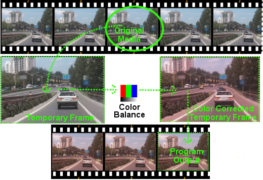
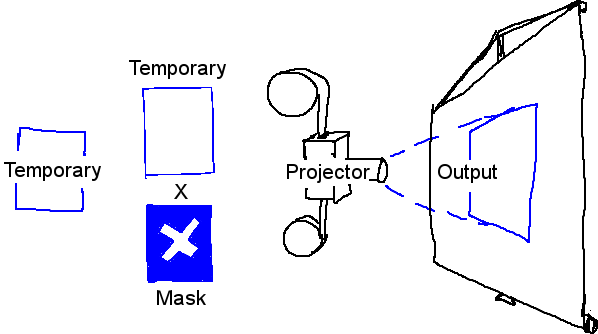
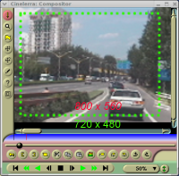
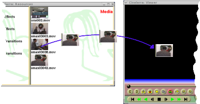
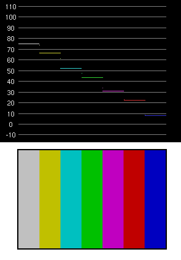
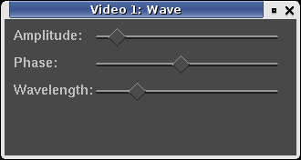

Cinelerra CV Manual
1. Introduction
1.1 About Cinelerra
For years, some people have wanted a way to edit their audio and video in one
place as fluidly as writing text. Cinelerra tries to be a single location for
all your audio and video editing needs. All the recording, editing, and
playback are handled here. It can be used as an audio player. It can be used
to record audio or video. It can even be used as a photo retoucher.
There are two types of moviegoers: producers who create new content and revisit it
for further refinement, and consumers who
want to acquire the content and watch it. Cinelerra is not intended for
consumers. Cinelerra has many features for uncompressed content, high
resolution processing, and compositing. Producers need these features in order to
retouch many generations of footage, which makes Cinelerra very complex.
Consumers should consider other tools such as Avidemux (http://www.avidemux.org/),
Kino (http://kinodv.org/) or Kdenlive (http://kdenlive.org/).
Quote from Miro's Wiki (http://www.mitvwiki.org/Cinelerra):
"The key difference between Cinelerra and many of the commercial editors is that
Cinelerra hides much less from the user, exposing much of the inner workings to
direct interaction. This can be harder to use, but does make it tremendously powerful,
and for some operations blistering fast."
1.2 The two versions of Cinelerra
There are two branches of Cinelerra. One can be found at
http://www.heroinewarrior.com and the other at
http://cinelerra-cv.org. This documentation is focused on
Cinelerra-CV (Community Version).
The official Cinelerra source code is developed "upstream" by Heroine Virtual, Ltd (HV).
HV shares its code base with a community version of Cinelerra (Cinelerra-CV), but does not
actively participate with the community of developers responsible for Cinelerra-CV.
HV likes to work on its own copy
of Cinelerra, releasing code on a periodic basis every 6 months or
so.
Cinelerra-CV was founded by developers who wanted to extend the functionality
and fix bugs inherent in the HV code base. They decided to develop Cinelerra
in a community fashion and not create a separate fork of the original HV code.
So, the Cinelerra CV code is very similar to the official release. CV coders
apply bug fixes (http://bugs.cinelerra-cv.org), enhancements to the SVN and
compliance fixes. Programmers occasionally send patches upstream. In this
way, Cinelerra CV has a number of features that the official version does not.
Unlike other programs, the HV release can not be described as "stable". After
HV's Cinelerra is released, there are often bugs or unusable new features.
When there is a new release, a CV member (j6t) merges HV's code with Cinelerra
CV code, taking the enhancements from HV and reformatting the CV code (white
spaces, function naming, directory naming) to be more similar to HV's with
slight changes to implementations. After the merge, the latest Cinelerra CV
release is a little unstable as users find bugs. Time permitting, the CV
programmers will address as many of these bugs as possible. In this way,
Cinelerra CV can be seen as the community's attempt to stabilize HV's release.
As mentioned, the community adds new enhancements to the HV source. Members
will comment on each other's implementations in order to create a more fully
functional and stable product. Occasionally, HV will give feedback on
implementations that the members of the CV submit to it. However, not all of
the enhancements that the community create make it upstream; for example, YUV
pipe rendering.
Given the above discussion, obtaining the SVN just before a merge will
generally be more stable than a post-merge CV version. Be aware that existing
project description files, or Edit Decision Lists (discussed below), may not be
compatible with the newly merged CV version. With any version of Cinelerra,
the task of finding bugs is relatively easy. However, clearly and concisely
documenting these bugs for the community that fixes them is a task that we ask
of all users of the software. The community is very responsive. Please help
them by creating well-formed bug reports. You may join our mailing list at
http://cinelerra-cv.org.
1.3 About this manual
This manual edition is 1.62.EN, for Cinelerra CV version
2.3. You may redistribute it and/or modify it under the terms of
the GNU General Public License, as published by the Free Software Foundation;
either version 2 of the License, or (at your option) any later version.
This manual originates from "Secrets of Cinelerra", an excellent primer written
by Adam WILLIAMS from HEROINE VIRTUAL LTD. In 2003 Alex
FERRER created a Wiki based on that manual and added many screenshots and
topic descriptions. At that time, Cinelerra CV still did not have its own manual
and information regarding the Community Version of Cinelerra was scattered across
the Internet (mailing-list, IRC, websites, wiki, etc). In 2006, Nicolas MAUFRAIS
combined the original "Secrets of Cinelerra" with the contents from Alex FERRER's
Wiki into a unified document.
Cinelerra-CV documentation maintainers:
English: Nicolas MAUFRAIS (coordinator), Raffaella TRANIELLO
(apprentice sorcerer)
Manual translators:
French: Jean-Luc COULON
Brazilian Portuguese: Flavio SOARES (maintainer), Willie MARCEL
Spanish: Alberto RAMALLO, Gustavo Iñiguez GOYA (chapter 17 -
Keyframes)
Basque: Iñaki Larrañaga MURGOITIO "Dooteo".
Other contributors: Alexandre BOURGET, Kevin BROSIUS, Carlos DAVILA,
Cillian DE ROISTE, Rafael DINIZ, Pierre DUMUID, Mike EDWARDS,
Martin ELLISON, Graham EVANS, Alex FERRER, Scott FRASE, Joe
FRIEDRICHSEN, gour, Gus Gus, Terje HANSSEN, Mikko HUHTALA, Ben JORDEN,
Nathan KIDD, Marcin KOSTUR, Joseph L., David MCNAB, Valentina MESSERI,
Sean PAPPALARDO, Paolo RAMPINO, Herman ROBAK, Dana ROGERS, Jim SCOTT, Andraz TORI,
Raffaella TRANIELLO, Hermann VOSSELER, Norval WATSON.
Thanks to the GNU project team, and particularly to Karl BERRY, maintainer
of GNU Texinfo, for the precious help he gave us during the elaboration of this
manual.
The sources of the manuals are Texinfo files. They are in the same SVN repository
as Cinelerra's source code (hvirtual/doc folder). They can be converted in many
formats. The doc/README_en file contains instructions for building the manual in
PDF, HTML (single page) HTML (one page per chapter, in a folder), plain TXT, TXT
in DokuWiki sintax (one file per chapter, in a folder), Docbook.
You can participate on editing this manual by making changes in the
Cinelerra-CV wiki:
http://cinelerra-cv.org/docs/wiki/doku.php
If you would like to translate this manual in your language, see the doc/TRANSLATIONS
file and contact the Cinelerra-CV Community.
1.4 Getting help
Help can be found at:
1.5 Tutorials
Some Cinelerra tutorials are available on the internet:
- Cinelerra Tutorial - Getting Started, by Rob FISHER
http://www.robfisher.net/video/cinelerra1.html
- Cinelerra video tutorials, by The Source - tutorials (talk and screencast)
inside The Source Show
http://www.thesourceshow.org/node/11
#1 is in Episode 6 "The Return Of The Pixel" from min 45 to min 60 (Introduction
to Cinelerra and non linear editing, the 4 windows interface, project attributes,
loading files).
#2 is in Episode 1 "The Filesystem Menace" from min 32 to min 54 (Arming tracks,
sample zoom, selection boxes, two screen editing, cut and paste editing, adding
and moving tracks, drag and drop editing, trimming, transitions).
#3 is in Episode 2 "Attack Of The Elephants (Dream)" from min 45 to 1:12 (Keyframes,
camera and projector, masks, titles, effects).
- Edicion de video bajo GNU/Linux (Cinelerra), in Spanish, by Gustavo
Iñiguez GOYA
http://kutxa.homeunix.org/cinelerra
- Guide d'utilisation de Cinelerra, in French
http://www.funix.org/fr/linux/cinelerra.htm
- Faire un montage video French tutorial for beginners on Cinelerra HV,
by Laurent BELLEGARDE
http://laurent.bellegarde.free.fr/lprod/tutoriels/tutoriel_cinelerra_niv1_debutant.pdf
- Capturando e editando video usando Software Livre, in Portuguese, by Rafael
DINIZ
https://docs.indymedia.org/view/Sysadmin/Cinelerra
- Tutorial Cinelerra, in Portuguese, by Leo GERMANI
http://www.estudiolivre.org/tiki-index.php?page=Cinelerra
- Cinelerra is very easy, Introduction to Cinelerra, for beginners, by
Paolo RAMPINO
http://project.akirad.net/node/12
1.6 HOWTOs
Some HOWTOs for specific needs are available on the internet:
- Beginner's Guide to Exporting Video from Cinelerra, by Scott FRASE
http://content.serveftp.net/video/renderTest/guideToCinExport.html
- Capturing desktop screens in Cinelerra, screencast by Scott FRASE
http://www.youtube.com/watch?v=MhaOgNQ0Bbc
- HOWTO use the Chromakey (HSV) plugin, by Jerome CORNET
http://jcornet.free.fr/linux/chromakey.html
- HOWTO make professional looking Scrolled Credits in Cinelerra, by
David MCNAB
http://www.freenet.org.nz/misc/cintitles/
- Crear títulos diferentes con Cinelerra in Spanish, by Gustavo
Iñiguez GOYA - how to add effects to titles. With downloadable sample
projects.
http://kutxa.homeunix.org/bloga/2007/08/13/crear-titulos-diferentes-con-cinelerra/#more-246
- SimAV's HOWTOs, by Simeon VOLKEL - How to create a picture in picture
effect, How to create overlays, How to change theme.
http://g-raffa.eu/SimAV/
- Tips for Transcoding Cinelerra Compatible Video with FFmpeg,
MEncoder, by Alexander GRUNDNER
http://www.alexandergrundner.com/2007/07/19/tips-for-transcoding-cinelerra-compatible-video-with-ffmpeg-mencoder
- FFMPEG compatibility - HOWTO produce videos that can be played in common
proprietary multimedia players
http://ffmpeg.mplayerhq.hu/compat.html
1.7 Miscellaneous links
Miscellaneous links:
2. Installation
This is the general contents of all Cinelerra packages.
- Foreign language translations - These go into
`/usr/share/locale'
- Cinelerra executable - This goes into `/usr/bin'
- Cinelerra plugins - These go into `/usr/lib/cinelerra' in 32 bit
systems and `/usr/lib64/cinelerra' in 64 bit systems.
- soundtest - Utility for determining sound card buffer size.
- mplexlo - Multiplexing of MPEG elementary streams without
standards conformance but more efficiently.
- mpeg3cat - Utility for reading an MPEG file from a certain
standard and outputting it to stdout.
- mpeg3toc, mpeg3cat, mpeg3dump - Utilities for indexing and
reading MPEG files.
- mpeg3peek - Utility for displaying the byte offset of a
frame in an MPEG file.
2.1 Hardware requirements
Cinelerra is demanding on all PC subsystems, as reading, decoding and playing
video can be quite taxing. Thus, performance and usability of Cinelerra are
directly proportional to the video format (SVCD/DV/HDV/HD/etc) used and the CPU
and I/O bus speeds and video and memory bus architecture of your hardware.
Therefore, it stands to reason that a less powerful system will be sufficient
for users working with audio only or lower resolution video formats. However,
that same system may slow down considerably when playing back a higher
resolution format, such as DV video. Effects and several tracks of audio will
compound these problems. Given these constraints, here are some suggestions
for running Cinelerra:
- CPU speed
At least 500 MHz CPU speed, anything less would be useless. Dual-core and
SMP processors greatly improve Cinelerra speed.
- Memory
When working with video, a large amount of free memory available can help speed
up operations by avoiding unnecessary disk swaps and keeping material ready
accessible. Have at least 256 Megabytes of memory. To really use Cinelerra for
higher resolution video formats and larger projects, greater than 1 Gb memory space
is suggested.
- Storage
Video editing can be quite I/O intensive. Storage requirements are based on
your particular video editing needs. If you expect to produce long pieces in
uncompressed or larger resolution formats, you should have large (>200 Gb) and
fast (<10ms) disk drives. For example, DV uses about 3.5 Megs per second, or
12 Gigs per hour. For smaller projects you might get away with 1 Gb. RAID0
(stripe set), RAID1+0 (striped/mirrored) or RAID5 (stripe set with parity) will
also speed playback
- Video adapters
Since version 2.1, Cinelerra benefits from OpenGL hardware
acceleration. Make sure the video card you use supports OpenGL 2.0 in order to
benefit from that acceleration. Nvidia series 7 (ie. 7600GS) are known to work
well. Unfortunately, ATI's Linux drivers do not support a complete
implementation of OpenGL 2.0. If you are going to send a composite signal
directly to a TV or video recorder, make sure your video card supports it.
- Multiple monitors
You can use XFree86's Xinerama features to work on multiple monitor heads.
This feature can be a very effective way of increasing productivity.
- TV-Out
If your Adapter supports a TV-Out option, connecting a TV or S-Video
monitor to it is a great way to view your material as it will be seen on TV
screen.
- Video grabbers
If you have an analog video camera, or want to grab video from a trusty
old VCR, you need some sort of video grabber. Video grabbers are supported
through Video4Linux in Cinelerra.
- Firewire
Firewire is the fastest way to download material into your system. Unless
you will be importing your media from a CD, any other
pre-captured format or use an analog video grabber, you will need firewire
on your system.
- DV cameras
There is an large variety of DV cameras that can be used with Cinelerra.
Almost any camera that can connect using firewire will work.
Be sure to set the appropriate parameters on the video grabbing system to match
your particular camera. http://www.linux1394.org has a complete listing
of supported cameras.
2.2 Software requirements
To install Cinelerra you should have a current version of GNU/Linux with the X
Window System (e.g., X.org) and some audio management software properly running.
You should also have the following libraries installed (partial list):
- a52dec
- dv
- faac
- ffmpeg
- fftw
- lame
- libavc1394
- libfaad2
- libraw1394
- mjpegtools
- OpenEXR
- theora
- x264
You will also need the headers for all required libraries. For many distributions,
this means that you will need to install the "-dev" or "devel" packages that
correspond to your installed library packages. In addition to the libraries listed
here, be sure you have the X library headers. Missing headers will usually result
in compilation failing with cryptic error messages.
2.3 Compiling Cinelerra CV
2.3.1 Usual compilation process
You can install Cinelerra CV by fetching the source code and compiling it. That
is the method to use if you want to compile the most up-to-date version of
Cinelerra CV.
The source code of Cinelerra-CV is available from a Subversion (SVN) repository.
Subversion is available for download at http://subversion.tigris.org/, but
most likely your distribution has prebuilt packages. Complete documentation of
subversion is available at http://svnbook.red-bean.com/nightly/en/index.html.
- First you have to fetch Cinelerra CV's sources from the SVN repository
(approximately 170Mb or 60Mb for a read-only checkout). Run the following command:
svn checkout svn://svn.skolelinux.org/cinelerra/trunk/hvirtual
The svn command above will create in your current working directory a directory
hvirtual that contains the sources.
- Go to the hvirtual directory:
cd hvirtual
- Create the `./configure' file by running:
autoreconf -i --force
- Then run the `.configure' file:
./configure --with-buildinfo=svn/recompile
This option makes the revision number to be shown in the About tab of the
Preferences window.
You can have a look at all the other options available by running:
./configure --help
Most of the missing dependencies should be listed after running.
- And run make:
make
If you wish to log the make output in order to search for errors, this command
can be used:
make 2>&1 | tee logfile
- Install Cinelerra CV:
sudo make install
- Finally run as root (for first time compilation only):
ldconfig
Notes:
- SMP machine:
If you compile Cinelerra CV on a multiprocessor machine (SMP), we recommend you
to add the `-j 3' option to make in order to benefit from the available
CPUs.
- For x86 CPUs only:
You probably want to enable MMX support. To do that, run ./configure
with the `--enable-mmx32' option. If you do that, you may have to use the
`--without-pic' option too, otherwise, compilation may fail.
- For Pentium-M:
Here are some useful compiler flags:
./configure --prefix=/usr --enable-x86 --enable-mmx32 --enable-freetype2
--with-buildinfo=svn/recompile CFLAGS='-O3 -pipe -fomit-frame-pointer
-funroll-all-loops -falign-loops=2 -falign-jumps=2 -falign-functions=2
-ffast-math -march=pentium-m -mfpmath=sse,387 -mmmx -msse'
- For 64bits:
As root, run:
./autogen.sh
./configure
Replace `-prefer-non-pic' with `-fPIC \' in your
`quicktime/ffmpeg/libavcodec/i386/Makefile.am' file.
make
make install
- Updating the source code:
If you already fetched the sources of an out of date revision, you can update
to the latest revision by running:
svn update
- Installing old revisions:
If you wish to fetch an old revision, run:
svn checkout -r <revision>
svn://svn.skolelinux.org/cinelerra/trunk/hvirtual
- Installing several revisions:
If you wish to install several revisions of Cinelerra CV on your computer,
create a `/usr/local_cinelerra' folder, and use the following options with
./configure (replace `xxx' by the number of the revision you
are compiling):
`--prefix=/usr/local_cinelerra/rxxx
--exec-prefix=/usr/local_cinelerra/rxxx --program-suffix=_rxxx'
You will have to run Cinelerra CV from the directory in which it is installed:
cd /usr/local_cinelerra/rxxx
./cinelerra_rxxx
If you install Cinelerra using this method, the translated `.po' files do
not get installed correctly. If you want to run Cinelerra in another language,
See section Environment variables, for specific instructions.
- Automake version:
You need automake version 1.7 to build. 1.4 will not work. Autoconf 2.57 is
also required to build.
2.3.2 Compiling with debugging symbols
When Cinelerra CV crashes, one can compile it with debugging symbols and run it
inside gdb. The information displayed by gdb is far more detailed and
will help CV developers find bugs faster.
First, fetch the SVN sources as usual. Then, run the following commands:
cd hvirtual
nice -19 autoreconf -i --force
mkdir ../hvdbg
cd ../hvdbg
nice -19 ../hvirtual/configure CXXFLAGS='-O0 -g' CFLAGS='-O0 -g'
--with-buildinfo=svn/recompile
cd quicktime/ffmpeg
nice -19 make CFLAGS='-O3'
cd ../..
nice -19 make
nice -19 make install
See section Reporting bugs, for information about running Cinelerra inside gdb.
2.4 Running Cinelerra
The simplest way to run Cinelerra is by running /usr/bin/cinelerra
Command line options are also available by typing cinelerra -h These
options are described in several sections below. For rendering from the
command line See section Rendering files.
If you get this error message when running Cinelerra for the first time:
WARNING:/proc/sys/kernel/shmmax is 0x2000000, which is too low
See section Freeing more shared memory, for details.
2.5 Live CDs
You can try and use Cinelerra on a computer without having to install it on your
system. This is possible by using Live CDs, that are GNU/Linux distributions
which boot from a CD, without installation on a hard drive. Here are some of
the Live CD's known to contain Cinelerra:
2.6 Arch Linux
Cinelerra CV is included in the Arch Linux community repository.
To install the cinelerra package enable the community repository first
(See http://wiki.archlinux.org/index.php/AUR_User_Guidelines for more
info).
Then run the following command from the command line:
pacman -Sy cinelerra-cv
2.7 Debian
2.7.1 Debian binaries
Debian packages are available through Deb Multimedia: https://www.deb-multimedia.org/
Stable (Jessie) comes with Cinelerra-CV 2.2, Testing (Stretch) and Unstable (Sid) already have the latest version 2.3.
2.7.2 Debian prerequisites
Standard development packages
These are packages which might be considered "standard" development pacakges. The chances are, though,
that you wouldn't have them installed by default, so you will probably need them:
- libtool
- nasm
- x11proto-xf86vidmode-dev - needed if you get
error: X11/extensions/xf86vmode.h: No such file or directory
- libxv-dev - needed if you get
error: X11/extensions/Xvlib.h: No such file or directory
- libxxf86vm-dev - needed if you get
/usr/bin/ld: cannot find -lXxf86vm
Extra Debian packages
These are development packages which are "non-standard", and you'll almost certainly have to install them if
you want to compile Cinelerra:
- libogg-dev
- libvorbis-dev
- libtheora-dev
- libopenexr-dev
- libdv-dev
- libpng-dev
- libjpeg62-dev
- libtiff4-dev
- libfreetype6-dev
- libfaad-dev
- libsndfile1-dev
- uuid-dev
Some packages which may or may not be required:
- libavutil-dev
- libmpeg3-dev
- libavcodec-dev
External packages
You need some prerequisites which are not found in Debian's official
repositories. You should add in your `/etc/apt/sources.list' the following
line, which is Christian Marillat's repository:
deb http://www.debian-multimedia.org/ sid main
You will need to apt-get install the following packages:
2.8 Ubuntu
2.8.1 Instructions for Ubuntu packages installation
Chose a repository from the ones above according to your release and CPU type
and install the package. Here are 3 ways of doing that:
With Synaptic Package Manager (recommended):
Open the Software Sources Window. You can do it in two ways:
- Go to System -> Administraton -> Software Sources
- Inside Synaptic Package Manager: Go to Settings -> Repositories.
Make sure you have universe, multiverse and restricted sources checked in the
first tab.
Click on tab Third Party. Click on the Add button and enter:
ppa:cinelerra-ppa/ppa
Clicking Add Source will display the new repository enabled in the Software
Sources window.
You should now see Cinelerra in the list of packages available in Synaptic.
Follow Synaptic instructions for installation.
With the command line:
Edit directly your `/etc/apt/sources.list' file.
Make sure you have universe, multiverse and restricted sources enabled by checking
you have the following line uncommented:
deb http://ppa.launchpad.net/cinelerra-ppa/ppa/ubuntu <RELEASE> main
where <RELEASE> is your installed version of Ubuntu (precise, trusty, xenial, etc).
Add the complete APT line of your chosen repository.
Install Cinelerra by typing in your terminal:
apt-get update
and then
apt-get install cinelerra
HOWTOs for package installation or compilation from source code
Compilation from source code on Ubuntu (for beginners):
http://www.g-raffa.eu/Cinelerra/HOWTO/compilation.html
2.9 Gentoo
Installation for Gentoo GNU/Linux is very straight forward. Simply type:
emerge cinelerra
as root and it should install and run without any problems. Note that you may need
to put cinelerra in your `/etc/portage/package.keywords' file in order to
unmask it:
echo "=media-video/cinelerra ~x86" >> /etc/portage/package.keywords
See https://wiki.gentoo.org/wiki/Handbook:X86/Working/Portage
for details. If you are running on an architecture other than x86 e.g. amd64, you
will need to replace ~x86 with the relevant architecture e.g. ~amd64.
You may also want to adjust the USE flags. First run:
emerge -av cinelerra
to see what flags are available and then add the relevant ones to
`/etc/portage/package.use':
echo "media-video/cinelerra ieee1394" >> /etc/portage/package.use
This would enable support for firewire devices.
2.10 Fedora
Cinelerra-CV is not available in Fedora by default. It's also not in the RPM Fusion repository. The ATrpms repository offers the old version 2.1 for Fedora 20: http://packages.atrpms.net/name/cinelerra/
If you want to compile CinelerraCV from source you can find detailed instructions here:
2.11 Mandriva
CinelerraCV 2.2 is officially available in OpenMandriva 2014.2. Make sure restricted packages are activated in the control center. Note: cinelerra doesn't appear in the "programs with GUI" list. You have to show the complete list to install it.
2.12 Slackware
You can find prebuilt Cinelerra-CV packages at the following locations:
2.13 OpenSUSE
RPMs for openSUSE are in the Packman repositories: http://packman.links2linux.org/package/cinelerra-cv
You can install directly with Yast if you have Packman configured as a Yast install source.
2.14 Manjaro
Cinelerra-CV can be installed through the Octopi package manager. Install the following packages:
- libquicktime
- mjpegtools
- cinelerra-cv
2.15 ROSA Linux
Packages for Cinelerra-CV are available in the Restricted Updates Repository:
To install Cinelerra-CV in ROSA Linux, enable ROSA Restricted Updates repository on "Install and Remove Software".
Update packages list:
urpmi.update -a
Install cinelerra-cv rpm package:
urpmi cinelerra-cv
3. Configuration
Because of its flexibility, Cinelerra cannot be optimized without
special configuration for your specific needs. Unfortunately, very few parameters are
adjustable at compile time. Therefore, runtime configuration is the only option for most
users because of the multitude of parameters available.
Below are configuration options as well as the supported API's in GNU/Linux.
In Cinelerra, go to settings->preferences to see the options.
3.1 Environment variables
In UNIX derivatives, environment variables are global variables in the shell
which all applications can read. They are set with a command like set
VARIABLE=value. All the environment variables can be viewed with a command
like env. Cinelerra recognizes the following environment variables:
- LADSPA_PATH
If you want to use LADSPA plugins, this must be defined: a colon separated
list of directories to search for LADSPA plugins. These are not native
Cinelerra plugins. See section Ladspa effects.
- GLOBAL_PLUGIN_DIR
The directory in which Cinelerra should look for native plugins. The default is
`/usr/lib/cinelerra' but you may need an alternate directory if you share
the same executable directory among many machines via NFS. Plugins of
different binary formats need to be in different directories.
- LANG and LANGUAGE
Cinelerra can be localized to display menus and messages in many languages.
Cinelerra language settings are normally read from your GNU/Linux language settings.
To run Cinelerra on a language different than the one selected on your system
just change the LANG and LANGUAGE environment variables.
For example, open a shell and type: export LANG=es_ES LANGUAGE=es_ES, then run
cinelerra from the same shell. It will open set on the Spanish language.
Available languages are:
- en_EN - English
- es_ES - Espanol
- sl_SI - Slovenian
- fr_FR - Francais
- eu_ES - Euskera
- de_DE - German
- pt_BR - Brazilian Portuguese
- it_IT - Italian
If your distribution has only UTF-8 support (like Ubuntu), first you must create
the language charset with this command:
localedef -c -i (language_prefix) -f (your ISO-8859 variant)
(language_prefix).(your ISO-8859 variant)
This is an example for Italian language:
localedef -c -i it_IT -f ISO-8859-15 it_IT.ISO-8859-15
Then you can run cinelerra with this command:
env LANG=$(echo $LANG | sed -e s/UTF-8/(your ISO-8859 variant)/g)
cinelerra
This is an example for Italian language:
env LANG=$(echo $LANG | sed -e s/UTF-8/ISO-8859-15/g) cinelerra
In some cases (e.g. if you compiled Cinelerra specifying a `--prefix=' option different from `/usr/local') the translated .po files are not installed. If you can't run Cinelerra in your chosen language, try running the following commands before changing the LANG and LANGUAGE environment variables:
cd hvirtual
./configure prefix=/usr
cd po
sudo make install
3.2 Audio drivers
The audio drivers are used for both recording and playback. Their
functionality is described below:
3.2.1 Sound driver attributes
- Device path
Usually a file in the `/dev/' directory which controls the device.
- Bits
The number of bits of precision Cinelerra should set the device for. This
sometimes has a figurative meaning. Some sound drivers need to be set to 32
bits to perform 24 bit playback and will not play anything when set to 24 bits.
Some sound drivers need to be set to 24 bits for 24 bit playback.
- Port
The IEEE1394 standard specifies something known as the port. This is
probably the firewire card number.
- Channel
The IEEE1394 standard specifies something known as the channel. For DV cameras
it is always 63.
- Device
The chosen device.
- Stop playback locks up
This ALSA only checkbox is needed if stopping playback causes the software to lock up.
3.2.2 OSS
This was the first GNU/Linux sound driver. It had an open source
implementation and a commercial implementation with more sound cards supported.
It was the standard sound driver up to GNU/Linux 2.4. It still is the only
sound driver which an i386 binary can use when running on an x86_64 system.
3.2.3 OSS Envy24
The commercial version of OSS had a variant for 24 bit 96 KHz soundcards. This
variant required significant changes to the way the sound drivers were used,
hence the need for the new driver.
3.2.4 Alsa
ALSA is the most common sound driver in GNU/Linux 2.6. It supports most
of soundcards now. It takes advantage of low latency features in GNU/Linux 2.6
to get better performance than OSS had in 2.4, but roughly the same performance
that OSS had in 2.0. Unfortunately ALSA is constantly changing. A program
which works with it one day may not the next day. New wrappers are being
developed on top of ALSA. We plan to support them at regular
intervals, though not at every new release of a new wrapper.
ALSA is no longer portable between i386 and x86_64. If an i386 binary tries to
play back on an x86_64 kernel, it will crash. For this scenario, use OSS.
3.2.5 Esound
ESOUND was a sound server that sat on top of OSS. It was written for a window
manager called Enlightenment. It supports a limited number of bits and has
high latency compared to more modern drivers, but it does have the ability to
multiplex multiple audio sources. It is unknown whether it still works.
3.2.6 Raw 1394
The was the first interface between GNU/Linux software and firewire camcorders.
It is the least reliable way to play audio to a camcorder and consists of
a library on top of the kernel commands.
3.2.7 DV 1394
This is the second rewrite of DV camcorder support in GNU/Linux. This is the most
reliable way to play audio to a camcorder and consists of direct kernel
commands.
3.2.8 IEC 61883
The third rewrite of DV camcorder support in GNU/Linux. This is a library on
top of RAW 1394 which is a library on top of the kernel commands. It is less
reliable than DV 1394 but more reliable than RAW 1394. The next rewrite ought
to fix that. Visit http://www.linux1394.org for more information and
the latest drivers.
3.3 Video drivers
The video drivers are used for video playback in the compositor and the viewer.
3.3.1 Video driver attributes
- Display
The interface is intended for dual monitor displays. Depending on the value of
Display, the Compositor window will appear on a different monitor from the rest
of the windows.
- Device path
Usually a file in the `/dev/' directory which controls the device.
- Swap fields
Make the even lines odd and the odd lines even when sending to the device. On
an NTSC or 1080i monitor the fields may need to be swapped to prevent jittery
motion.
- Output channel
You may need a specific connector to send video out to devices with multiple outputs.
- Port
The IEEE1394 standard specifies something known as the port. This is
probably the firewire card number.
- Channel
The IEEE1394 standard specifies something known as the channel. For DV
cameras it is always 63.
3.3.2 X11
This was the first method of graphical display on any UNIX system.
It just writes the RGB triplet for each pixel directly to the
window. It is the slowest playback method. It is still useful as a fallback
when graphics hardware can not handle very large frames.
3.3.3 X11-XV
This was an enhancement to X11 in 1999. It
converts YUV to RGB in hardware with scaling. It is the preferred playback
method but can not handle large frame sizes. The maximum video size for XV is
usually 1920x1080.
3.3.4 X11-OpenGL
The most powerful video playback method is OpenGL. With this driver, most
effects are done in hardware. OpenGL allows video sizes up to the maximum
texture size, which is usually larger than what XV supports, depending on the
graphics driver. To enable it you will need a binary built with OpenGL
support. The configure option to enable OpenGL is
`--enable-opengl'. You need a video card which supports OpenGL 2.0.
Recent Nvidia video cards should work. You also need to use a video driver
supporting OpenGL 2.0, such as Nvidia's binary driver. To know if your video
driver supports OpenGL 2.0, type the following command: glxinfo | grep
"OpenGL version"
- Video driver supporting hardware OpenGL 2.0 rendering:
OpenGL version string: 2.0.2 NVIDIA 87.74
- Video driver not supporting hardware OpenGL 2.0 rendering:
OpenGL version string: 1.4 (2.0.2 NVIDIA 87.74)
OpenGL relies on PBuffers and shaders to do video rendering. The graphics
driver must support OpenGL 2.0 and Cinelerra needs to be explicitly compiled with
OpenGL 2.0 support. This requires compiling it on a system with the OpenGL 2.0
headers. PBuffers are known to be fickle. If the graphics card does not have
enough memory or does not have the right visuals, PBuffers will not work. If
OpenGL does not work, try seeking several frames or restarting Cinelerra.
Limitations:
- OpenGL does not affect rendering. It just accelerates playback.
- X11-OpenGL processes everything in 8 bit color models, although the
difference between YUV and RGB is retained.
- OpenGL does not work with frames whose size is larger than 4096x4096.
Here is what is written in the console when working with large frames:
BC_Texture::create_texture frame size <frame_width>x<frame_height> bigger
than maximum texture 4096x4096.
- The scaling equation set in the preferences window is ignored by OpenGL.
OpenGL always uses linear scaling.
- Project and track sizes need to be multiples of four for OpenGL to work.
- To get the most acceleration, OpenGL-enabled effects must be placed after
software-only effects. All rendering before the last software-only effect is
done in software. The core Cinelerra operations like camera and projector are
OpenGL.
- Not all of the effects support OpenGL acceleration. The following effects
support OpenGL: Brightness, Chromakey, Chromakeyhsv, Color balance,
Deinterlace, Diffkey, Dissolve, Flip, Frames to fields, Freeze frame, Gamma,
Gradient, Histogram, Hue saturation, Interpolate Pixels, Invert video, Linear
blur, Overlay, Perspective, Radial blur, RGB601, Rotate, Scale, Threshold,
Zoomblur.
3.3.5 Buz
This is a method for playing motion JPEG-A files directly to a composite analog
signal. It uses a popular hack of the Video4Linux 1 driver from 2000 to
decompress JPEG in hardware. Even though analog output is largely
obsolete, newer drivers have replaced BUZ.
3.3.6 Raw 1394 video playback
This was the first interface between GNU/Linux software and firewire
camcorders. It is the least reliable way to play video to a camcorder and it
consists of a library on top of the kernel commands.
3.3.7 DV 1394 video playback
The second rewrite of DV camcorder support in GNU/Linux. This was the most
reliable way to play video to a camcorder and consists of direct kernel
commands.
3.3.8 IEC 61883 video playback
The third rewrite of DV camcorder support in GNU/Linux. This is a library on
top of RAW 1394 and is less
reliable than DV 1394 but more reliable than RAW 1394. The next rewrite ought
to fix that. Visit http://www.linux1394.org for more information and
the latest drivers.
3.4 Playback
3.4.1 Audio out
These determine what happens when you play sound from the timeline.
- Playback buffer size
For playing audio, small fragments of sound are read from disk and processed
sequentially in a virtual console. A larger value here causes more latency when
you change mixing parameters but yields more reliable playback.
Some sound drivers do not allow changing of the console fragment, so latency is
unchanged no matter what the value.
Previously, a good way of ensuring high quality playback was to read bigger
fragments from the disk and break them into smaller fragments for the soundcard.
That changed when the virtual console moved from the push model to the pull model.
Since different stages of the rendering pipeline can change the rate of the incoming
data, it would be difficult to disconnect the size of the console fragments
from the size of the fragments read from disk.
- Audio offset
The ability to tell the exact playback position on GNU/Linux sound drivers is
poor, if it is provided at all. Since this information is required for
proper video synchronization, it has to be accurate. The audio offset
allows users to adjust the position returned by the sound driver in order to reflect
reality. The audio offset does not affect the audio playback or rendering at
all. It merely changes the synchronization of video playback.
The easiest way to set the audio offset is to create a timeline with one video
track and one audio track. Expand the audio track and center the audio pan.
The frame rate should be larger than 24 fps and the sampling rate should be
greater than 32000. The frame size should be small enough for your computer to render
it at the full frame rate. Highlight a region of the timeline starting at 10
seconds and ending at 20 seconds. Drop a gradient effect on the video
track and configure it to be clearly visible. Drop a synthesizer effect on
the audio and configure it to be clearly audible.
Play the timeline from 0 and watch to see if the gradient effect starts exactly
when the audio starts. If it does not, expand the audio track and adjust the
nudge. If the audio starts ahead of the video, decrease the nudge value. If
the audio starts after the video, increase the nudge value. Once the tracks
play back synchronized, copy the nudge value to the audio offset value in
preferences.
Note: if you change sound drivers or you change the value of Use
software for positioning information, you will need to change the audio offset
because different sound drivers are unequally inaccurate.
- View follows playback
This causes the timeline window to scroll when the playback cursor moves. This
can bog down the X Server or cause the timeline window to lock up for long
periods of time while drawing the assets.
- Use software for positioning information
Most soundcards and sound drivers do not give reliable information on the number
of samples the card has played. You need this information
for synchronization when playing back video. This option causes the sound driver
to be ignored and a software timer to be used for synchronization.
- Audio playback in realtime
Back in the days when 150 MHz was the maximum speed for a personal computer, this
setting allowed uninterrupted playback during periods of heavy load. It forces
the audio playback to the highest priority in the kernel. Today, it is most
useful for achieving very low latency between console tweaks and soundcard output.
You must be root to get real-time priority.
- Audio driver
There are many sound drivers for GNU/Linux. This allows selecting one sound
driver and setting parameters specific to it. The sound drivers and their
parameters are described in the sound driver section. See section Audio drivers.
3.4.2 Video out
These determine how video gets from the timeline to your eyes.
- Play every frame
This causes every frame of video to be displayed even if it means that the playback
of the video track(s) will fall behind. This option should always be enabled
unless you use uncompressed codecs. As of 1/2007, most compressed codecs do not
support frame dropping anymore.
- Framerate achieved
The number of frames per second being displayed during playback. This is
updated during playback only.
- Decode frames asynchronously
If you have lots of memory and more than one CPU, this option can improve
playback performance by decoding video on one CPU as fast as possible while
dedicating the other CPU to playing back video. It assumes all playback
operations are forward and no frames are dropped. Operations involving reverse
playback or frame dropping are negatively impacted.
Since this option requires enormous amounts of memory, Cinelerra may crash if the
input frames are very large.
- Scaling equation
This algorithm is used when video playback involves any kind of scaling or
translation in the virtual console. This does not affect 1:1 playback.
- Nearest neighbor enlarge and reduce
Low quality output with fast playback. Produces jagged edges and uneven motion.
- Bicubic enlarge and bilinear reduce
High quality output with slow playback. Bicubic interpolation is used for enlarging,
which blurs slightly but does not show stair step artifacts. A bilinear
interpolation is used for reduction, which produces very sharp images and reduces noise.
Bilinearly reduced images can be sharpened with a sharpen effect with less noise
side effects than a normal sized image.
- Bilinear enlarge and bilinear reduce
When slight enlargement is needed, a bilinear enlargement looks better than a
bicubic enlargement.
- Preload buffer for Quicktime
The Quicktime/AVI decoder can handle DVD sources better when this is set to around
10000000. This reduces the amount of seeking required. When
reading high bitrate sources from a hard drive, this tends to impair performance
by slowing down decoding. For normal use this should be 0.
- DVD subtitle to display
DVD IFO files usually contain subtitle tracks. These must be decoded with
the MPEG decoder. Select Enable subtitles to enable subtitle decoding.
There are usually multiple subtitle tracks indexed by number and starting from
0. Enter the index number of the subtitle track to be decoded in the "DVD
Subtitle to display" text box or use the tumbler to increase the index value.
Go to the asset corresponding to the MPEG file in the Resources window and
right click. Click on Info. The number of subtitle tracks is shown at the
bottom.
- Interpolate CR2 images
Enables interpolation of CR2 images. Interpolation is required since the raw
image in a CR2 file is a Bayer pattern. The interpolation uses dcraw's built-in
interpolation and is very slow. This operation can be disabled and the
Interpolate Pixels effect used instead for faster previewing.
- White balance CR2 images
This enables white balancing for CR2 images if interpolation is also enabled.
This is because proper white balancing needs a blending of all 3 primary colors.
White balance uses the camera's matrix which is contained in the CR2 file.
Disabling white balancing is useful for operations involving dark frame
subtraction. The dark frame and the long exposure need to have the same color
matrix.
If you disable Interpolate CR2 Images and use the Interpolate Pixels
effect, be aware the Interpolate Pixels effect always does both
interpolation and white balancing using the camera's matrix, regardless of the
settings in Preferences. Dark frame subtraction needs to be performed before
Interpolate Pixels.
- Video driver
Normally video on the timeline goes to the compositor window during both continuous
playback and when the insertion point is repositioned. Instead of sending
video to the Compositor window, the video driver can be set to send video to
another output device during continuous playback. However, this does not affect
where video is routed when the insertion point is repositioned.
The video drivers and their parameters are described in the video drivers
section. See section Video drivers.
3.5 Recording
The parameters here expedite the File->Record... function by allowing the
user to pre-configure the file format. The file format is applied to all
recordings. Also set here is the hardware for recording, since the hardware
determines the supported file format (in most cases).
3.5.1 File format
This determines the output file format for recordings. It depends heavily on
the type of driver used. The menu selections are the same as the rendering
interface. See See section Rendering files.
The Record audio tracks toggle must be enabled to record audio. The
Record video tracks toggle must be enabled to record video. The wrench
button left of each toggle opens a configuration dialog in order to set the
compression scheme (codec) for each audio and video output stream. The audio
and video is wrapped in a container format defined by the File Format menu.
Different wrappers may record audio only, video only, or both.
Some video drivers can only record to a certain container. DV, for example, can
only record to Quicktime with DV as the video compression scheme. If the video driver
is changed, the file format may be updated to give the supported output. If
you change the file format to an unsupported format, it may not work with the
video driver.
3.5.2 Audio in
These determine what happens when you record audio.
- Record driver
This is used for recording audio in the Record window. It may be configured the same as
the Record Driver for video if the audio and video are wrapped in the same
stream. Available parameters vary depending on the driver. Note that the drivers
are the same as those available in Preferences->Playback. See section Audio drivers.
- Samples to write to disk at a time
First, audio is read in small fragments from the device. Then, many small fragments
are combined into a large fragment before writing to disk. The disk writing
process is done in a different thread. The value here determines how large the
combination of fragments is for each disk write.
- Sample rate for recording
Regardless of what the project settings are, the value set here will be the sample rate used for
recording. The sample rate should be set to the highest value the audio device supports.
3.5.3 Video in
These determine what happens when you record video.
- Record driver
This is used for recording video in the Record window. It may be configured the same as
the Record Driver for video if the audio and video are wrapped in the same
container. Available parameters vary depending on the driver. Note that the drivers available
are the as those available in Preferences->Playback. See section Video drivers.
- Frames to record to disk at a time
Frames are recorded in a pipeline. First, frames are buffered in the device.
Then, they are read into a larger buffer for writing to disk. The disk writing
is done in a separate thread from the device reading. For certain codecs the
disk writing uses multiple processors. The value set here determines how many frames
are written to disk at a time.
- Frames to buffer in device
This is the number of frames to store in the device before reading and determines
how much latency there can be in the system before frames are dropped.
- Use software for positioning information
Video uses audio for synchronization, but most soundcards do not give accurate
position information. Selecting this options makes Cinelerra calculate an
estimation of audio position in software instead of hardware for synchronization.
- Sync drives automatically
For high bitrate recording, the disk drives you use may be fast enough to store the data but
your operating system may wait several minutes and stall as it writes several minutes of
data at a time. This forces the operating system to flush its buffers every second
instead of every few minutes to produce slightly better real-time behavior.
- Size of captured frame
This is the size of the recorded frames in pixels. It is independent of the project
frame size because most video devices only record a fixed frame size. If the
frame size given here is not supported by the device, Cinelerra may crash.
- Frame rate for recording
The frame rate recorded is different from the project settings. This sets the
recorded frame rate.
3.6 Performance
You will spend most of your time configuring this section. The main focus of
the performance section is rendering parameters not available in the rendering dialog.
- Cache items
To speed up rendering, several assets are kept open simultaneously. This
determines how many are kept open. A number too large may exhaust your memory
pretty fast and result in a crash. A number too small may result in slow
playback as assets need to be reopened more frequently.
- Seconds to preroll renders
Some effects need a certain amount of time to settle in. Checking this option
sets a number of seconds to render without writing to disk before the selected
region is rendered. When using the renderfarm, you will sometimes need to
preroll to get seemless transitions between the jobs. Every job in a renderfarm
is prerolled by this value. This does not affect background rendering, however.
Background rendering uses a different preroll value.
- Force single processor use
Cinelerra tries to use all processors on the system by default, but sometimes
you will only want to use one processor, like in a renderfarm client. This
forces only one processor to be used. In addition, the operating system usually
uses the second processor for disk access. So this option is really a
1.25 processor mode. The value of this parameter is used in renderfarm
clients.
3.6.1 Background rendering
Background rendering was originally conceived to allow HDTV effects to be
displayed in real-time. Background rendering causes temporary output to
be rendered constantly while the timeline is being modified. The temporary
output is displayed during playback whenever possible. This is useful for
transitions and previewing effects that are too slow to display in
real time. If a renderfarm is enabled, the renderfarm is used
for background rendering. This gives you the potential for real-time effects if
enough network bandwidth and CPU nodes exist.
Background rendering is enabled in the Performance tab of the
Preferences window. It has one interactive function Settings menu ->
Set background render. This sets the point where background rendering starts
up to the position of the insertion point. If any video exists, a red bar appears
in the time ruler showing what has been background rendered.
It is often useful to insert an effect or a transition and then select
Settings menu -> Set background render right before the effect to preview
it in real time and full frame rates.
- Frames per background rendering job
This only works if a renderfarm is being used; otherwise, background rendering
creates a single job for the entire timeline. The number of frames specified
here is scaled to the relative CPU speed of rendering nodes and used in a
single renderfarm job. The optimum number is 10 - 30 since network bandwidth
is used to initialize each job.
- Frames to preroll background
This is the number of frames to render ahead of each background rendering job.
Background rendering is degraded when preroll is used since the jobs are small.
When using background rendering, this number is ideally 0. Some effects may
require 3 frames of preroll.
- Output for background rendering
Background rendering generates a sequence of image files in a certain
directory. This parameter determines the filename prefix of the image files.
It should be on a fast disk, accessible to every node in the renderfarm by the
same path. Since hundreds of thousands of image files are usually created,
ls commands will not work in the background rendering directory. The
 browse button for this option normally will not
work either, but the
browse button for this option normally will not
work either, but the  configuration button for
this option works.
configuration button for
this option works.
- File format
The file format for background rendering has to be a sequence of images. The
format of the image sequences determines the quality and speed of playback.
JPEG is good most of the time.
3.6.2 Renderfarm
To use the renderfarm, set these options. Ignore them for a standalone system
- Use render farm for rendering
When selected, all the file->render operations use the renderfarm.
- Nodes
Displays all the nodes on the renderfarm and shows which ones are active. Nodes are
added by entering the host name of the node, verifying the value of port
and selecting add node. If you have hundreds of nodes, experienced
users may be better off editing the
`~/.bcast/.Cinelerra_rc' file rather than using configuration dialog.
Remember that `.Cinelerra_rc' is overwritten whenever a copy of Cinelerra
exits.
Once nodes are created, select the ON column to activate and deactivate nodes.
Nodes may be edited by highlighting a row and hitting apply
changes.
- Hostname
Edit the hostname of an existing node or enter the hostname of a new node here.
- Port
Edit the port number of an existing node or enter the port number of a new node here.
- Apply changes
When editing an existing node, select this to commit the changes to hostname
and port. The changes will not be committed if you do not click this button.
- Add node
Create a new node with the hostname and port settings.
- Delete node
Deletes whatever node is highlighted in the nodes list.
- Sort nodes
Sorts the nodes list based on the hostname.
- Reset rates
This sets the framerate for all the nodes to 0. Frame rates are used to scale
job sizes based on CPU speed of the node. Frame rates are calculated only when
renderfarm is enabled.
- Total jobs to create
Determines the number of jobs to dispatch to the renderfarm. The more jobs you
create, the more finely balanced the renderfarm becomes.
You can determine the total jobs to create by multiplying the number of nodes
including the master node by some number. Multiply them by 1 to have one job
dispatched for every node. Multiply them by 3 to have 3 jobs dispatched for
every node. If you have 10 slave nodes and one master node, specify 33 to have
a well balanced renderfarm.
3.7 Interface
These parameters affect purely how the user interface works.
- Time format
Various representations of time are given. Select the most convenient one.
The time representation can also be changed by CTRL clicking on the
timebar.
- Index files go here
Back in the days when 4 MB/sec was extremely fast for a hard drive, index
files were introduced to speed up drawing the audio tracks. This option
determines where index files are placed on the hard drive.
- Size of index file
This determines the size of an index file. Larger index sizes allow smaller files
to be drawn faster, while slowing down the drawing of large files. Smaller
index sizes allow large files to be drawn faster, while slowing down small
files.
- Number of index files to keep
To keep the index directory from becoming unruly, old index files are deleted.
This determines the maximum number of index files to keep in the directory.
- Delete existing indexes
When you change the index size or you want to clean out excess index files,
this deletes all the index files.
- Use thumbnails
The Resource Window displays thumbnails of assets by default. Drawing asset
thumbnails can take a while. This option disables thumbnail drawing.
- Dragging edit boundaries does what
Cinelerra not only allows you to perform editing by dragging edit boundaries,
but also defines three separate operations that occur when you drag an edit boundary.
Here you can select the behavior of each mouse button. The usage of
each editing mode is described in the editing chapter. See section Trimming.
- Min dB for meter
Some sound sources have a lower noise threshold than others. Everything below
the noise threshold is meaningless. This option sets the meters to clip below
a certain level. Consumer soundcards usually bottom out at -65. Professional
soundcards bottom out at -90. See section Sound level meters window.
- Max dB for meter
This sets the maximum sound level represented by the sound meters. No matter
what this value is, no soundcard can play sound over 0 dB. This value is
presented merely to show how far over the limit a sound wave is. See section Sound level meters window.
- Theme
Cinelerra supports variable themes. Select one here and restart Cinelerra to
see it.
3.8 About window
This section gives you information about the copyright, the time of the current
build, the lack of a warranty, and the versions of some of the libraries. Be
sure to agree to the terms of the lack of the warranty.
4. Project attributes
4.1 Set format window
When you play media files in Cinelerra, the media files have a certain number
of tracks, a certain frame size, a certain sample size, and so on and so forth.
No matter what attributes the media file has, it is played back according
to the project attributes. So, if an audio file's sample rate is different than the
project attributes, it is resampled. In like fashion, if a video file's frame
size is different than the project attributes, the video is composited on a
black frame, either cropped or bordered with black.
The project attributes are adjusted in Settings->Set Format and to a
lesser extent in File->New. When you adjust project settings in
File->New, a new, empty timeline is created. Every timeline created
from this point on uses the same settings. When you adjust settings in
Settings->Format, media on the timeline is left unchanged. Also, every
timeline created from this point uses the same settings.

Set Format window
In addition to the traditional settings for sample rate, frame rate, frame
size, Cinelerra uses some unusual settings like channel positions, color
model, and aspect ratio.
4.2 Presets
Select an option from this menu to have all the project settings set to
one of the known standards.
4.3 Audio attributes

The channel position widget
The channels are numbered. When rendered, the output from channel 1 is
rendered to the first output track in the file or the first soundcard channel
of the soundcard. Later channels are rendered to output tracks numbered
consecutively.
The audio channel positions correspond to where in the panning widgets each of
the audio outputs is located. The closer the panning position is to one of the audio
outputs, the more signal that speaker gets. Click on a speaker icon and drag
to change the audio channel location.
The speakers can be in any orientation. A different speaker arrangement is
stored for every number of audio channels since normally you do not want the
same speaker arrangement for different numbers of channels.
Channel positions is the only setting that does not affect the output
necessarily.
It is merely a convenience, so that when more than two channels are used, the
pan controls on the timeline can distinguish between them. It has nothing to
do with the actual arrangement of speakers.
Different channels can be positioned very close together to make them have
the same output.
See section Panning audio tracks.
4.4 Video attributes
- Tracks
Sets the number of video tracks the new project is assigned. Tracks can
be added or deleted later, but options are provided here for convenience.
- Framerate
Sets the framerate of the video. The project framerate does not have to be
the same as an individual media file frame rate that you load. Media is reframed to match the
project framerate.
- Canvas size
Sets the size of the video output. In addition, each track also has its own frame
size. Initially, the New Project dialog creates video tracks whose size match
the video output. The video track sizes can be changed later without
changing the video output. See section The track popup menu.
- Aspect ratio
Sets the aspect ratio. The aspect ratio is applied to the video output.
The aspect ratio can be different than the ratio that results from the formula:
h / v (the number of horizontal pixels divided into the number of vertical
pixels). If the aspect ratio differs from the results of the formula above,
your output will be in non-square pixels.
- Auto aspect ratio
If this option is checked, the New Project dialog always recalculates the Aspect
ratio setting based upon the given Canvas size. This ensures pixels are
always square.
- Color model
The project will be stored in the color model video intermediates selected in
the dropdown.
Color model is very important for video playback because video has the
disadvantage of being very slow. Although it is not noticeable, audio
intermediates contain much more information than the audio on disk and the
audio which is played. Audio always uses the highest bandwidth intermediate
because it is fast.
Video intermediates must use the least amount of data for the required quality
because it is slow, but video intermediates still use a higher bandwidth color
model than video which is stored and video which is played. This allows more
processing to be done with less destruction of the original data.
The video is stored on disk in one colormodel, usually a YUV
derivative. When played back, Cinelerra decompresses it from the file format
directly into the format of the output device. If effects are processed, Cinelerra
decompresses the video into an intermediate colormodel first and then converts it to
the format of the output device. The selection
of an intermediate colormodel determines how fast and accurate the effects are.
Cinelerra colormodels are described using a certain packing order of components
and a certain number of bits for each component. The packing order is printed
on the left and the bit allocation is printed on the right.
- RGB-888
This allocates 8 bits for the R, G, and B channels and no alpha. This is
normally used for uncompressed media with low dynamic range.
- RGBA-8888
This allocates an alpha channel to the 8 bit RGB colormodel. It is used
for overlaying multiple tracks.
- YUV-888
This allocates 8 bits for Y, U, and V. This is used for low dynamic range
operations in which the media is compressed in the YUV color space. Most
compressed media is in YUV and this derivate allows video to be processed fast with the
least color degradation.
- YUVA-8888
This allocates an alpha channel to the 8 bit YUV colormodel for transparency.
- RGB-Float
This allocates a 32 bit float for the R, G, and B channels and no alpha.
This is used for high dynamic range processing with no transparency.
- RGBA-Float
This adds a 32 bit float for alpha to RGB-Float. This is used for high
dynamic range processing with transparency.
In order to do effects which involve alpha channels, a colormodel with an
alpha channel must be selected. These are RGBA8888, YUVA8888, and RGBA Float.
The 4 channel colormodels are slower than 3 channel colormodels,
with the slowest being RGBA Float. Some effects, like fade, work around the
need for alpha channels while other effects, like chromakey, require an alpha
channel to do anything, so it is a good idea to try the effect without alpha
channels to see if it works before settling on an alpha channel and slowing it
down.
When using compressed footage, YUV colormodels are usually faster than RGB colormodels.
They also destroy fewer colors than RGB colormodels. If
footage stored as JPEG or MPEG is processed many times in RGB, the colors will
fade whereas they will not fade if processed in YUV.
Years of working with high dynamic range footage have shown floating point RGB
to be the best format for high dynamic range. 16 bit integers were used
in the past and were too lossy and slow for the amount of improvement.
RGB float does not destroy information when used with YUV source footage and
also supports brightness above 100%. Be aware that some effects, like
Histogram, still clip above 100% when in floating point.
5. Loading and saving files
5.1 Supported file formats
Here are most of the supported file formats that can be loaded and rendered to,
with notes regarding their compression. You may be able to load other formats not
described here.
The format of the file affects what Cinelerra does with it. Edit decision
lists stored in XML save the project settings. Formats which contain media but
no edit decisions just add data to the tracks. If your project sample rate is
48 kHz and you load a sound file with 96khz, you will still be playing it at 48 kHz.
If you load an EDL file at 96khz and the current project sample rate is 48 kHz,
you will change it to 96 kHz.
Some file formats are very slow to display on the timeline. These usually have
video which is highly compressed. Drawing highly compressed video thumbnails
on the timeline (picons) can be very slow. Disable picon drawing for these files
with the draw media toggle in the patchbay to speed up operations.
Supported file formats that Cinelerra can import and export are currently:
5.1.1 Quicktime
Quicktime is not the standard for UNIX but we use it because it is well
documented. All of the Quicktime movies on the internet are compressed.
Cinelerra supports some compressed Quicktime movies. If Cinelerra
crashes when loading a Quicktime movie, it is most likely because the format
was not supported.
Quicktime is a container for two streams, a video stream and an audio stream. These
streams are compressed using separate encoding schemes. The preferred encoding for
Quicktime output is MPEG-4 Video and MPEG-4 Audio. This format is compatible in the
commercial players for Windows, has good compression quality and good output quality.
For better compression, use H-264 video. Unfortunately H-264 decoding is so slow it can
not play very large frame sizes.
Cinelerra supports two non-standard codecs: Dual MPEG-4 video and Dual H.264
video. These will not play in anything but Cinelerra and XMovie. They are
designed for movies where the frames have been divided into two fields, each
field displayed sequentially. The dual codecs interleave two video streams to
improve efficiency without requiring major changes to the player.
5.1.2 MPEG-4 audio
This is the same as Quicktime with MPEG-4 Audio as the audio codec.
5.1.3 Still images
5.1.3.1 Loading still images
You can load still images on video tracks just like you do for any video file.
Supported file formats are mainly: PNG, TIF, TGA or JPG, EXR, raw digital camera images.
When loaded on the timeline, by default the image takes up one frame in length.
To view the image, zoom in time (down arrow) on the timeline so you can
see the single frame.
To extend the length of the image, drag its boundaries just as you would do with
regular video media.
You can drag the boundaries of a still image as much as you want.
Images in Cinelerra have the ability to be dragged to an infinite length.
Cinelerra lets you define the initial duration of the loaded images. The parameter
is set in the Images section of the Settings->Preferences->Recording window.
Unless your original material comes from a digital source (like a digital photo
camera), the first thing you have to do before you can use it is to somehow
capture the assets into a usable digital medium.
For old photos, paper maps, drawings or diagrams, you might have to scan
them into a file format like PNG, TIF, TGA or JPG files by using a digital scanner.
You might want to use Gimp to post-process the images, clean damaged areas or color
correct the assets.
If your assets come from a digital source like a digital camera or a screen
capture, be sure to capture the material using the best resolution possible.
This will allow you to get the best quality output from your Cinelerra project.
Rendering a video to a single image causes the final image file to be overwritten
for every timeline position. The rendered file is a single still image of the last
frame of the video. No table of contents is created. See section Images sequence.
5.1.3.2 Still images size
Imported images always stay at their original size. Therefore,
you may need to scale your pictures before importing them in Cinelerra.
For resizing your picture to fit the project size you can use Imagemagick
(http://www.imagemagick.org/script/index.php)
Example:
convert inputfile.jpg -resize 720x576 outputfile.jpg
You have to take into account the aspect ratio of your video.
For example, PAL images aspect ratio is 4/3, but 720x576 is 5/4. For your
imported images to be displayed correctly, you have to rescale their horizontal
size:
new horizontal size=(5 / 4) / (4 / 3) x original horizontal size
For PAL videos, you have to multiply the horizontal size of the pictures you
want to import by a factor of 0.9375.
Here is a small shell script which, when ran from a folder containing jpg
images, resize those images and put the new images in a `resized' folder:
Note: Make sure you have installed Imagemagick which provides the functions
'identify' and 'convert' used in the script.
#/bin/sh
mkdir resized
for element in `ls . | grep -i '\.jpe*g$\'`;
do
size=`identify ${element}`
width=`echo ${size} | sed '+s+.*JPEG ++' | sed '+s+x.*++'`
height=`echo ${size} | sed '+s+.*JPEG [0-9]*x++' | sed '+s+DirectClass.*++'`
let new_width=${width}*9375/10000
convert -resize "${new_width}x${height}!" -quality 100 ${element} resized/${element}
done
When the size of your image is different from the size of your project, but the
ratio is the same, you might want to keep the image at its original size, to
load it on a dedicated track and adjust the display of it with the camera zoom.
See section The camera and projector.
5.1.3.3 Open EXR images
You may not know about Open EXR. This format stores floating point RGB images.
It also supports a small amount of compression.
Projects which render to EXR should be in a floating point color model to take advantage
of the benefits of EXR. See section Project attributes.
Several compression options are available for EXR.
- PIZ: Lossless wavelet compression. This is the best compression.
- ZIP: Lossless gzip algorithm.
- RLE: Lossless run length encoding. This is the fastest, but worst
compression.
- PXR24: Lossy compression where the floating point numbers are
converted to 24 bits and compressed with gzip.
Select Use Alpha if the project colormodel has an alpha channel and you
want to retain it in the file. Otherwise the primary colors are multiplied by
the alpha channel.
5.1.3.4 Raw digital camera images
RAW digital camera images are a special kind of image file that Cinelerra only
imports.
Once they are on the timeline, these must be processed in a floating
point color space.
Raw images from Canon cameras are the only ones tested. They
need to have the Gamma effect applied to correct gamma. Because raw images
take a long time to interpolate, they are usually viewed first in a proxy file
and then touched up.
First apply the Gamma effect to a track of raw images and set it to
automatic with 0.6 gamma. Then render the timeline to a Quicktime JPEG
file. Append the Quicktime JPEG file in a new track and disable playback of
the old track. Now the gamma corrected copy of each raw image can be previewed
relatively fast in the same timeline position as the original image.
5.1.4 Images sequence
An images sequence is a series of ordered still pictures (e.g. the frames of an
animated scene). They can be loaded as multiple files.
An image sequence can be represented in Cinelerra also by an image list file,
called also Table Of Contents file (TOC). A TOC is a text file with a specific format
containing absolute paths to every frame in the sequence plus additional information
like image resolution, file format and sequence frame rate. To get better performance,
the table of contents can be loaded as a single asset instead of the individual images.
A TOC is not a media file but it behaves like a video clip.
Cinelerra creates TOC files by rendering to "Images sequence".
When rendering a video to an images sequence Cinelerra creates a different image file
for every timeline position and generates a TOC for this images sequence. This is
useful to split video into frames as single stills.
When rendering a series of stills to an images sequence Cinelerra generates a TOC for the images
sequence but also creates a different image file for every still. The source files
are copied and renamed. The TOC file contains the paths to the new files. This
is useful only when you want to create a list and change the format of your source
files.
For creating a TOC file without creating new image files you can use external
list generators like IMG2LIST 0.1.5. (by Claudio "malefico" ANDAUR) or
Seven Gnomes (by Peter SEMILETOV). See
http://cinelerra-cv.org/user-tips.php.
Cinelerra can create TOCs with the following formats: JPEG, PNG, EXR, TIFF,
TGA.
Images lists can be edited manually.
5.1.5 AVI
Because AVI (Audio-Video Interleave) is so fragmented with varied audio and
video codecs, you may not be able to play all AVI formatted files.
5.1.6 MPEG files containing video
MPEG files containing video can be loaded directly into Cinelerra. If the file
is supported, a table of contents is built. If the file is unsupported, it
usually crashes or shows very short tracks. Unfortunately, this method of
loading MPEG files is not good enough if you intend to use the files in a
renderfarm.
To use MPEG files in a renderfarm, you need to run mpeg3toc in order to generate a table
of contents for the file and then load the table of contents. mpeg3toc needs the
absolute path of the MPEG file. If you do not use an absolute path, it assumes that
the MPEG file is in the same directory that Cinelerra is run from.
MPEG streams are structured into multiple tracks. Each track can be video or
audio. Each audio track can have 1-6 channels. Cinelerra converts each
channel of audio into a track.
Notes on mpeg video encoding:
MPEG video encoding is done separately from MPEG audio encoding. In MPEG video
there are two colormodels. The YUV 4:2:0 colormodel is encoded by a highly
optimized version of mpeg2enc with presets for standard consumer electronics.
In the process of optimizing mpeg2enc, they got rid of YUV 4:2:2 encoding. The
YUV 4:2:2 colormodel is encoded by a less optimized version of mpeg2enc.
YUV 4:2:2 encoding was kept around because the NTSC version of DV video loses
too much quality when transferred to YUV 4:2:0. This DV video must be
transferred to YUV 4:2:2.
When encoding YUV 4:2:0, the bitrate parameter changes meaning depending on
whether the bitrate or quantization is fixed. If the bitrate is fixed, it is
the target bitrate. If the quantization is fixed, it is the maximum bitrate
allowed. This is a quirk of the mpeg2enc version.
5.1.7 DVD movies
DVD are split into a number of programs, each identified by a unique
`IFO' file. If you want to load a DVD, find the corresponding `IFO'
file for the program of interest. Load the IFO file directly and a table of
contents will be built. Alternatively for renderfarm usage, a table of
contents can be created separately.
Run: mpeg3toc -v /cdrom/video_ts/vts_01_0.ifo dvd.toc
or something similar. Then load `dvd.toc'.
5.1.8 MPEG 1 audio
MPEG 1 audio files have .mp2 and .mp3 extension. If the files are encoded using a
fixed bitrate, they can be loaded directly on Cinelerra. Otherwise a table of
contents (TOC) needs to be created and loaded as resources in place of the audio file.
If you know your audio stream has variable bitrate or if you see Cinelerra can't
seek and playback your file properly, you must create the TOC using mpeg3toc.
Here is an example of command:
mpeg3toc -v /path/to/myfile.mp3 myfile.toc
`myfile.toc' is the Table of Contents that can be loaded as resource.
The path should be absolute unless you plan to always keep your .xml in the same
directory as the filename. For renderfarms the filesystem prefix should be / and the
movie directory mounted under the same directory on each node.
5.1.9 Ogg Theora/Vorbis
The OGG format is an antiquated but supposedly patent-free way of compressing
audio and video. The quality is not as good as H.264 or MPEG-4 Audio. In
reality, anyone with enough money and desire can find a patent violation so the
justification for OGG is questionable.
5.1.10 Edit decision list
Edit decision lists are generated by Cinelerra for storing projects. EDL files end
in .xml. When loaded, they change the attributes of the current project. Because
edit decision lists consist of text, they can be edited in a text editor.
5.1.11 WAV
FIXME
5.1.12 PCM
FIXME
5.1.13 AIFF
FIXME
5.1.14 AC3 audio
FIXME
5.2 Loading files
All data that you work with in Cinelerra is acquired either by recording
from a device or by loading from disk. This section describes loading.
The loading and playing of files is just as you would expect. Just go to
file->Load Files, select a file for loading, and click ok. Depending on
the setting of the Insertion Strategy list box, your file will be either loaded
on the Resources Media window or directly on the Program window. In this last
case, click the forward play button and it should start playing, regardless of
whether a progress bar has appeared.

The Load window
If the file is a still image, the project's attributes are not changed and the
first frame of the track becomes the image. If the file has audio, Cinelerra
may build an index file in order to speed up drawing. You can edit and play the
file while the index file is being built.
5.2.1 Insertion strategy
Usually, three things happen when you load a file:
- the existing project is cleared from the screen
- the project's attributes are changed to match the file's attributes
- the new file's tracks are created in the timeline
However, Cinelerra lets you change what happens when you load a file.
In the Load dialog window go to the Insertion strategy box and select one of
the options of the drop down menu.
Each of these options loads the file a different way.
- Replace current project
All tracks in the current project are deleted and a set of new tracks are created to
match the source file. Project attributes are only changed when loading XML. If
multiple files are selected for loading, Cinelerra adds a set of new tracks for each
file. New resources are created in the Resources Window, replacing the current ones.
- Replace current project and concatenate tracks
Same as replace current project, except that if multiple files are selected, Cinelerra
will concatenate the tracks of each file, inserting different source files in the
same set of tracks, one after another, in alphanumeric order, starting at 0.
New resources are created in the Resources Window, replacing the current ones.
- Append in new tracks
The current project is not deleted and new tracks are created for the source,
one set of tracks for each file. New resources are created in the Resources Window
- Concatenate to existing tracks
The current project is not deleted and new files are concatenated to the existing
armed tracks, inserted in the same set of tracks of the current project, one after
another, in alphanumeric order, starting at the end of the tracks. If the
current project has more tracks than the source, the source file will be inserted
in the first set of armed tracks. If no tracks are armed, no files will be
inserted. New resources are created in the Resources Window
- Paste at insertion point
The file is pasted into the timeline at the insertion point, on the first set of
armed tracks. If multiple files are selected for loading, they will be inserted
on the same set of tracks, one after the other. New resources are created in the
Resources Window
- Create new resources only
The timeline is unchanged and new resources are created in the Resources Window
only.
Using these options, you can almost do all your editing by loading files.
The insertion strategy is a recurring option in many of Cinelerra's functions.
In each place the options do the same thing.
If you load files by passing command line arguments to Cinelerra, the files are
loaded with Replace current project rules.
5.2.2 Loading multiple files
In the Load dialog go to the list of files. Select a file. Go to
another file and select it while holding down CTRL. This selects one
additional file. Go to another file and select it while holding down
SHIFT. This selects every intervening file. This behavior is available
in most list box.
Use this method and the Concatenate to existing tracks insertion strategy
to create an images slideshow or a song playlist.
5.2.3 Loading files from the command prompt
Another way to load files is to pass the filenames as arguments on the command line.
cinelerra myvideo.mov myothervideo.mov
This starts the program with all the arguments loaded and creates new tracks for every file.
5.2.4 Filtering files by extension
If there are too many files in your media directory, it can be difficult to
find the file you want. For this purpose, the Load
window allows you to filter which files are displayed in the list box by extension name.
Click the dropdown box (right below the file name text box)
and select the file extension of your media (i.e. mpg,
mov, mp3, avi, etc). The file list now shows only files with the selected
extension.
5.2.5 Loading other formats
If you can not load a particular kind of video clip and do not have the
original source file, you will have to convert it to a format supported by
Cinelerra. To convert your file to mpeg2 is a good solution, since Cinelerra
load that format without any problem. In that case, you should use ffmpeg to do
the convertion. However, the mpeg2 formats requires the video to have specific
image size and framerates:
- PAL is 720x576 at 25 fps
- NTSC is 720x480 at 29.97 (=30000/1001) fps
For input files which do not have those properties, you should use mencoder to
convert to MPEG4. You can identify the codecs and container of any video by
running the following command:
mplayer -identify <your_video_file.xyz>
- Converting with ffmpeg:
ffmpeg -sameq -i original_video.xyz converted_video.mpeg
The `-sameq' option maintains the original quality.
- Converting with mencoder:
mencoder original_video.xyz -ovc lavc -lavcopts vcodec=mpeg4:\
vhq:vbitrate=6000 -oac mp3lame -lameopts br=256:vol=1 \
-ffourcc DIVX -o converted_video.avi
5.3 Loading the backup
There is one special XML file on disk at all times. After every editing
operation, Cinelerra saves the current project to a backup in
`$HOME/.bcast/backup.xml'. In the event of a crash, the first thing you should do
after restarting Cinelerra is select File->Load backup in order to load the backup.
This will start Cinelerra at the point in your editing operations directly before the program
crashed.
It is important after a crash to restart Cinelerra without performing any editing operations
as you will overwrite the backup.
Note that the backup.xml file is always an only file, also
when you are working with two instances of Cinelerra open at the same time.
In this case, the last operation made in whatever instance will overwrite the backup.
5.4 Saving project files
Cinelerra saves projects as XML files. Go to File->Save. Select a file
to overwrite or enter a new file. Cinelerra automatically concatenates
`.xml' to the filename if no `.xml' extension is given.
When Cinelerra saves a file, it saves an edit decision list (EDL) of the current
project but does not save any media.
The saved file consists of text. It contains all the project settings and
locations of every edit.
Instead of media, the file contains pointers to the original media files on disk.
For each media file, the XML file stores either an absolute path or just the
relative path. If the media is in the same directory as the XML file, a
relative path is saved. If it is in a different directory, an absolute path is
saved.
You have to be careful when moving files around: you risk to break the media
linkages.
You can keep the media and the XML file in the same directory forever
and freely move the whole directory, since relative paths are saved.
Alternatively you can save the XML file in a different directory than the media
but you can't move the media ever again. In this case you can freely move your
XML file around, since absolute paths are saved.
If you saved your XML file in the same directory of your media but you
would like to move your project to another location, you can change the paths from
relative to absolute by going to File->Save as... and entering the new
location.
Similarly if you saved your project outside your media directory but you would
like to move your media to another location, you can change the paths from
absolute to relative by going to File->Save as... and saving your XML file in the
same directory of the media.
If you want to create an audio playlist and burn it on a CD-ROM, save
the XML file in the same directory as the audio files and burn the entire
directory. This keeps the media paths relative.
It must be said that since an XML file is a text file, you can always repair broken
media linkage by editing the XML file in a text editor. For every media you
moved, search for the old path and replace it with the new one. Don't forget to
make a backup copy of your XML file before doing any editing!
You can replace the path of every asset whose source file you moved also within the
program, by entering the new location in the Asset info window.
To open this window, right click on the asset in the Resources window and choose
Info... in the popup menu. Directly type the path in the first field of the
dialog or click on the magnifier on the right to browse your files.
Operating from the GUI is convenient only when a very small number of changes is needed.
XML files are useful in saving the current state of Cinelerra before retiring
from an editing session.
XML files are specific to Cinelerra only. You can not play XML files in a
dedicated movie player.
Real-time effects in an XML file have to be re-synthesized every time you play
it back.
The XML file also requires you to maintain copies of all the source assets on
hard disk, which can take up space and cost a lot of electricity to spin.
Render your projects to a final format for more persistent storage of the output.
5.5 Merging projects
To merge several separate projects into one big one :
- Open Cinelerra
- Load project A
- Open a second copy of Cinelerra
- Load project B
- Cut and paste from A to B
6. Program window
This window contains the timeline and the entry point for all menu driven operations.
The timeline consists of a vertical stack of tracks with a horizontal
representation of time. This defines the output of rendering operations and
what is saved when you save files. To the left of the timeline is the patchbay which
contains options affecting each track.

The timeline
Under the Window menu, you will find options that affect the main windows.
Default positions repositions all the windows to a 4 screen editing
configuration. On dual headed displays, the Default positions operation
fills only one monitor with windows.
6.1 Navigating the program window
The program window contains many features for navigation and displays the
timeline as it is structured in memory: tracks stacked vertically and extending
across time horizontally. The horizontal scroll bar allows you to scan across
time. The vertical scroll bar allows you to scan across tracks.
6.1.1 Video and audio tracks

A video track
Video tracks represent the duration of your videos and clips, just as if you placed real
photographic film stock end-to-end on a table. The individual images you see on the
track are samples of what is located at that particular instant on the timeline.

An audio track
Audio tracks represent your sound media as an audio waveform. Following the film
analogy, it would be as if you "viewed" magnetic tape horizontally on your
table.
You can adjust the horizontal and vertical magnification of the tracks and the
magnification of the audio "waveform" display using the zoom panel bar controls.
Every track on the timeline has a set of attributes on the left, called the
patch bay. It is used to control the behavior of the tracks.
The most important attribute is arm track.
6.1.2 Track navigation
Track Navigation involves both selecting a specific audio or video track and
moving to a certain time in the track. The program window contains many
features for navigation and displays the timeline as it is structured in
memory.
The vertical scroll bar allows you to scan across tracks. For vertical scrolling
you can use also the mouse wheel.
The horizontal scroll bar allows you to scan across time. For horizontal scrolling
you can use also the mouse wheel with the CTRL key.
In addition to the graphical tools, you may also use the keyboard
to navigate. As a general rule, keyboard navigation is faster than navigation
with a mouse.
Use PAGE UP and PAGE DOWN to scroll up and down the
tracks.
You will often need to scroll beyond the end of the timeline, but the scrollbars
will not let you do it. Instead, use the RIGHT arrow to scroll past the end of
timeline.
Use the HOME and END keys to instantly go to the beginning or end
of the timeline. In I-beam mode, hold down SHIFT while pressing
HOME or END in order to select the region of the timeline between the
insertion point and the key pressed.
6.1.3 The zoom panel
Below the timeline, you will find the zoom panel. The zoom panel contains values
for sample zoom (duration visible on the timeline), amplitude (audio waveform scale), track zoom (height of tracks in the timeline), and curve zoom(automation range). In addition
to the scrollbars, these zooms are the main tools for positioning the
timeline.

Changing the sample zoom causes the unit of time displayed in the timeline to change size. It
allows you to view your media all the way from individual frames to the
entire length of your project. The higher the setting, the more frames you can see per
screen. The sample zoom value is not an absolute reference for the unit of time since
it refers to the duration visible on the timeline and thus changes also as you modify
the length of the program window horizontally.
Use the UP and DOWN arrows to change the sample zoom by a power of two.
If your mouse has a wheel and it works in X11, mouse over the tumblers and use the
wheel to zoom in and out.
The amplitude only affects audio. It determines how large the waveform appears.
CTRL-UP and CTRL-DOWN cause the amplitude zoom to change.
The track zoom affects all tracks. It determines the height of each track.
If you change the track zoom, the amplitude zoom compensates so that the audio waveforms
look proportional.
CTRL-PGUP and CTRL-PGDOWN cause the track zoom to change.
The curve zoom affects the curves in all the tracks of the same type. It
determines the value range for curves. First select the automation type (audio
fade, video fade, zoom, X,Y) then use the left tumblers for the minimum value and
the right tumblers for the maximum value or manually enter the values in the
text box. Normally you will use -40.0 to 6.0 for audio fade and 0.0 to 100.0 for
video fade. See section The patchbay.
The tumblers changes curve amplitude, but the only way to curve offset
is to use the fit curves button
.
ALT-UP and ALT-DOWN cause the curve amplitude to change.
6.1.4 The track popup menu
Each Track has a popup menu. To activate the track popup menu, RIGHT-click
on the track. The popup menu affects the track whether the track is armed on the
patch bay or not. The Track Menu contains a number of options:
- Attach Effect - opens a dialog box of effects applicable to the type of track (audio/video)
- Move up - moves the selected track one step up in the stack.
- Move down - moves the selected track one step down in the stack.
- Delete track - removes the track from the timeline
- Add Track - adds a track of the same media type (audio/video) as the one
selected.
- Resize Track - resizes the track
- Match Output Size - resizes the track to match the current output size
6.1.5 The insertion point
The insertion point is the flashing hairline mark that vertically spans the timeline in the program window.
Analogous to the cursor on your word processor, the
insertion point marks the place on the timeline where the next activity will begin. It's the point where a paste operation takes place.
When rendering, it defines the beginning of the region of the timeline to be rendered.
It is also the starting point of all playback operations.
The insertion point on the main window,
represented as a vertical hair-line at the 00:00.500 point
Normally, the insertion point is moved by clicking inside the main timebar. Any
region of the timebar not obscured by labels and in or out points is a hotspot
for repositioning the insertion point.
In cut and paste editing mode only, the insertion point can be moved also by
clicking in the timeline itself.

The main timebar
When moving the insertion point the position is either aligned to frames or aligned to samples. When editing
video, you will want to align to frames. When editing audio you will want to align to samples. Select your preference by using Settings->Align cursor on frames.
6.1.6 Editing modes
Editing modes are two different methods of operation that affect the insertion point and the editing on the timeline.
They are:
- drag and drop mode
- cut and paste mode
The editing mode is determined by selecting the arrow or the i-beam in the
buttonbar. Alternatively you can use e as a keyboard shortcut to toggle
between modes.

The editing mode buttons
If the arrow is highlighted, it enables drag and drop mode.
In drag and drop mode, clicking in the timeline does not reposition the insertion point.
Double-clicking in the timeline selects the entire edit the mouse pointer is over.
Dragging in the timeline repositions the edit the mouse pointer is over. This is useful for reordering audio playlists, sorting movie scenes, moving effects around.
To cut and paste in drag and drop mode you need to set
in/out points to define an affected region. See section The in/out points.
See section Drag and drop editing.
If the i-beam is highlighted it enables cut and paste mode.
In cut and paste mode, clicking in the timeline repositions the insertion point.
Double-clicking in the timeline selects the entire edit the cursor is over.
Dragging in the timeline highlights a region. The highlighted region becomes
the region affected by cut and paste operations and the playback range during
the next playback operation.
SHIFT-clicking in the timeline extends the highlighted region.

Tracks with highlighted area, shown inside the green outline
When highlighting a region, the start and end points are either aligned to
frames or aligned to samples. When editing video, you will want to align to
frames. When editing audio you will want to align to samples. Select your
preference by using settings->align cursor on frames.
See section Cut and paste editing.
Note: Cinelerra CV revisions 943 and 944
(SVN checkouts from 19 to 21 October 2006) had no editing modes buttons.
"Copy and paste" and "Drag and drop" editing modes were merged into one,
shift key being differentiation between them. This is the case of the Gentoo ebuild
media-video/cinelerra-cvs-20061020.
6.1.7 The in/out points
In both editing modes, you can set one in point and one out point.
The in/out points define the affected region. In drag and drop mode, they are the
only way to define an affected region. In both cut and paste mode and drag and
drop mode, the highlighted area overrides the in/out points. If a highlighted
area and in/out points are set, the highlighted area is affected by editing
operations and the in/out points are ignored. If no region is highlighted,
the in/out points are used.
To avoid confusion, it is better to use either highlighting or in/out points but
not both simultaneously.
Normally, in/out points do not affect the playback region. The in/out points
determine the playback region only if you hold down CTRL while issuing a
playback command.
To set in/out points, go to the timebar and position the insertion point
somewhere. Select the  in point button.
Move the insertion point to a position after the in point and click the
in point button.
Move the insertion point to a position after the in point and click the
 out point button.
Instead of using the button bar, you can use the [ and ] keys to
toggle in/out points.
out point button.
Instead of using the button bar, you can use the [ and ] keys to
toggle in/out points.

Timebar with in/out points set.
If you set the insertion point somewhere else while in/out points already exist, when
you click the in/out buttons the existing points will be repositioned.
If you click on in/out points while a region is highlighted, the insertion point
will be ignored and in/out points will be set at the beginning and at
the end of the highlighted area.
If you select either the in point or the out point, the insertion point will jump to
that location. After selecting an in point, if you click the in point button
the in point will be deleted. After selecting an out point, if you click the
out point button the out point will be deleted.
Tip: To quickly get rid of in/out points, without caring about where they
are or if they are set or not, just double click on [ and ] buttons. The first
click will set a new point or reposition an old one at the insertion point; the
second click will delete it. Obviously this trick does not work if the in point
or the out point is already set at insertion point.
SHIFT-clicking on an in/out point highlights the region between the
insertion point and that in/out point. If a region is already highlighted, it
extends the highlighted region up to that in/out point.
The insertion point and the in/out points allow you to define an affected
region, but they do not let you jump to exact points on the timeline very easily.
For this purpose there are labels.
6.1.8 Using labels in the program window
Labels are an easy way to set exact locations on the timeline that you want to jump
to. When you position the insertion point somewhere and click the
 label button, a new label appears on the
timeline.
label button, a new label appears on the
timeline.

Timebar with a label on it
No matter what the zoom settings are, clicking on the label highlights it and
positions the insertion point exactly where you set the label. Hitting the l key
has the same effect as the label button.
Labels can reposition the insertion point when they are selected but they can
also be traversed with the  label
traversal buttons. When a label is out of view, the label traversal buttons
reposition the timeline so the label is visible. There are keyboard shortcuts
for label traversal, too.
label
traversal buttons. When a label is out of view, the label traversal buttons
reposition the timeline so the label is visible. There are keyboard shortcuts
for label traversal, too.
CTRL-LEFT repositions the insertion point on the previous label.
CTRL-RIGHT repositions the insertion point on the next label.
With label traversal you can quickly seek back and forth on the timeline.
The Label tab of the resources window lists the timestamp of every label.
You can edit the label list and add a title for every item using the popup menu.
To open the Label info dialog right click on the label icon in the Resources
window or directly on the label symbol on the timebar.
With labels you can also select regions.
SHIFT-CTRL-LEFT highlights the region between the insertion point and the
previous label.
SHIFT-CTRL-RIGHT highlights the region between the insertion point and
the next label.
Double-clicking on the timebar between two labels highlights the region between
the labels.
SHIFT-clicking on a label highlights the region between that label and the
insertion point. If a region is already highlighted, it extends the
highlighted region up to that label.
If you hit the label button when a region is highlighted, labels are
created at each end of the highlighted region. However, if one end already has a
label, then the existing label is deleted.
Hitting the label button again when a label is selected deletes it.
Manually hitting the label button or l key over and over again to delete
a series of labels can get tedious. To delete a set of labels, first
highlight a region. Second, use the Edit->Clear labels function. If
in/out points exist, the labels between the in/out points are cleared and the
highlighted region is ignored.
In Cut and Paste editing mode only, by enabling Edit labels in the
settings menu, or by disabling the  Lock labels from moving button on the program toolbar labels will be cut,
copied or pasted along with the selected region of the first armed track.
Lock labels from moving button on the program toolbar labels will be cut,
copied or pasted along with the selected region of the first armed track.
Similarly, if a selected area of a resource is spliced from the viewer to the
timeline in a position before labels, these labels will be pushed to the right
on the timebar for the length of the selected area.
To prevent labels from moving on the timebar, just disable the
Edit labels option or enable the
Lock labels from moving button.
In Drag and Drop editing mode labels will be always locked to the timebar,
even with the Edit labels option enabled.
7. Editing
Editing comprises both the time domain and the track domain. Since the
timeline consists of a stack of tracks, you need to worry about how to create and
sort tracks in addition to what time certain media appears on a track.
In the time domain, Cinelerra offers many ways to approach the editing process.
The three main methods are two screen editing, drag and drop editing, and cut
and paste editing.
There are several concepts Cinelerra uses when editing which apply to all the
methods.
The timeline is where all editing decisions are represented.
This is a stack of tracks in the center of the main window. It can be scrolled
up, down, left and right with the scrollbars on the right and bottom of it. It
can also be scrolled up and down with a mouse wheel, left and right with a mouse
wheel and the CTRL key.
The active region is the range of time which is affected by editing
commands on the timeline. The active region is determined first by the
presence of in/out points in the timeline. If those do not exist the
highlighted region is used. If no highlighted region exists the insertion
point is used as the start of the active region. Some commands treat all the
space to the right of the insertion point as active while others treat the active
length as 0 if no end point for the active region is defined.
Finally, editing decisions never affect source material. This is non
destructive editing and it became popular with audio because it was much
faster than if you had to copy all the media affected by an edit. Editing only
affects pointers to source material, so if you want to have a media file at the
end of your editing session which represents the editing decisions, you need to
render it. See section Rendering files. See section Saving project files.
See section Editing Media shortcuts, for information about the editing controls
keyboard shortcuts.
7.1 The patchbay
On the left of the timeline is a region affectionately known as the patchbay.
The patchbay enables features specific to each track.
All tracks have a text area for naming the track.
All tracks have an expander  for
viewing more options on the patchbay and for viewing the effects represented on the track.
Click on the expander to expand or collapse the patchbay and the track. If it is
pointing sideways, the track is collapsed. If it is pointing down, the track is expanded.
Existing effects appear below the media for the track.
for
viewing more options on the patchbay and for viewing the effects represented on the track.
Click on the expander to expand or collapse the patchbay and the track. If it is
pointing sideways, the track is collapsed. If it is pointing down, the track is expanded.
Existing effects appear below the media for the track.
All tracks have the following row of toggles for several features.

Track attributes
If the toggle is colored, the feature is enabled. If the toggle is the background color
of most of the windows, it is disabled. Click on the toggle to enable or
disable the feature. Several mouse operations speed up the configuration of
several tracks at a time.
Click on an attribute and drag the cursor across adjacent tracks to copy the same
attribute to those tracks.
Hold down SHIFT while clicking a track's attribute to enable the
attribute in the current track and toggle the attribute in all the other
tracks.
Hold down SHIFT while clicking an attribute. Click until all the tracks
except the selected one are disabled. Then drag the cursor over the adjacent
track to enable the attribute in the adjacent track.
The attributes affect the output of the track:
- Play track
Determines whether the track is rendered or not. If it is off,
the track is not rendered. For example if you turn it off in all the video
tracks, the rendered media file will have only audio tracks. However, if the track
is chained to any other tracks by a shared track effect, the other tracks perform all the effects
in this shared track, regardless of play status of the shared track that in this
particular case affects the media output but not fade and effects. See section Realtime effect types.
- Arm track
Determines whether the track is armed or not. Only the armed tracks are affected
by editing operations. Make sure you have enough armed destination tracks when
you paste or splice material or some tracks in the material will get left out.
In addition to restricting editing operations, the armed tracks in combination
with the active region determine where material is inserted when loading files.
If the files are loaded with one of the insertion strategies which do not delete
the existing project, the armed tracks will be used as destination tracks.
Press TAB while the cursor is anywhere over a track to toggle the track
arming status.
Press SHIFT-TAB while the cursor is over a track to toggle the arming
status of every other track.
- Gang fader
Causes the fader to track the movement of whatever other fader
you are adjusting by dragging either the fader or the curve on the track.
It doesn't affect the editing made with menu controls. A fader is only ganged
if the arm track is also on.
This is normally used to adjust audio levels on all the tracks simultaneously.
Gang also causes Nudge parameters to synchronize across all the ganged tracks.
- Draw media
Determines if picons or waveforms are drawn on the asset in the track. By
default, some file formats load with this off while other file formats load
with it on. This depends on whether the file format takes a long time to draw
on the timeline. Merely set it to on if you want to see picons for any file
format.
- Mute track
Causes the output to be thrown away once the track is completely
rendered. This happens whether or not play track is on. For example if you
mute all the video tracks, the rendered media file will have a blank video
track.
Mute track is represented on the timeline with a blue line. Go to View ->
Mute to make it show. It is a keyframable attribute, but Mute track keyframing
is a toggle and it has, unlike curves, only two values: on or off.
If a track is part of a shared track effect, the output of the track with the
shared track effect is overlaid on the final output even though it is routed back
to another track (the shared track).
Mute track is used to keep the track with the shared track effect from overlapping
the output of the source track (the shared track) where the shared track effect
is not present. See section Realtime effect types.
- Fader
Fade values are represented on the timeline with a white curve that is keyframable.
All tracks have a fader, but the units of each fader depend on whether it is
audio or video.
Audio fade values are in dB. They represent relative levels, where 0 is
the unaltered original sound level, -40 is silence, -80 the minimum value set by
default. You can move fader and keyframes down to -80 but the parameter's curve won't go
below -40. For your convenience you can set a different fade range with the
curve zoom. See section The zoom panel. Audio faders' main purpose is to "fade out" sound
or to lower the sound level smoothly to silence, or "fade in" to make sounds appear
gradually instead of suddenly.
Video fade values are the percentage of opacity
of the image in normal overlay mode, the percentage of the layer that
is mixed into the render pipeline in the other overlay modes. See section Overlay modes.
Click and drag the fader to fade the track in and out. If it
is ganged to other tracks of the same media type, with the arm option
enabled, the other faders should follow. Hold down SHIFT and drag a
fader to center it on the original source value (0 for audio, 100 for video).
7.2 Nudging tracks
Each track has a nudge textbox in its patchbay. You may have to expand the
track to see it. These are views of the patchbays when expanded.

Pan and nudge for an audio track

Overlay mode and nudge for a video track
The nudge value is the amount the track is shifted left or right during playback.
The track is not displayed shifted on the timeline, but it is shifted when it
is played back. This is useful for synchronizing audio with video, creating
fake stereo, or compensating for an effect which shifts time, all without
tampering with any edits.
Merely enter the amount of time to shift to instantly shift the track.
Negative numbers make the track play later. Positive numbers make the track
play sooner. The nudge units are either seconds or the native units for
the track (frames or samples). Select the units by right clicking
on the nudge textbox and using the context sensitive menu.
Nudge settings are ganged with the Gang faders toggle and the Arm track
toggle.
Use the mouse wheel over the nudge textbox to increment and decrement it.
7.3 Panning audio tracks
Audio tracks have a panning box in their patchbays. A patchbay may have to be expanded
to see the panning box. The panning box is shown here.
Pan and nudge for an audio track
Position the pointer in the panning box and click/drag to reposition the audio
output among the speaker arrangement. The loudness of each speaker is printed
on the relative icon during the dragging operation.
The panning box uses a special algorithm to try to allow audio to be focused
through one speaker or branched between the nearest speakers when more than 2
speakers are used.
7.4 Automatic audio track panning
Several convenience functions are provided for automatically setting the
panning to several common standards. They are listed in the Audio menu.
These functions only affect armed audio tracks. They are:
- Audio->Map 1:1
This maps every track to its own channel and wraps around when all the
channels are allocated. It is most useful for making 2 tracks with 2 channels
map to stereo and for making 6 tracks with 6 channels map to a 6 channel
soundcard.
- Audio->Map 5.1:2
This maps 6 tracks to 2 channels. The project should have 2 channels when
using this function. Go to Settings->format to set the output channels to
2. This is most useful for down-mixing 5.1 audio to stereo.
See section Audio attributes.
7.5 Standard audio mappings
Although Cinelerra lets you map any audio track to any speaker, there are
standard mappings you should use to ensure the media can be played back
elsewhere. Also, most audio encoders require the audio tracks to be mapped to
standard speaker numbers or they will not work.
In the channel position widget See section Audio attributes, the
channels are numbered to correspond to the output tracks they are rendered to.
For stereo, the source of channel 1 needs to be the left track and the source
of channel 2 needs to be the right track.
For 5.1 surround sound, the sources of the 6 channels need to be in the order
of center, front left, front right, back left, back right, low frequency
effects. If the right tracks are not mapped to the right speakers, most audio
encoders will not encode the right information if they encode anything at all.
The low frequency effects track specifically can not store high frequencies in
most cases.
7.6 Manipulating tracks
Tracks in Cinelerra either contain audio or video. There is no special
designation for tracks other than the type of media they contain. When you
create a new project, it contains three default tracks: one video track
and two audio tracks. You can still add and delete tracks from the menus.
The Tracks menu contains a number of options for dealing with multiple tracks
simultaneously. Each track itself has a popup menu which affects one track.
See section The track popup menu.
Operations in the Tracks menu affect only tracks which are armed.
- Move tracks up and Move tracks down shift all the armed tracks up
or down the stack.
- Delete tracks deletes the armed tracks.
- Delete last track deletes the last track, whether it is armed or not.
Holding down the d key quickly deletes all the tracks.
- Concatenate tracks is more complicated. This operation copies all the
assets of every disarmed but playable track and concatenates it by pasting those
assets at the end of the first set of armed tracks. They are pasted one after the
other, keeping the same order they have on the stack. If there are two armed tracks
followed by two disarmed tracks, the concatenate operation copies the assets of the
two disarmed tracks and pastes them after the assets of the two armed tracks. If
there are three disarmed tracks instead, the assets of two tracks are pasted after
the assets of the armed tracks and the assets of the third track are pasted at the
end of the first armed track. The destination track wraps around until all the
disarmed tracks are concatenated. Disarmed tracks that are not playable are not
concatenated.
Finally, you will want to create new tracks. The Audio and Video menus
each contain an option to add a track of their specific type. In the case of
audio, the new track is put on the bottom of the timeline and the output
channel of the audio track is incremented by one. In the case of video, the
new track is put on the top of the timeline. This way, video has a natural
compositing order. New video tracks are overlaid on top of old tracks.
7.7 Two screen editing
This is the fastest way to construct a program out of movie files. The idea
consists of viewing a movie file in one window and viewing the program in
another window. Subsections of the movie file are defined in the viewer window and
transferred to the end of the program in the program window.
The way to begin a two screen editing session is to load some resources. In
File->Load files... load some movies with the insertion mode Create new
resources only. You want the timeline to stay unchanged while new resources are
brought in. Go to the Resource Window and select the Media folder. The
newly loaded resources should appear. Double click on a resource or drag it
from the media side of the window over the Viewer window.
There should be enough armed tracks on the timeline to put the subsections of
source material that you want (usually one video track and two audio tracks).
If there are not, create new tracks or arm more tracks.
In the viewer window, define a clip out of your movie file:
- Set the starting point with the
in point button.
- Seek to the ending point of the clip you want to use.
- Set the ending point with the
out point button.
The two points should now appear on the timebar and define a clip.
There are several things you can do with the clip now:
- Splice
 Inserts the selected area in the
timeline after the insertion point.
Inserts the selected area in the
timeline after the insertion point.
After the splice has taken effect, the insertion point moves to the end of the
edit ready to be used as the next splice location. This way you can
continuously build up the program by splicing.
If an in point or an out point exists on the timeline the clip is inserted
after the in point or after the out point.
If both in and out points are set on the timeline, the clip is inserted after
the in point.
If there are edits after your chosen splice location on the timeline, they will
be pushed to the right.
- Overwrite
Overwrites the region of the
timeline after the insertion point with the clip.
If an in point or an out point exists on the timeline the clip is
overwritten after the in point or after the out point.
If both in and out points are set on the timeline, the clip is inserted after
the in point.
If a region is highlighted or both in and out points exist they limit the region of
the overwriting and the clip may therefore be shortened. This is so clever
that it is worth the following detailed description.
TIP: To overwrite exactly on a precise region of the timeline:
- Arm only tracks to change.
- Define the destination region on the timeline with [ and ].
- Define the clip you want to use in the viewer with [ and ].
- Overwrite from Viewer to the timeline.
If the destination region is shorter than the clip defined in the viewer, the portion
of the clip longer than the destination region won't be inserted.
On the timeline the following edits won't move.
Beware: If the destination region is longer than the clip defined in the
viewer, the destination region will shrink. On the timeline the following edits
will move to the left.
- Create a clip
Generates a new clip for the resource window
containing the affected region but does not change the timeline. Every clip
has a title and a description. These are optional.
- Copy
See section Cut and paste editing, it behaves the same.
Two screen editing can be done purely by keyboard shortcuts. When you move the
mouse pointer over any button a tooltip should appear, showing what key is bound to
that button. In the Viewer window, the number pad keys control the transport
and the [ ] v keys perform in/out points and splicing.
7.8 Drag and drop editing
Drag and drop editing is a quick and simple way of working in Cinelerra,
using only the mouse. The basic idea is to create a bunch of clips, then drag
them in order into the timeline building a prototype film that you can watch on
the compositor. If after watching it, you wish to re-arrange your clips, set
effects, add transition or insert/delete material, just drag and drop them on
the timeline.
- Load some files using File->Load files....
- Set the insertion mode to Create new resources only. This loads the files
into the Resource Window.
- Create some video and audio tracks on the timeline using the Video and
Audio menus.
- Open the Media folder in the resource window.
- Make sure the necessary tracks are armed and drag a media file from the
resource window to the timeline. If the media has video, drag it onto a video
track. If the media is pure audio, drag it onto an audio track. If the media is
a still image, drag it onto a video track.

Cinelerra fills out the audio and video tracks below the dragging cursor with
data from the file. This affects what tracks you should create initially and
which track to drag the media onto.
To drag and drop a file on the Program window, you need to create on the timeline
the same set of tracks of your media file.
A common camcorder file has a set of one video track and two audio tracks. In
this case you will need one video track and two audio tracks and the media should
be dragged over the first video track.
If the media has audio only you will need one audio track on the timeline for every
audio track in the media and the media should be dragged over the first audio
track.
If the media is a still image, you will need a video track only.
When you drag your chosen media from the media folder to the timeline, your
mouse pointer will drag a thumbnail and, once over the timeline, the outline
of a white rectangle, as big as the edit you are going to have.
Drag the media to the desired position of an empty track of the timeline and drop
it.
If there are other edits on that track, when you move the white outline over an
edit, you will see a bow tie symbol >< appearing at edit boundaries. If you drop
the media there, the new edit will start from the edit boundary indicated by the
center of the bow tie ><.
Since the mouse pointer is in the middle of the white outline, when this rectangle
is bigger than the visible part of the timeline, it is quite cumbersome to precisely
insert it. (This will likely happen for long media).
Lengthening the duration visible in the timeline by changing the sample zoom in
the zoom panel will reduce the size of the white rectangle, making a precise
insertion possible.
You can also drag multiple files from the resource window. When dropped in the
timeline they are concatenated.
The way of selecting multiple files to drag changes depending on if the resources
are displayed as text or as icons. To change the display mode right click inside
the media list and select either Display icons or Display text.
When displaying text in the resource window CTRL-clicking on media files
selects additional files one at a time; SHIFT-clicking on media files extends
the number of highlighted selections.
When displaying icons in the resource window SHIFT-clicking or
CTRL-clicking selects media files one at a time; drawing a box around the
files selects contiguous files.
In addition to dragging media files, if you create clips and open the clip
folder you can drag clips on the timeline.
In the timeline there is further dragging functionality. Dragging edits around
the timeline allows you to sort music playlists, sort movie scenes, and give
better NAB demos but not much else. To enable the dragging functionality of
the timeline, select the arrow toggle  on
the control bar.
on
the control bar.
Arm a track with various scenes.

Original track with three scenes.
Go to scene #3, click and drag it to the middle.

When you drop scene #3

scene #2 shifts to the right

This is how the finished sequence looks.
If more than one track is armed, Cinelerra will drag any edits which start on
the same position as the edit the mouse pointer is currently over. In other words,
you can drag and drop a group of edits. Cinelerra recognises as a group the
edits of different armed tracks that have aligned beginnings, regardless of
whether they have the same source or aligned ends.
When you drag and drop edits within the timeline:
If you drop an edit when bow ties >< are shown, that edit will be cut and pasted
starting at the edit boundary indicated by the centre of the bow tie ><.
Following edits on the same track will move.
If you drop an edit when there are no bow ties >< shown, the original edit will
be muted and pasted where you dropped it. No edits will move. A silence will
appear in place of the original edit.
If you have more armed tracks on the timeline than in the asset you are
dragging, only the following edits of the tracks affected by the drag and drop
operation will move to the right. This will cause loss of synchronization. To
restore it, disarm the tracks affected by the drag and drop operation, highlight the just dropped edit and
paste silence over it (Edit -> Paste Silence).
In Drag and Drop editing mode you can't drag and drop labels. They will be
always locked to the timebar, even with the Edit labels option enabled.
Still, with the Edit labels option enabled, if a selected area of a resource
is spliced from the Viewer to the timeline in a position before labels, these
labels will be pushed to the right for the length of the selected area.
With in/out points you can perform Cut and Paste operations in Drag and Drop
mode as well as in Cut and Paste mode. Go to the Edit Menu to view the list
and the keyboard shortcuts.
7.9 Cut and paste editing
This is the traditional method of editing in audio editors.
In the case of Cinelerra, you can copy edits in the same track, copy from different
tracks in the same instance, start a second instance of Cinelerra and copy from
one instance to the other or load a media file into the Viewer and copy from there.
Load some files onto the timeline. To perform cut and paste editing select the
 i-beam toggle. Select a region of the
timeline by click dragging on it and select the
i-beam toggle. Select a region of the
timeline by click dragging on it and select the  cut button to cut it. Move the insertion point to another point in the timeline
and select the
cut button to cut it. Move the insertion point to another point in the timeline
and select the  paste button.
Assuming no in/out points are defined on the timeline this performs a cut and
paste operation.
paste button.
Assuming no in/out points are defined on the timeline this performs a cut and
paste operation.
If in/out points are defined, the insertion point and highlighted region are
overridden by the in/out points for clipboard operations. Thus, with in/out
points you can perform cut and paste in drag and drop mode as well as cut and
paste mode.
Most editing operations are listed in the Edit Menu. Some of them have a button
on the program control toolbar and a keyboard shortcut.
- Cut x - Delete the selected area and hold it on the clipboard for future
pasting.
- Copy c - Copy the selected area and hold it on the clipboard for future
pasting.
- Paste v - Paste the material held in the clipboard
- Clear Del - Clear the selected area. If the insertion point is over an edit
boundary and the edits on each side of the edit boundary are the same resource, the
edits are combined into one edit comprised by the resource. The start of this one
edit is the start of the first edit and the end of this one edit is the end of the
second edit. This either results in the edit expanding or shrinking.
- Paste Silence Shift+Space - Paste blank audio/video for the length of the selected
area. Following edits will be pushed to the right.
- Mute Region m - Overwrite blank audio/video on the selected area. Following
edits don't move.
- Trim Selection - Delete everything but the selected region
- Select All a - Select the whole timeline
Other editing operations:
- Copy&Mute cm - Mute the selected area and hold it on the clipboard for future
pasting.
- Overwrite - To perform overwriting within the timeline paste on a selected
region (highlighted or between in/out points). The selected region will be overwritten.
If the clip pasted from the clipboard is shorter than the selected region, the selected
region will be shrunk. Following edits will move. If the clip pasted from the clipboard
is longer than the selected region, the selected region will be overwritten with
the first part of the clip and the remaining part of the clip will be written after
the overwriting. Following edits will move. Alternatively, overwrite from the Viewer.
See section Two screen editing.
- Concatenate - Go to Tracks -> Concatenate tracks. This operation
copies all the assets of every disarmed but playable track and concatenates it by
pasting those assets at the end of the first set of armed tracks. They are pasted
one after the other, keeping the same order they have on the stack. See section Manipulating tracks.
- Split - Cinelerra can't spit an edit in two. To insert a transition in the
middle of an edit delete a single frame. To insert a clip in the middle of an edit
splice from the Viewer. See section Two screen editing.
In Cut and Paste editing mode you can edit labels as well. By enabling Edit
labels in the Settings Menu, or by disabling the Lock labels from moving
button on the Program Control Tool Bar labels will be cut, copied or pasted
along with the selected regions of the armed tracks.
When editing audio, it is customary to cut from one part of a waveform into the
same part of another waveform. The start and stop points of the cut are
identical in each waveform and might be offset slightly, while the wave data is
different. It would be very hard to highlight one waveform to cut it and
highlight the second waveform to paste it without changing the relative start
and stop positions.
One option for simplifying this is to open a second copy of Cinelerra, cutting
and pasting to transport media between the two copies. This way two
highlighted regions can exist simultaneously.
Another option is to set in/out points for the source region of the source
waveform and set labels for the destination region of the destination waveform.
Perform a cut, clear the in/out points, select the region between the labels,
and perform a paste.
7.10 Trimming
With some edits on the timeline it is possible to do trimming. By trimming you
shrink or grow the edit boundaries by dragging them. In drag and drop mode or
cut and paste mode, move the cursor over an edit boundary until it changes
shape. The cursor will either be an expand left or an expand right. If the
cursor is an expand left, the dragging operation affects the beginning of the
edit. If the cursor is an expand right, the dragging operation affects the end
of the edit.
When you click on an edit boundary to start dragging, the mouse button number
determines which dragging behavior is going to be followed. 3 possible
behaviors are bound to mouse buttons in the interface preferences.
See section Interface.
The effect of each drag operation not only depends on the behavior button but
whether the beginning or end of the edit is being dragged. When you release
the mouse button, the trimming operation is performed.
In a Drag all following edits operation, the beginning of the edit either
cuts data from the edit if you move it forward or pastes new data from before
the edit if you move it backward. The end of the edit pastes data into the
edit if you move it forward or cuts data from the end of the edit if you move
it backward. All the edits thereafter shift. Finally, if you drag the end of
the edit past the start of the edit, the edit is deleted.
In a Drag only one edit operation, the behavior is the same when you drag
the beginning or end of an edit. The only difference is none of the other
edits in the track shift. Instead, anything adjacent to the current edit
expands or shrinks to fill gaps left by the drag operation.
In a Drag source only operation, nothing is cut or pasted. If you move the
beginning or end of the edit forward, the source reference in the edit shifts
forward. If you move the beginning or end of the edit backward, the source
reference shifts backward. The edit remains in the same spot in the timeline
but the source shifts.
For all file formats besides still images, the extent of the trimming operation
is clamped to the source file length. Attempting to drag the start of the edit
beyond the start of the source clamps it to the source start.
In all trimming operations, all edits which start on the same position as the
cursor when the drag operation begins are affected. Unarm tracks to prevent
edits from being affected.
Most effects in Cinelerra can be figured out just by using them and tweaking.
Here are brief descriptions of effects which you might not utilize fully by
mere experimentation.
8. Compositor window
This window displays the output of the timeline. It is the interface for most
compositing operations or operations that affect the appearance of the timeline
output. Operations done in the Compositor affect the timeline but do not affect
clips.
8.1 Compositor controls
The video output has several navigation functions. The video output size is
either locked to the window size or unlocked with scrollbars for navigation.
The video output can be zoomed in and out and panned. Navigating the video
output this way does not affect the rendered output; it just changes the point
of view in the compositor window.
If it is unlocked from the window size, middle clicking and dragging anywhere
in the video pans the point of view.
Hitting the + and - keys zooms in and out of the video output.
Underneath the video output are copies of many of the functions available in
the main window. In addition there is a  zoom menu and a
zoom menu and a  tally light.
tally light.
The zoom menu jumps to all the possible zoom settings and, through the Auto
option, locks the video to the window size. The zoom menu does not affect the
window size.
The tally light turns red when rendering is happening. This is useful for
knowing if the output is current.
Right clicking anywhere in the video output brings up a menu with all the zoom
levels and some other options. In this particular case the zoom levels resize
the entire window and not just the video.
The reset camera and reset projector options center the camera and
projector See section Compositing.
The Hide controls option hides everything except the video.
On the left of the video output is a toolbar specific to the compositor window.
Here are the functions in the toolbar:
8.1.1 Protect video
This disables changes to the compositor output from clicks in it. It is an
extra layer on top of the track arming toggle to prevent unwanted changes.
8.1.2 Magnifying glass
This tool zooms in and out of the compositor
output without resizing the window. If the video output is currently locked to
the size of the window, clicking in it with the magnifying glass unlocks it and
creates scrollbars for navigation.
Left clicking in the video zooms in.
Ctrl clicking in the video zooms out.
Rotating the wheel on a wheel mouse zooms in and out.
8.1.3 Masks tool
This tool  brings up the mask editing tool See section Masks.
Enable the
brings up the mask editing tool See section Masks.
Enable the  tool window to see options
for this tool.
tool window to see options
for this tool.
8.1.4 Camera
This tool  brings up the camera editing tool
See section The camera and projector. Enable the
tool window to see options for this
tool.
brings up the camera editing tool
See section The camera and projector. Enable the
tool window to see options for this
tool.
8.1.5 Projector
This tool brings up the projector
editing tool See section The camera and projector. Enable the
tool window to see options for this
tool.
8.1.6 Crop tool
This tool  brings up the cropping tool
See section Cropping. The tool window must
be enabled to use this tool.
brings up the cropping tool
See section Cropping. The tool window must
be enabled to use this tool.
8.1.7 Eyedropper
This brings up the eyedropper. The eyedropper detects whatever color is under
it and stores it in a temporary area. Enabling the
tool info shows the currently selected color.
Click anywhere in the video output to select the color at that point.
The eyedropper not only lets you see areas which are clipped, but its value can
be applied to many effects. Different effects handle the eyedropper
differently.
8.1.8 Tool info
This tool button works only in
conjunction with the other controls on the compositor. Based on what
compositing control is active the toggle button will activate/deactivate the
appropriate control dialog box.
Controls with dialog boxes are:
- Edit mask
- Camera automation
- Projector automation
- Crop control
8.1.9 Safe regions tool
This tool  draws the safe regions in the video
output. This does not affect the rendered output See section Safe regions.
draws the safe regions in the video
output. This does not affect the rendered output See section Safe regions.
8.2 Compositing
A large amount of Cinelerra's binary size is directed towards compositing.
When you remove the letterboxing from a widescreen show, you are compositing.
Changing the resolution of a show, making a split screen, and fading in and out
among other things are all compositing operations in Cinelerra. Cinelerra
detects when it is in a compositing operation and plays back through the
compositing engine only then. Otherwise, it uses the fastest decoder available
in the hardware.
Compositing operations are done on the timeline and in the Compositor window.
Shortcuts exist in the Resource window for changing some compositing
attributes. Once some video files are on the timeline, the compositor window
is a good place to try compositing.
8.2.1 The camera and projector
8.2.1.1 The temporary
In the compositor window, the most important functions are the
camera button and the
projector button. These control
operation of the camera and projector. Cinelerra's compositing routines use a
"temporary", a frame of video in memory where all graphics processing is
performed. Inside Cinelerra's compositing pipeline, the camera determines where
in the source video the "temporary" is copied from. The projector determines
where in the output the "temporary" is copied to.

The process is pretty much as if we scanned in a roll of film one frame at a
time, then (using Gimp, for example) digitally altered the scanned image with
various filters. Once the image has been transformed by the filters (color
correction, for example) we then project the finished image back into a new
roll of film, thus creating a new "modified" version of the original.
Each track has a different "temporary" which is defined by the track size. By
resizing the tracks you can create split screens, pans, and zooms.

Visual representation of the compositing pipeline
When editing the camera and projector in the compositing window, the first
track with record enabled is the track affected. Even if the track is
completely transparent, it is still the affected track. If multiple video
tracks exist, the easiest way to select one track for editing is to
SHIFT-click on the record icon of the track. This solos the track.

The purpose of the projector is to place the contents of the "temporary" into the
project's output. The intent of the projector is to composite several
sources from the various tracks into one final output track.
The projector alignment frame is identical to the camera's viewport, except
that it guides where on the output canvas to put the contents of each
temporary.

8.2.1.2 Compositing projector controls
When the projector button is enabled in the compositor window, you are in
projector editing mode. A guide box appears in the video window. Dragging
anywhere in the video window causes the guide box to move, hopefully along with
the video. SHIFT-dragging anywhere in the video window causes the guide
box to shrink and grow along with the video. Once you have positioned the
video with the projector, you are ready to master the camera.
8.2.1.3 Compositing camera controls
Select the camera button to enable camera
editing mode. In this mode, the guide box shows where the camera position is
in relation to past and future camera positions but not where it is in relation
to the source video. Dragging the camera box in the compositor window does not
move the box but instead moves the location of the video inside the box.
The viewport is a window on the camera that frames the area of source video
to be scanned. The viewport is represented as a red frame with diagonal cross
bars.

The viewport

Viewport sizes
The size of the viewport is defined by the size of the current track. A
smaller viewport (640x400) captures a smaller area. A larger viewport
(800x200) captures an area larger than the source video and fills the empty
spaces with blanks.
Once we have our viewport defined, we still need to place the camera right
above the area of source video we are interested on. To control the location
of the camera:
- Open the compositor window with a track selected.
- Select the camera button to enable camera editing mode.
- Drag over the display window.
When we drag over the viewport in the compositor window (although initially
counter-intuitive), the viewport does not moves but the area of video that sits
under the camera's location does, like when watching the output of a moving camera.

In the compositor window, the viewport is always
shown centered, what moves is the video under it
For example, when you drag the camera down, the viewport in effect is moving
downwards on the video, showing its path towards the bottom of the video, but
from our perspective on the compositor screen, we see the video moving up.
When you drag the camera right, the video seems to move left, and so on.
Note: The guide box shows where the camera position is in relation to past
and future camera positions, not where it is in relation to the source video.
8.2.1.4 Popup menu of options
In the compositing window, there is a popup menu of options for the camera and
projector. Right click over the video portion of the compositing window to
bring up the menu.
- Reset Camera causes the camera to return to the center position.
- Reset Projector causes the projector to return to the center.
8.2.1.5 The camera and projector tool window
The camera and projector have shortcut operations that do not appear in the
popup menu and are not represented in video overlays. These are accessed in the
Tool window.
Most operations in the Compositor window have a tool window which is enabled by
activating the question mark.

The camera and projector tool window
In the case of the camera and projector, the tool window shows x, y, and z
coordinates. By either tumbling or entering text directly, the camera and
projector can be precisely positioned. 9 justification types are also defined
for easy access. A popular justification operation is upper left projection
after image reduction. This is used when reducing the size of video with
aspect ratio adjustment.
-
 Left
Left
-
 Center Horizontal
Center Horizontal
-
 Right
Right
-
 Top
Top
- Center Vertical
-
 Bottom
Bottom
The translation effect allows simultaneous aspect ratio conversion and
reduction but is easier to use if the reduced video is put in the upper left of
the temporary instead of in the center. The track size is set to the original
size of the video and the camera is centered. The output size is set to the
reduced size of the video. Without any effects, this produces just the cropped
center portion of the video in the output.
The translation effect is dropped onto the video track. The input dimensions
of the translation effect are set to the original size and the output
dimensions are set to the reduced size. To put the reduced video in the center
subsection that the projector shows would require offsetting out x and out y
by a complicated calculation. Instead, we leave out x and out y at 0 and
use the projector's tool window.
Merely by selecting  left justify and
left justify and
 top justify, the projector displays the reduced
image from the top left corner of the temporary in the center of the output.
top justify, the projector displays the reduced
image from the top left corner of the temporary in the center of the output.
8.2.2 Masks
Masks select a region of the video for either displaying or hiding. Masks are
also used in conjunction with another effect to isolate the effect to a certain
region of the frame. A copy of one video track may be delayed slightly and
unmasked in locations where the one copy has interference but the other copy
does not. Color correction may be needed in one subsection of a frame but not
another. A mask can be applied to just a subsection of the color corrected track
while the vanilla track shows through. Removal of boom microphones, airplanes,
and housewives are other mask uses.
The order of the compositing pipeline affects what can be done with masks.
Mainly, masks are performed on the temporary after effects and before the
projector. This means multiple tracks can be bounced to a masked track and
projected with the same mask.
Our compositing pipeline graph now has a masking stage. There are 8 possible
masks per track. Each mask is defined separately, although they each perform
the same operation, whether it is multiplication or subtraction.

Compositing pipeline with masks
To define a mask, go into the Compositor window and enable the
mask toggle. Now go over the video and click-drag.
IMPORTANT: You have to select automatic keyframes (See section Automatic keyframes,) if you wish to move a mask over time. If you do not select
automatic keyframes, the mask position will be the same even if you edit at
different places on the timeline.

Click-drag again in another part of the image to create each new point of the
mask. While it is not the conventional Bezier curve behavior, this masking
interface performs in realtime what the effect of the mask is going to be.
Creating each point of the mask expands a rubber band curve.
Once points are defined, they can be moved by CTRL-dragging in the vicinity
of the corner.

CTRL-drag allows you to move existing points to
new locations, thus altering the shape of the mask
This, however, does not smooth out the curve. The in-out points of the Bezier
curve are accessed by SHIFT-dragging in the vicinity of the corner. Then
SHIFT-dragging near the in or out point causes the point to move.

SHIFT-drag activates belzier handles
to create curves between mask points
Finally, once you have a mask, the mask can be translated in one piece by
CTRL-ALT-dragging the mask. Mask editing in Cinelerra is identical to how
The Gimp edits masks except in this case the effect of the mask is always on.

CTRL-ALT-drag translates an entire mask
to a new location on the screen
The masks have many more parameters which could not be represented with video
overlays. These are represented in the tool window for masks. Selecting the
question mark when the
mask toggle is highlighted brings up the mask options.

Mask options window
The mode of the mask determines if the mask removes data or makes data
visible. In subtraction mode, the mask causes video to disappear. In multiplication mode,
the mask causes video to appear and everything outside the mask to disappear.

Mask mode
The value of the mask determines how extreme the multiplication or subtraction
is. In subtraction mode, higher values subtract more alpha. In multiplication mode,
higher values make the region in the mask brighter while the region outside the mask
is always hidden.

Mask value
The mask number determines which one of the 8 possible masks we are editing.
Each track has 8 possible masks. When you click-drag in the compositor window,
you are only editing one of the masks. Change the value of mask number to
cause another mask to be edited. The previous mask is still active but only
the curve overlay for the currently selected mask is visible.
When multiple masks are used, their effects are ORed together. Every mask in a
single track uses the same value and mode.
The edges of a mask are hard by default but this rarely is desired. The
feather parameter determines how many pixels to feather the mask. This
creates softer edges but takes longer to render.

Feather parameter
Note: The OpenGL mask renderer is of low quality and only suitable as a preview for
initial work. For fine-tuning of masks (with large feather values) OpenGL should
be switched off and the software renderer be used.
Finally, there are parameters which affect one point on the current mask
instead of the whole mask. These are Delete, x, y. The active point is
defined as the last point dragged in the compositor window. Any point can be
activated merely by CTRL-clicking near it without moving the pointer. Once
a point is activated, Delete deletes it and x, y allow repositioning by
numeric entry.
8.2.3 Cropping
Cropping reduces the visible picture area of the whole project.
It changes the values of the output dimensions (width and height in pixels)
and the X Y values of the projector in a single operation.
Since it changes project settings it affects all the tracks for their
entire duration and it is not keyframable.
Enable the crop toggle and the
tool window in the compositor
window to display the Crop control dialog box.

Crop control dialog box
Click-drag anywhere in the video to define the crop area. This draws a
rectangle over the video.

Crop area defined
Click-drag anywhere in the video to start a new rectangle.
Click-drag over any corner of the rectangle to reposition the corner.
ALT-click in the cropping rectangle to translate the rectangle to any
position without resizing it.
The crop control dialog allows also text entry of the top left coordinates
(X1,Y1) and bottom right coordinates (X2,Y2) that define the crop
rectangle.
When the rectangle is positioned, hit the Do it button in the crop control
dialog to execute the cropping operation: the portion of the image outside
the rectangle will be cut off and the projector will make the output fit the
canvas.
The Set Format window will show the new project Width and Height values.
The projector tool window will show the new X Y values.
Track size will remain unchanged.
To undo the cropping enter the original project dimensions in the Set Format
window and click on Reset projector in the popup menu of the compositor.
8.2.4 Safe regions
On consumer displays the borders of the image are cut off and within the
cut-off point is a region which is not always square like it is in the
compositor window. The borders are intended for scratch room and vertical
blanking data. You can show where these borders are by enabling the
safe regions toggle. Keep titles inside the inner
rectangle and keep action inside the outer rectangle.
8.2.5 Overlay modes
Every video track has an overlay mode, accessible by expanding the track. The
overlay mode is a pull-down menu on the left under the fader. When collapsed,
it displays an icon representing the current overlay mode.
Select the expand track toggle to view all
the options for a video track if you can not see the overlay mode. The overlay
mode of video tracks is normal by default. Select other modes by clicking
the overlay button and selecting an item from the popup menu.
Overlay modes are processed inside the projector stage of compositing. The
different modes are summarized below.
- Normal
This mode uses a traditional Porter-Diff equation to blend tracks with alpha.
When no alpha exists in the project color model, the new track always replaces
the output.
- Addition
In this mode, whatever is in the output is added to the current track.
The result is blended based on the current track's alpha onto the output.
- Subtraction
In this mode, the current track is subtracted from the output and the
result is alpha blended onto the output.
- Multiply
This is the most useful operation. The current track is multiplied by the
output and the result blended onto the output. Usually a black and white image
with no alpha channel or a white title on a black image is used as the current
track. With the multiply operation, only the output portions under the white
area show.
- Divide
This mode divides the current track by the output and the result is
blended into the output. It usually results in overloaded levels.
- Replace
This mode does no blending and overwrites the output with the current
track.
8.2.6 Track and output sizes
The size of the temporary and the size of the output in our compositing
pipeline are independent and variable. This fits into everything covered so
far. The camera's viewport is the temporary size. Effects are processed in
the temporary and are affected by the temporary size. Projectors are rendered
to the output and are affected by the output size. If the temporary is smaller
than the output, the temporary is bordered by blank regions in the output. If
the temporary is bigger than the output, the temporary is cropped.
8.2.6.1 Track size
The temporary size is defined as the track size. Each track has a different
size. Right click on a track to bring up the track's menu. Select Resize
Track to resize the track to any arbitrary size. Alternatively you can select
Match output size to make the track the same size as the output.

The resize track window
For example, the next image shows how a video track and a project output of
equal sizes look when displayed on the compositor.

Project output size and video
track with equal dimensions (720x480)
If you resize a track, then its appearance on the compositor changes
accordingly.
Reducing the track (to 640 x 400) and leaving the project's output size
untouched makes the track show on the compositor smaller and framed by a blank
area.

New track (640x400), smaller
than the project's output (720x480)
Enlarging the track (to 800 x 560) and leaving the project's output size
untouched makes the track show on the compositor larger and cropped to the
output's dimension.

New track (800x560), cropped to
the project's output size (720x480)
Using this relationship between the track and the project's output size you can
effectively reduce or magnify the size of a particular track with regards to
the final output and therefore create visual "effects" like split screens,
pans, and zooms on the compositor.
8.2.6.2 Output size
The output size is set in either New when creating a new project or
Settings->Format. In the Resource window there is another way to change
the output size. Right click on a video asset and select Match project
size to conform the output to the asset. When new tracks are created, the
track size always conforms to the output size specified by these methods.
When rendering, the project's output size is the final video track size where
the temporary pipeline is rendered into.
If the output size is larger than the temporary then the image transferred from
the temporary will fit inside the Output Track. Any space left on the Output
is left blank.

Output size (shown in green) larger than the temporary
If the output size is smaller than the temporary then some of the temporary
video will be cropped out.

Output size too small for the temporary
9. Viewer window
The viewer window is a place to load and preview your source media and clips.
Here you can quickly browse through an asset using the slider control,
focus on an area of work with the preview region or you use editing
controls to cut & paste segments into the project or create a clip for later
use.

The viewer window
To open the viewer window, go to Window->Show Viewer
The display is the area on the viewer where you actually see media playing.
Before you can play any media, you first must load it on the viewer.
To load media into the viewer:
- Open the resources manager window and select the asset manager or
the clip manager folder.
- Drag a file from the asset manager or the clip manager to the
viewer

You can also load media onto the viewer by right clicking on a file in the
asset manager and selecting View from the popup menu or by double
clicking on the icon.
Once your media loads you will see it appear on the display. To play, rewind or
forward through it use the slider control or the transport controls.
You can change the media display size by right clicking on the screen to
activate the display zoom menu. Select zoom levels of 50%, 100% or 200% of the
original media size.
When displaying media, the viewer uses the project's defined output size format
settings, not the original assets format. You can change the project's output
to match the asset's format using the match project size menu option in the
asset manager.
In here you will scrub around source media and clips, selecting regions to paste
into the project. Operations done in the viewer affect a temporary EDL or a
clip but not the timeline.
10. Resources window
Effects, transitions, clips, and assets are accessed here. Most of the
resources are inserted into the project by dragging them out of the resource
window. Management of resource allocation is also performed here.
10.1 Navigating the resources
The resource window is divided into two areas. One area lists folders and
another area lists folder contents. Going into the folder list and clicking on
a folder updates the contents area with the contents of that folder.

The resources window
The folder and contents can be displayed as icons or text.
Right clicking in the folder or contents area brings up a menu containing
formatting options. Select Display text to display a text listing. Select
Sort items to sort the contents of the folder alphabetically.
The asset info window displays detailed information about the selected
media file. To access it, go to the asset manager folder and right click on
the label or icon of the file you are interested on. An asset menu will
appear, then click on Info.

The asset info window
11. Sound level meters window
An additional window, the levels window can be brought up from the
Window menu. The levels window displays the output audio levels after
all mixing is done.

The sound level meters window
Sound level meters appear in many locations. They can be toggled in the viewer
and compositor windows with the level toggle. They appear in the patchbay when
a track is expanded (See section The patchbay.) They appear in the recording
monitor when audio is being recorded.
The sound levels in the levels window, compositor, and viewer correspond to
the final output levels before they are clipped to the soundcard range. In the
record monitor they are the input values from the sound card. In the
patchbay they are the sound levels for each track after all effects are
processed and before down-mixing for the output.
Most of the time, audio levels have numerical markings in dB but in the
patchbay there is not enough room.
The sound level is color coded as an extra means of determining the sound
level. Even without numerical markings, the sound level color can distinguish
between several ranges and overload. Look at the color codings in a meter with
numerical markings to see what colors correspond to what sound level. Then for
meters in the patchbay in expanded audio tracks, use the color codings to see
if it is overloading.
Be aware that sound levels in Cinelerra can go above 0 dB. This allows not
only seeing if a track is overloading but how much information is being lost by
the overloading. Overloading by less than 3 dB is usually acceptable. While
overloading is treated as positive numbers in Cinelerra, it is clipped to 0
when sent to a sound card or file.
The visible range of the sound level meters is configurable in
settings->preferences->interface (See section Interface.)
12. Transport controls
Transport controls are just as useful in navigation as they are in playing back
footage, hence they are described here in the navigation section. Each of the
Viewer, Compositor, and Program windows has a transport panel.

The transport panel.
The transport panel is controlled by the keyboard as well as the graphical
interface. For each of the operations it performs, the starting position is
the position of the insertion point in the Program window and the slider in the
Compositor window. The ending position is either the end or start of the
timeline or the end or start of the selected region if there is one.
The orientation of the end or start depends on the direction of playback. If
it is forward the end position is the end of the selected region. If it is
backward the end position is the start of the selected region.
The insertion point moves to track playback. When playback stops, the
insertion point stays where playback stopped. Thus, by playing back you change
the position of the insertion point.
The keyboard interface is usually the fastest and has more speeds. The
transport keys are arranged in a sideways T on the number pad.
4
| Frame back
| 5
| Reverse Slow
| 6
| Reverse
| +
| Reverse Fast
|
1
| Frame Forward
| 2
| Forward Slow
| 3
| Play
| Enter
| Fast Forward
|
0
| Stop
|
|
|
|
|
|
|
Hitting any key on the keyboard twice pauses it.
When using frame advance functions the behavior may seem odd. If you frame
advance forward and then frame advance backward, the displayed frame does not
change. This is because the playback position is not the frame but the time
between two frames. The rendered frame is the area that the playback position
crosses. When you increment the time between two frames by one and decrement
it by one, you cross the same frame both times and so the same frame is
displayed.
The transport behavior changes if you hold down CTRL when issuing any of
the transport commands. This causes the starting point to be the in point if
playing forward and the out point if playing backward. If playing forward, the
out point becomes the ending point and if playing backward, the in point
becomes the ending point. If no in/out points are specified, the behavior
falls back to using the insertion point and track boundaries as the starting
and ending points.
It is possible to use a hardware JogShuttle(1)
13. Timebar
The navigation features of the Viewer and Compositor behave very similarly.
Each has a timebar and slider below the video output. The timebar and slider
are critical for navigation.

The timebar represents the entire time covered by the program. When you define
labels and in/out points it defines those, too. Finally the timebar defines a
region known as the preview region.
The preview region is the region of the timeline which the slider affects.
The slider only covers the time covered by the preview region. By using a
preview region inside the entire program and using the slider inside the
preview region you can quickly and precisely seek in the compositor and viewer.
When you replace the current project with a file the preview region
automatically resizes to cover the entire file. When you append data or change
the size of the current project, the preview region stays the same size and
shrinks. Therefore, you need to resize the preview region.
Load a file and then slide around it using the compositor slider. The
insertion point in the main window follows the compositor. Move the pointer
over the compositor's timebar until it turns into a left resize pointer. The
click and drag right. The preview region should have changed and the slider
resized proportionally.
Go to the right of the timebar until a right resize pointer appears. Drag left
so the preview region shrinks.
Go to the center of the preview region in the timebar and drag it around to
convince yourself if can be moved.
Note: When you append data or change the size of the current project, the
preview region stays the same size and shrinks. Therefore, you need to resize
the preview region.

Preview region in compositor
If you go to the slider and slide it around with the preview region shrunk,
you will see the slider only affects the preview region. The timebar and slider
in the viewer window work exactly the same.
Labels and in/out points are fully supported in the viewer and compositor. The
only difference between the viewer and compositor is the compositor reflects
the state of the program while the viewer reflects the state of a clip but not
the program.
When you hit the label button in the compositor, the label appears both in
the compositor timebar and the program timebar.
When you select a label or in/out point in the compositor, the insertion point
in the program window jumps to that position. To scroll your video and thus
move the insertion point into the visible part of the timeline, use the
manual go to button of the compositor.

Labels and in/out points in the viewer.
In the viewer and compositor, labels and in/out points are displayed in the
timebar. Instead of displaying just a region of the program, the timebar
displays the entire program here.
Like the program window, the compositor has a zoom capability. First, the
pull-down menu on the bottom of the compositor window has a number of zoom
options. When set to Auto the video is zoomed to match the compositor
window size as closely as possible. When set to any other percentage, the
video is zoomed a power of 2 and scrollbars can be used to scroll around the
output. When the video is zoomed bigger than the window size, not only do
scrollbars scan around it but middle mouse button dragging in the video
output scans around it. This is exactly when The Gimp does.
Furthermore, the zoom toggle causes the
Compositor window to enter zoom mode. In zoom mode, clicking in the video
output zooms in while ctrl-clicking in the video output zooms out. If you
have a wheel mouse, rotating the wheel zooms in or out too.
Zooming in or out with the zoom tool does not change the rendered output, mind
you. It is merely for scrutinizing video or fitting it in the desktop.
Playing video on the compositor when zoomed to any size other that 100%, the
original size, requires Cinelerra to do extra processing steps. This could
affect performance on slower systems.
14. Realtime effects
These are layered under the track they apply to. They process the track when
the track is played back, with no permanent storage of the output except when
the project is rendered.
All the realtime effects are listed in the resource window, divided into two
groups: audio effects and video effects. Audio effects should be dragged from
the resource window onto audio tracks. Video effects should be dragged onto
video tracks.
If there is data on the destination track, the effect is applied to the entire
track. If there is no data on the track the effect is deleted. Finally, if a
region of the track is selected the effect is pasted into the region,
regardless of whether there is data.
Some of the effects do not process data but synthesize data. In the case of a
synthesis effect, you will want to select a region of the track so the dragging
operation pastes it without deleting it.
When dragging more than one effect onto a track, you will see the effects
layering from top to bottom, on the bottom of the track. When the track is
played back, effects are processed from top to bottom. The output of the top
effect becomes the input of the bottom effect and so on and so forth.
In addition to dragging from the resource window, effects may be applied to a
track by a popup menu. Right click on a track and select Attach effect
from the popup. The attach effect dialog gives you more control than pure
dragging and dropping. For one thing, the attach effect dialog lets you attach
two more types of effects: shared effects and shared tracks. Select a plugin
from the Plugins column and hit Attach under the plugins column to
attach it. The effect is the same as if the effect was dragged from the
resource window.
When an effect exists under a track, it often needs to be configured. Go
to the effect and right click on it to bring up the effect popup. In the
effect popup is a show option. The show option causes the GUI for the
effect to appear under the cursor. Most effects have GUI's but some do not. If
the effect does not have a GUI, nothing pops up when the show option is
selected. When you tweak parameters in the effect GUI, the parameters normally
affect the entire duration of the effect.
14.1 Realtime effect types
The two other effect types supported by the Attach Effect dialog are recycled
effects. In order to use a recycled effect, three requirements must be met:
- There must be other effects in the timeline.
- The other effects must be of the same type as the track you are attaching
an effect to. If the track is an audio track, the effects must be audio
effects. If the track is a video track, the effects must be video effects.
- The insertion point or selected region must start inside the other
effects.
In the case of a shared effect, these conditions must be true. In the case of
a shared track, there merely must be another track on the timeline of the same
type as the track you are applying an effect to. If you right clicked on a
video track to attach an effect, there will not be anything in the shared
tracks column if no other video track exists. If you right clicked on an
audio track there will not be anything in the shared track column if no other
audio track exists.
If shared effects or shared tracks are available, they appear in the shared
effects and shared tracks columns. The attach button under each
column causes anything highlighted in the column to be attached under the
current track.
Shared effects and shared tracks allow very unique things to be done. In the
case of a shared effect, the shared effect is treated like a copy of the
original effect except in the shared effect the GUI can not be brought up. All
configuration of the shared effect is determined by the GUI of the original
effect and only the GUI of the original effect can be brought up.
When a shared effect is played back, it is processed just like a normal effect
except the configuration is copied from the original effect. Some effects
detect when they are being shared, like the reverb effects and the compressor.
These effects determine what tracks are sharing them and either mix the two
tracks together or use one track to stage some value. The reverb mixes tracks
together to simulate ambience. The compressor uses one of the sharing tracks
as the trigger.
When an original track has a shared track as one of its effects, the shared
track itself is used as a realtime effect. This is more commonly known as
bouncing tracks but Cinelerra achieves the same operation by attaching
shared tracks. The fade and any effects in the shared track are applied to the
original track. Once the shared track has processed the data, the original
track performs any effects which come below the shared track and then
composites it on the output.
In addition, once the shared track has processed the output of the original
track like a realtime effect, the shared track mixes itself into the output
with it is settings for pan, mode, and projector. Thus, two tracks are mixing
the same data on the output. Most of the times you do not want the shared track
to mix the same data as the original track on the output. You want it to stop
right before the mixing stage and give the data back to the original track. Do
this by enabling the mute toggle next to each
track for whom you do not want to mix on the output.
Suppose you were making video and you did want the shared track to composite
the original track's data on the output a second time. In the case of video,
the video from the shared track would always appear under the video from the
original track, regardless of whether it was on top of the original track.
This is because shared tracks are composited in order of their attachment.
Since it is part of the original track it has to be composited before the
original track is composited.
14.2 Editing realtime effects
Many operations exist for manipulating effects once they are in the timeline.
Because mixing effects and media is such complex business, the methods used in
editing effects are not as concise as cutting and pasting. Some of the editing
happens by dragging in/out points, some of the editing happens through popup
menus, and some of it happens by dragging effects.
Normally when you edit tracks, the effects follow the editing decisions. If
you cut from a track, the effect shrinks. If you drag edit in/out points, the
effect changes length. This behavior can be disabled by selecting
Settings->edit effects in the project window. This decouples effects from
editing operations, but what if you just want to edit the effects?
Move the timeline cursor over the effect borders until it changes to a resize
left or resize right icon. In this state, if you drag the end of the effect,
it performs an edit just like dragging the end of a track does.
The three editing behaviors of track trimming apply to effect trimming and they
are bound to the mouse buttons that you set in interface preferences.
See section Interface. When you perform a trim edit on an effect, the effect
boundary is moved by dragging on it. Unlike track editing, the effect has no
source length. You can extend the end of an effect as much as desired without
being limited.
Also unlike track editing, the starting position of the drag operation does not
bind the edit decision to media. The media the effect is bound to does not
follow effect edits. Other effects, however, do follow editing decisions made
on an effect. If you drag the end of an effect which is lined up to effects on
other tracks, the effects on the other tracks will be edited while the media
stays the same.
What happens if you trim the end of an effect in, leaving a lot of unaffected
time near the end of the track? When you drag an effect in from the Resource
Window you can insert the effect in the portion of the row unoccupied by the
trimming operation. Realtime effects are organized into rows under the track.
Each row can have multiple effects.
In some cases you will want a trimming operation to change only one row of
effects. This can be achieved by first positioning the insertion point on the
start or end of the effect. Then press SHIFT while beginning the
trimming operation. This causes the operation to change only one row of
effects.
In addition to trimming, you can move effects up or down. Every track can have
a stack of effects under it. By moving an effect up or down you change the
order in which effects are processed in the stack. Go to an effect and right
click to bring up the effect menu. The Move up and Move down options
move the effect up or down.
When you are moving effects up or down, be aware that if they are shared as
shared effects, any references will be pointing to a different effect after
the move operation.
Finally, there is dragging of effects. Dragging effects works just like
dragging edits. You must select the arrow
to enter drag and drop mode before dragging effects. The effects snap to media
boundaries, effect boundaries, and tracks. Be aware if you drag a reference to
a shared effect, the reference will usually point to the wrong effect
afterwards.
Right click on an effect to bring up a menu for the effect. Select
attach... to change the effect or change the reference if it is a shared
effect.
14.3 Realtime audio effects
14.3.1 Compressor

Contrary to computer science experience, the audio compressor does not reduce
the amount of data required to store the audio. The audio compressor reduces
the dynamic range of the audio. In Cinelerra the compressor actually performs
the function of an expander and compressor.
The compressor works by calculating the maximum sound level within a certain
time period of the current position. The maximum sound level is taken as the
input sound level. For every input sound level there is an output sound level
specified by the user. The gain at the current position is adjusted so the
maximum sound level in the time range is the user specified value.
The compressor has a graph which correlates every input sound level to an
output level. The horizontal direction is the input sound level in dB. The
vertical direction is the output sound level in dB. The user specifies output
sound levels by creating points on the graph. Click in the graph to create a
point. If 2 points exist, drag one point across another point to delete it.
The most recent point selected has its vales displayed in textboxes for more
precise adjustment.
To make the compressor reduce the dynamic range of the audio, make all the
output values greater than the input values except 0 dB. To make the
compressor expand the dynamic range of the audio, make all the output values
except 0 dB less than the input values. The algorithm currently limits all
sound levels above 0 dB to 0 dB so to get an overloaded effect put a gain
effect before the compressor to reduce all the levels and follow it with
another gain effect to amplify all the levels back over 0 dB.
Reaction secs: This determines where in relation to the current position
the maximum sound level is taken and how fast the gain is adjusted to reach
that peak. It is notated in seconds. If it is negative the compressor reads
ahead of the current position to get the future peak. The gain is ramped to
that peak over one reaction time. This allows it to hit the desired output
level exactly when the input peak occurs at the current position.
If the reaction time is positive the compressor scans only the current position
for the gain and ramps gain over one reaction time to hit the desired output
level. It hits the output level exactly one reaction time after detecting the
input peak.
Decay secs: If the peak is higher than the current level, the compressor
ramps the gain up to the peak value. Then if a future peak is less than the
current peak it ramps the gain down. The time taken to ramp the gain down can
be greater than the time taken to ramp the gain up. This ramping down time is
the decay seconds.
Trigger type: The compressor is a multi-channel effect. Several tracks can
share one compressor. How the signal from many tracks is interpreted is
determined by the trigger type.
The Trigger type uses the value supplied in the Trigger textbox as the
number of the track to use as input for the compressor. This allows a track
which is not even heard to determine the loudness of the other tracks.
The Maximum trigger takes the loudest track and uses it as the input for
the compressor.
The Total trigger type adds the signals from all the tracks and uses the
total as the input for the compressor. This is the most natural sounding
compression and is ideal when multiple tracks are averaged into single
speakers.
Trigger: The compressor is a multichannel effect. Several tracks can share
one compressor. Normally only one track is scanned for the input peak. This
track is specified by the Trigger. By sharing several tracks and playing
with the trigger value, you can make a sine wave on one track follow the
amplitude of a drum on another track for example.
Smooth only: For visualizing what the compressor is doing to the
sound-level, this option causes it to replace the sound wave with just the
current peak value. It makes it very easy to see how reaction secs affects
the detected peak values.
14.3.2 Delay audio

Just tell how much seconds you want to delay the video track.
14.3.3 Denoise

FIXME
14.3.4 DenoiseFFT
FIXME
14.3.5 Despike

FIXME
14.3.6 EQ Parametric

FIXME
14.3.7 Freeverb

FIXME
14.3.8 Gain

FIXME
14.3.9 Heroine College

FIXME
14.3.10 Interpolate

FIXME
14.3.11 Invert Audio

FIXME
14.3.12 Live audio

This effect reads audio directly from the soundcard input. It replaces any
audio on the track so it is normally applied to an empty track.
To use Live Audio, highlight a horizontal region of an audio track or define in
and out points. Then drop the Live Audio effect into it. Create extra tracks
and attach shared copies of the first Live Audio effect to the other tracks to
have extra channels recorded.
Live Audio uses the sound driver selected in
Settings->Preferences->Playback->Audio Out for recording, but unlike
recording it uses the playback buffer size as the recording buffer size and
it uses the project sample rate as the sampling rate.
These settings are critical since some sound drivers can not record in the same
sized buffer they play back in. Live audio has been most reliable when ALSA is
the recording driver and the playback fragment size is 2048.
Drop other effects after Live Audio to process soundcard input in realtime.
Now the bad news. With live audio there is no read-ahead, so effects like
compressor will either delay if they have read-ahead enabled or playback will
under-run.
Another problem is sometimes the recording clock on the soundcard is slightly
slower than the playback clock. The recording eventually falls behind and
playback sounds choppy.
Finally, live audio does not work in reverse.
14.3.13 Loop audio

FIXME
14.3.14 Overlay

FIXME
14.3.15 Pitch shift

Like the time stretching methods, there are three pitch shifting methods:
Pitch shift, Resample, and Asset info dialog. Pitch shift is a
realtime effect which can be dragged and dropped onto recordable audio tracks.
Pitch shift uses a fast Fourier transform to try to change the pitch without
changing the duration, but this introduces windowing artifacts.
Because the windowing artifacts are less obtrusive in audio which is obviously
pitch shifted, Pitch shift is mainly useful for extreme pitch changes. For
mild pitch changes, use Resample from the Audio->Render Effect
interface. Resample can change the pitch within 5% without a noticeable change
in duration.
Another way to change pitch slightly is to go to the Resources window,
highlight the media folder, right click on an audio file, click on
Info. Adjust the sample rate in the Info dialog to adjust the pitch.
This method also requires left clicking on the right boundary of the audio
tracks and dragging left or right to correspond to the length changes.
14.3.16 Reverse audio
Apply reverse audio to an audio track and play it backwards. The sound
plays forward.
Be aware when reversing audio that the waveform on the timeline does not
reflect the actual reversed output.
14.3.17 SoundLevel

FIXME
14.3.18 Spectrogram

FIXME
14.3.19 Synthesizer

FIXME
14.3.20 Time stretch

FIXME
14.4 Realtime video effects
14.4.1 1080 to 480

Most TV broadcasts are received with a 1920x1080 resolution but originate from
a 720x480 source at the studio. It is a waste of space to compress the entire
1920x1080 if the only resolvable details are 720x480. Unfortunately resizing
1920x1080 video to 720x480 is not as simple as shrinking it.
At the TV station the original 720x480 footage was first converted to fields of
720x240. Each field was then scaled up to 1920x540. The two 1920x540 fields
were finally combined with interlacing to form the 1920x1080 image. This
technique allows a consumer TV to display the re-sampled image without extra
circuitry to handle 720x480 interlacing in a 1920x1080 image.
If you merely deinterlace the 1920x1080 images, you would end up with
resolution of 720x240. The 1080 to 480 effect properly extracts two
1920x540 size fields from the image, resizes them separately, and combines them
again to restore a 1920x480 interlaced image. The scale effect must then
be applied to reduce the horizontal size to 960 or 720 depending on the
original aspect ratio.
The tracks to which 1080 to 480 is applied need to be at 1920x1080
resolution. The project settings in settings->format should be at least
720x480 resolution.
The effect does not know if the first row in the 1920x1080 image belongs to the
first row of the 720x480 original. You have to specify what the first row is
in the effect configuration.
The output of this effect is a small image in the middle of the original
1920x1080 frame. Use the projector to center the output image in the playback.
Finally, once you have 720x480 interlaced video you can either apply frames
to fields of inverse telecine to further recover original progressive
frames.
14.4.2 Aging TV

This effect is the one to use if you want to achieve an "old movie" or TV show
look. It will put moving lines up and down the movie as well as putting "snow"
on the video. Use is along with Brightness/Contrast and Color Balance to make
your movie look like a really old black and white movie.
14.4.3 Blur

This effect blurs a video track. The parameters are:
- Horizontal and vertical
Those parameters are used to tell which one of field blurring affects. It
can be be both fields.
- Radius
Use this slider to define the amount of blur to apply.
- Blur alpha, red, green, blue
Specifies which color channels has to be blurred.
14.4.4 Brightness/contrast
If you want to brighten a dark shot, or add light, this is the tool to use. Do
not overuse the effect or you risk degrading your video quality. Use the effect along
with Keyframing to brighten a long shot that is dark at the beginning but bright
at the end. Generally you will want to change the brightness and contrast
about the same amount (eg darkness 28 contrast 26) so that your original colors
are kept intact.
14.4.5 Burning TV

The video burning effect makes your video "burn" where there are small light
colored patches of video, on the edge of a white T-shirt for example. It can
be a great asset to a music video and just a great outlet to help free your
imagination in your video.
14.4.6 Chroma key

This effect erases pixels which match the selected color. They are replaced
to black if there is no alpha channel and transparency if there is an alpha
channel. The selection of color model is important to determine the behavior.
Chroma key uses either the lightness or the hue to determine what is erased.
Use value singles out only the lightness to determine transparency. Select
a center color to erase using the Color button. Alternatively a color can
be picked directly from the output frame by first using the color picker in
the compositor window and then selecting the Use color picker button. This
sets the chroma key color to the current color picker color.
Be aware that the output of the chroma key is fed back to the compositor, so
selecting a color again from the compositor will use the output of the chroma
key effect. The chroma key should be disabled when selecting colors with the
color picker.
If the lightness or hue is within a certain threshold it is erased. Increasing
the threshold determines the range of colors to be erased. It is not a simple
on/off switch, however. As the color approaches the edge of the threshold, it
gradually gets erased if the slope is high or is rapidly erased if the slope is
low. The slope as defined here is the number of extra values flanking the
threshold required to go from opaque to transparent.
Normally threshold is very low when using a high slope. The two parameters
tend to be exclusive because slope fills in extra threshold.
The slope tries to soften the edges of the chroma key but it does not work well
for compressed sources. A popular softening technique is to use a maximum
slope and chain a blur effect below the chroma key effect to blur just the
alpha.
14.4.7 Chroma key (HSV)
Plugin by Jerome Cornet http://jcornet.free.fr/linux/chromakey.html
This plugin is used to remove a color from a video to composite with another image.
People refer to is as green screen or blue screen process (because of the color that is keyed out).
More information: http://en.wikipedia.org/wiki/Chromakey
Requirements
The subject in the movie should have a good background. The lighting is crucial and good lighting during production will save your hide with much less effort than in post-production. Here we assume that we have a good video, filmed on green (or blue) screen that we want to use.
Important: Make sure you are using an color model that has an alpha channel, such as RGBA8, RGBAFloat, YUVA8. To change color model, go to Settings->Format->Color Model.
Usage
As any other effect, add it to the timeline in the main window. You can tweak each parameter in order to improve the keying.
Start with Hue Tolerance at 10%, Min Brightness at 0, Max brightness at 100%, Saturation offset at 0, Min Saturation at 0, In Slope at 0, Out Slope at 0, Alpha Offset at 0 (that's mid-way through), Spill Threshold at 0, Spill Compensation at 100%. At any time, you can check what the Mask looks like by clicking on Show Mask. This will output a black and white image of the mask.
- Select the Key color Select the key color (green, blue, etc) using the color wheel or the color picker. Remember, only the Hue matters, not Saturation or Value. To use the color picker, click on the color picker icon in the Compositor window, then click on the color you want in the Compositor window. Then in the Chromakey (HSV) parameters window, click on "Use Color Picker".
- Adjust the Hue Tolerance Because there are slight variations in lighting, the background will not be in a uniform key color hue. Increase or decrease the Hue tolerance to mask out the background. If there are dark spots that are keyed out that shouldn't be, it can be corrected later.
- Adjust the Brightness Increase Min Brightness so that only the background is masked out, and not parts of the foreground. You can also reduce Max Brightness if some clear areas are keyed out (useful for very dark backgrounds).
- Adjust the Saturation Increase Min Saturation so that only the background is masked out, and not parts of the foreground. Saturation Offset can be used to change this, but for now leave it to 0.
- Check what it looks like At this stage, your mask should be pretty clean. Toggle Show Mask to check what it looks like, it should be OK. If not, repeat steps 1 to 4 to get a better key. The rest of the controls are useful to smear the mask to help compositing later on. They will help you to make your key look much cleaner.
- Adjust the slope For now, the mask is a full on/ full off mask that can be really harsh and not necessarily what you are looking for. In Slope and Out Slope will help you to smooth that key. In Slope leaves more colors in the mask, Out Slope takes more colors out of the mask. The colors that are borderline in the mask will see their alpha channel reduced by half instead of being completely on or off.
- Adjust the alpha channel This control offsets the whole alpha channel by some amount. You probably know what you are doing if you change it from 0 (the default value)
- Remove spill light This steps helps you removing the green (or blue) halo around the edges of the mask. It does so by removing the saturation of pixels that have a similar hue to the key color (turning them into grey instead of green or blue). Spill Compensation controls the amount of de-saturation. If you start with Spill Compensation at 100%, slowly increase the Spill Threshold until the remaining green or blue areas turn grey. Then reduce Spill Compensation until the image looks good.
- Blur the alpha channel Now the mask is probably still very harsh, so just below the Chromakey (HSV) plugin, add a Blur effect, and select only the Alpha channel, with a radius of 2 or 3 (more if you really want to soften the edges). This will significantly help the keying.
14.4.8 Color balance

Video Color Balance is a great effect to use along with Brightness/contrast and
Hue/Saturation to try and compensate for possible errors in filming (low
lighting, etc). It can only do so much without greatly lowering the quality of
the video, however. It is just like the color balance effect on a picture
editing program, such as GIMP. With it you can change the colors being sent to
output CMY (Cyan, Magenta, Yellow) or RGB (Red, Green, Blue).
14.4.9 Decimate
This effect drops frames from a track which are most similar in order to reduce
the frame rate. This is usually applied to a DVD to convert the 29.97 fps
video to the 23.97 fps film rate but this decimate effect can take any input
rate and convert it to any lower output rate.
The output rate of decimate is the project frame rate. The input rate is
set in the decimate user interface. To convert 29.97 fps progressive video
to 23.97 fps film, apply a decimate effect to the track. Set the decimate
input rate to 29.97 and the project rate to 23.97.
Be aware every effect layered before decimate processes video at the decimate
input rate and every effect layered after decimate processes video at the
project frame rate. Computationally intensive effects should come below
decimate.
14.4.10 Deinterlace

The deinterlace effect has evolved over the years to deinterlacing and a whole
lot more. In fact two of the deinterlacing methods, Inverse Telecine and
Frames to Fields, are separate effects. The deinterlace effect offers
several variations of line replication to eliminate comb artifacts in
interlaced video. It also has some line swapping tools to fix improperly
captured video or make the result of a reverse effect display fields in the
right order.
14.4.11 Delay video

FIXME
14.4.12 Denoise video

FIXME
14.4.13 Denoise video2

FIXME
14.4.14 Difference key

The difference key creates transparency in areas which are similar between 2
frames. The Difference key effect must be applied to 2 tracks. One track
contains the action in front of a constant background and another track
contains the background with nothing in front of it. Apply the difference key
to the track with the action and apply a shared copy of it to the track with
the background. The track with the background should be muted and underneath
the track with the action and the colormodel should have an alpha channel.
Pixels which are different between the background and action track are treated
as opaque. Pixels which are similar are treated as transparent. Change
threshold in the difference key window to make more pixels which are not the
same color transparent. Change slope to change the rate at which the
transparency tapers off as pixels get more different.
The slope as defined here is the number of extra values flanking the threshold
required to go from opaque to transparent. A high slope is more useful with a
low threshold because slope fills in extra threshold.
Use value causes the intensity of pixels to be compared instead of the
color.
Applying a blur to the top track with just the alpha channel blurred can soften
the transparency border.
Note: Currently this effect is known to crash when using YUV modes.
14.4.15 DotTV

DotTV converts gray scale images to set of dots. It is hard to recognize what is shown when your eyes are close to the monitor. This is is part of EffectTV: http://effectv.sourceforge.net
14.4.16 Downsample

Downsampling is the process of reducing the size of an
image by throwing out data, reducing sampling rate.
Parameters refers to:
Horizontal
Horizontal offset
Vertical
Vertical offset
Channels
14.4.17 Fields to frames

This effect reads frames at twice the project framerate, combining 2 input
frames into a single interlaced output frame. Effects preceding fields to
frames process frames at twice the project frame rate. Each input frame is
called a field.
Fields to frames needs to know what field corresponds to what lines in the
output frame. The easiest way to figure it out is to try both options in the
window. If the input fields are the result of a line doubling process like
frames to fields, the wrong setting results in blurrier output. If the
input fields are the result of a standards conversion process like 1080 to
480, the wrong setting will not make any difference.
The debobber which converts 720x480 interlaced into 1920x1080 interlaced or
1280x720 progressive seems to degrade the vertical resolution to the point that
it can not be recovered.
14.4.18 Flip

This effect permits to flip a video track (or a portion of) from left to right,
right to left, up to down, down to up.
The dialog window is simple, since only the vertical and horizontal parameters
are needed.
14.4.19 Frames to fields

This plugin applies the operation reverse to the "Fields to Frames" plugin:
it extracts the two interlaced fields stored in alternating lines of interlaced
source footage and outputs them as separate full frames. The alternating lines
missing on each output frame are interpolated. (The naming of this pair of plugins
is obviously misleading with respect to the common usage of the terms "field"
and "frame"; normally, "fields" denotes the interlaced half images and "frame"
denotes the full image).
This plugin is only useful if its output is pulled with doubled framerate with
respect to the source footage. One typical usage scenario is to do masking,
scaling and translating on interlaced footage without the need to destroy the
additional temporal information contained in such source material. This is
helpful if your intended target format is interlaced. If on the other hand,
you just want to target a progressive display (e.g. you create video for display
on computer monitor solely) then it is much more convenient to de-interlace
the source material prior to any further processing.
Processing interlaced footage without deinterlacing
- Create a new project with doubled frame rate. I.e make it 50fps if your
source footage is 25i
- Insert your source footage onto a video track in the timeline. Now,
Cinelerra will playback each frame of your footage twice.
- Apply the "Frames to Fields" effect. Be sure to choose the correct
field order. Typical values being "bottom field first" for DV and "top field
first" for HDV.
- Then apply any further effects afterwards, including translations, scaling,
slow motion, precise frame-wise masking or use of the motion tracker plugin.
- Render your project to a intermediate clip. Be sure to choose a rather
lossless video codec, e.g. Motion-JPEG-A or even uncompressed yuv if you have
plenty of storage.
- Insert the intermediate clip into your original project. Make sure the
doubled framerate has been detected correctly by Cinelerra (by looking in the
clip's media info in the media resources folder)
- Apply the "Fields to frames" effect to the intermediate clip. This will
combine two adjacent fields into one interlaced field with the original frame rate.
- Do the final render on your original project
14.4.20 Freeze frame

In its simplest form, highlight a region of the track to freeze, drop the
freeze frame effect on the highlighted region, and the lowest numbered frame in
the affected area will play throughout the entire region.
Freezeframe has an enabled option which can be keyframed. Regions of a
freeze frame effect which are enabled repeat the lowest numbered frame since
the last keyframe. This has unique possibilities.
- If a freeze frame effect has a keyframe in the middle of it set to
enabled, the frame in the middle is repeated in the entire effect.
- If a freeze frame effect has several keyframes, each set to enabled,
every time a keyframe is encountered the frame under it becomes the frozen one.
- If a freeze frame effect alternates between enabled and disabled,
each time an enabled keyframe is encountered the frame under it is
replicated until the next disabled keyframe. The disabled regions play
through.
14.4.21 Gamma

Raw camera images store colors in a logarithmic scale. The blacks in these
images are nearly 0 and the whites are supposed to be infinity. The graphics
card and most video codecs store colors in a linear scale but Cinelerra keeps
raw camera images in their original logarithmic scale when it renders them.
This is necessary because the raw image parser can not always decode the proper
gamma values for the images. It also does its processing in 16 bit integers,
which takes away a lot of information.
The gamma effect converts the logarithmic colors to linear colors through a
gamma value and a maximum value. The gamma value determines how steep the
output curve is and the maximum value is where 1.0 in the output corresponds to
maximum brightness in the input.
The gamma effect has 2 more parameters to simplify gamma correction. The
automatic option causes it to calculate max from the histogram of the
image. Use this when making a preview of a long list of images since it
changes for every image.
The use color picker option uses the value currently in the color picker to
set the max value. Note that every time you pick a color from the
compositor window, you need to hit use color picker to apply the new value.
14.4.22 Gradient

The gradient effect overlays a smooth color gradient on top of every video frame.
It is useful for all sorts of background fills, for partially filtering or for
adding moving highlights. The Gradient effect can generate linear or circular
color fills. For linear fills, you can choose the angle, for circular fills the
center of the created gradient pattern. Moreover, you can control the slope of
the color transition by selecting a transition function (linear, logarithmic,
squared) and by changing the "start" and "stop" radius. Note that both colors
used in this color transition can contain an arbitrary Alpha value (transparency).
All parameters can be keyed and will be interpolated between keyframes.
Note the following well known problems:
- When using limited color models in your project, the Gradient fill can
create color bands or steps.
- When using a project format with anamorphic storage, Cinelerra won't do
any internal corrections for this. This can result in a circular fill showing up
elliptical. A common example is the HDV 1080i format, which is stored as 1440x1080
pixels, but displayed as 1920x1080 (16:9 aspect ratio). As Cinelerra does its
calculations on a 1440x1080 pixel bitmap, any circular fill will be stretched out
horizontally when displaying the final output.
14.4.23 GreyCStoration
Although GREYCstoration is a rendered plugin, it can be optionally used as a
realtime effect. It is important to note, however, that as a realtime effect, GreyCStoration
is very slow. More details on the GreyCStoration plugin can be found in the rendered
video effects chapter of this guide.
14.4.24 Histogram

This shows the number of occurrences of each color on a histogram plot.
It is always performed in floating point RGB regardless of the project
color-space. The histogram has two sets of transfer parameters: the input
transfer and the output transfer.
4 histograms are possible in the histogram viewer. The red, green, blue
histograms show the input histograms for red, green, blue and multiply them by
an input transfer to get the output red, green, blue. Then the output red,
green, blue is scaled by an output transfer. The scaled red, green, blue is
converted into a value and plotted on the value histogram. The value histogram
thus changes depending on the settings for red, green, blue. The value
transfers are applied uniformly to R, G, B after their color transfers are
applied.
Select which transfer to view by selecting one of the channels on the top of
the histogram.
The input transfer is defined by a graph overlaid on the histogram. The
horizontal direction corresponds to every possible input color. The vertical
direction corresponds to the output color for every input color. Video
entering the histogram is first plotted on the histogram plot, then it is
translated so output values now equal the output values for each input value on
the input graph.
The input graph is edited by adding and removing any number of points. Click
and drag anywhere in the input graph to create a point and move it. Click on
an existing point to make it active and move it. The active point is always
indicated by being filled in. The active point's input and output color are
given in text boxes on top of the window. The input and output color of the
point can be changed through these text boxes.
Points can be deleted by first selecting a point and then dragging it to the
other side of an adjacent point. They can also be deleted by selecting them
and hitting delete.
After the input transfer, the image is processed by the output transfer. The
output transfer is simply a minimum and maximum to scale the input colors to.
Input values of 100% are scaled down to the output's maximum. Input values of
0% are scaled up to the output minimum.
Input values below 0 are always clamped to 0 and input values above 100% are
always clamped to 100%. Click and drag on the output gradient's triangles to
change it. It also has textboxes to enter values into.
Enable the automatic toggle to have the histogram calculate an automatic
input transfer for the red, green, blue but not the value. It does this by
scaling the middle 99% of the pixels to take 100% of the histogram width. The
number of pixels permitted to pass through is set by the Threshold textbox.
A threshold of 0.99 scales the input so 99% of the pixels pass through.
Smaller thresholds permit fewer pixels to pass through and make the output look
more contrasty.
Automatic input transfer is calculated for the R, G, and B channels but not the
value.
Plot histogram
Split output
14.4.25 HolographicTV

Incoming objects are projected like holovision seen in the movie "STAR WARS" (remember R2-D2's video message projector). To use, push space key and a picture is taken as a background image. Differences between current picture and the background image are recognized as the incoming objects. Use black clothing for best results. This is is part of EffectTV: http://effectv.sourceforge.net
14.4.26 Hue saturation

With that effect you can change hue, saturation and value. The parameters are
modified using 3 simple sliders.
- The hue control shifts the colors circularly in the color plane, normally
resulting in "false" colors.
- The saturation control can be used to reduce color footage to black and white.
- The value control makes any given colors more bright or more subdued.
14.4.27 Interpolate video

The interpolate effect tries to create the illusion of a higher frame rate from
source footage of very low framerates by averaging frames over time. It averages
two input frames for each output frame. The input frames are at different times,
resulting in a dissolve for all output frames between the input frames. There
are two ways of specifying the input frames. You can specify an input frame rate
which is lower than the project frame rate. This causes input frames to be taken
at even intervals.
You can also specify keyframe locations as the positions of the input frames.
In this mode the output frame rate is used as the input frame rate and you just
create keyframes wherever you want to specify an input frame.
14.4.28 Interpolate pixels

Note: this effect works only for float color models.
FIXME
14.4.29 Inverse telecine

This is the most effective deinterlacing tool when the footage is a video
transfer of a film. Here the film was converted from 24 fps to 60 fps. Then
the 60 fps was down-sampled to 30 fps by extracting odd and even lines and
interlacing the lines. The IVTC effect is primarily a way to convert
interlaced video to progressive video. It undoes three patterns of
interlacing.
A AB BC CD D
AB CD CD DE EF
Automatic
The first two options are fixed patterns and affected by the pattern offset
and odd field first parameters. The last option creates several
combinations of lines for each frame and picks the most progressive
combination. It is a brute force algorithm.
This technique does not rely on a pattern like other techniques and is less
destructive but the timing is going to be jittery because of the lack of a
frame rate reduction. In order to smooth out the timing, you need to follow
inverse telecine with a decimate effect.
14.4.30 Invert video

Also called invert video, it is a method of reversing the colors of a video
track.
The three parameters refer to channels (Red, Blue, Green, Alpha)
14.4.31 Lens
The lens affect stretches or shrinks to convert lens distorted images to rectilinear images.
The most common use is converting fish eye lenses to rectilinear lenses. It is also useful for
star tracking.
R, G, B, A Field of view: These determine how much the image is stretched in each channel.
Lock: This causes changes to 1 channel to affect all the channels. This is normally the desired behavior.
Aspect Ratio: This changes the amount of stretching done in the X axis vs the Y axis. To crop
less data from stretched images, this allows more stretching to be done on 1 axis without creating black
borders in the other axis.
Radius: This determines the size of the stretched region. While adjusting the field of view,
black borders may appear. Adjust the radius to shrink or expand the output so black borders
are out of frame.
Center X, Y: The center of the stretched region. This is only useful if the image was previously
translated by the software so the center of the lens is now off center.
Draw center: This is a visual aid when adjusting the Center X, Y but doesn't affect the results.
Mode: The type of stretching algorithm.
Parameters refer to:
- Sphere shrink
This is for making an image look like it's mapped to a sphere.
- Sphere expand
This is for unmapping an image mapped to a sphere and flattening it.
- Rectilinear stretch
This is for flattening a fish eye lens.
- Rectilinear shrink
This is for making something flat look like it was taken by a fish eye lens.
14.4.32 Linear blur

Blur has three styles: Linear, Radial, and Zoom
Parameters refer to:
- Length
Distance between original image and final blur step
- Angle
Angle of motion, for linear blur
- Steps
Number of blur steps
- Channels
Which channel(s) to blur.
14.4.33 Live video

This effect reads video directly from the capture card input. It replaces any
video on the track so it is normally applied to an empty track. The
configuration for the capture card is taken from the recording preferences. Go
to Settings->Preferences->Recording to set up the capture card.
Go to the Video In section where it says Record driver. It must be set
to either Video4Linux2 or IEC 61883. Other video drivers have not been
tested with Live Video and probably will not work.
For live video, the selection for File Format and Video needs to be set
to a format the timeline can use. The file format must be Quicktime for
Linux and video recording must be enabled for it. Click on the wrench
to set the video compression.
The video compression depends on the recording driver. For the
Video4Linux2 recording driver, the compression must be Motion JPEG A.
For the IEC 61883 driver, the compression must be DV. This gets the
driver to generate output in a colormodel that the timeline can use.
Some cards provide color and channel settings. Live video takes the color
settings from the values set in the Video In window. Go to
File->Record to bring up the recording interface and the Video In window.
Values set in the Video in window are used by Live Video. Any channels
the capture card supports need to be configured in the Video in interface
since the same channels are used by the Live Video effect.
With the video recording configured, highlight a horizontal region of a video
track or define in and out points. Then drop the Live Video effect into it.
Drop other effects after Live Video to process the live video in realtime. For
best results, you should use OpenGL and a video card which supports GL shading
language. Go to Settings->Preferences->Playback->Video Out to enable the
OpenGL driver.
Only one Live Video effect can exist at any time on the timeline. It can not be
shared by more than one track.
14.4.34 Loop video

Sections of video can be looped by dropping a loop effect on them.
Contrary to the settings->loop playback option, the loop effects can be
rendered where the settings->loop playback option can not be. The loop
effects are also convenient for short regions.
The loop effects have one option: the number of frames or samples to
loop. This specifies the length of the region to loop starting from either the
beginning of the effect or the latest keyframe. The region is replicated for
the entire effect.
Every time a keyframe is set in a loop effect, the keyframe becomes the
beginning of the region to loop. Setting several keyframes in succession
causes several regions to loop. Setting a single keyframe causes the region
after the keyframe to be looped throughout the effect, no matter where the
keyframe is. The end of an effect can be looped from the beginning by setting
the keyframe near the end.
14.4.35 Motion

The motion tracker is almost a complete application in itself. The motion
tracker tracks two types of motion: translation and rotation. It can track
both simultaneously or one only. It can do 1/4 pixel tracking or single pixel
tracking. It can stabilize motion or cause one track to follow the motion of
another track.
Although the motion tracker is applied as a realtime effect, it usually must be
rendered to see useful results. The effect takes a long time to precisely
detect motion.
The motion tracker works by using one region of the frame as the region to
track. It compares this region between 2 frames to calculate the motion. This
region can be defined anywhere on the screen. Once the motion between 2 frames
has been calculated, a number of things can be done with that motion vector.
It can be scaled by a user value and clamped to a maximum range. It can be
thrown away or accumulated with all the motion vectors leading up to the
current position.
To save time the motion result can be saved for later reuse, recalled from a
previous calculation, or discarded.
The motion tracker has a notion of 2 tracks, the master layer and the target
layer. The master layer is where the comparison between 2 frames takes place.
The target layer is where motion is applied either to track or compensate for
the motion in the master layer.
The intricacies of motion tracking are enough to sustain entire companies and
build careers around. The motion tracker in Cinelerra is not as sophisticated
as some world class motion trackers but it is enough to sweeten some camcorder
footage.
Here is a brief description of the motion tracking parameters:
- Track translation
Enables translation operations. The motion tracker tracks X and Y motion in
the master layer and adjusts X and Y motion in the target layer.
- Translation block size
For the translation operations, a block is compared to a number of neighboring
blocks to find the one with the least difference. The size of the block to
search for is given by this parameter.
- Translation search radius
The size of the area to scan for the translation block.
- Translation search steps
Ideally the search operation would compare the translation block with every
other pixel in the translation search radius. To speed this operation up, a
subset of the total positions is searched. Then the search area is narrowed
and rescanned by the same number of search steps until the motion is known to
1/4 pixel accuracy.
- Block X, Y
These coordinates determine the center of the translation block based on
percentages of the width and height of the image. The center of the block
should be part of the image which is visible at all times.
- Maximum absolute offset
The amount of motion detected by the motion tracker is unlimited if this is
100. If it is under 100 the amount of motion is limited by that percentage of
the image size.
- Settling speed
The motion detected between every frame can be accumulated to form an absolute
motion vector. If the settling speed is 100 the absolute vector is added to
the next frame. If the settling speed is less than 100 the absolute vector is
downscaled by the settling amount before being added to the next frame.
- Track rotation
Enables rotation operations. The motion tracker tracks rotation in the master
layer and adjusts rotation in the target layer.
- Rotation block size
For rotation operations a single block is compared to equally sized blocks,
each rotated by a different amount. This is the size of the rotation block.
- Rotation search radius
This is the maximum angle of rotation from the starting frame the rotation
scanner can detect. The rotation scan is from this angle counterclockwise to
this angle clockwise. Thus the rotation search radius is half the total range
scanned.
- Rotation search steps
Ideally every possible angle would be tested to get the rotation. To speed up
the rotation search, the rotation search radius is divided into a finite number
of angles and only those angles compared to the starting frame. Then the
search radius is narrowed and an equal number of angles is compared in the
smaller radius until the highest possible accuracy is achieved.
Normally you need one search step for every degree scanned. Since the rotation
scanner scans the rotation search radius in two directions, you need two steps
for every degree in the search radius to search the complete range.
- Draw vectors
When translation is enabled, 2 boxes are drawn on the frame. One box
represents the translation block. Another box outside the translation block
represents the extent of the translation search radius. In the center of these
boxes is an arrow showing the translation between the 2 master frames.
When rotation is enabled a single box the size of the rotation block is drawn
rotated by the amount of rotation detected.
- Track single frame
When this option is used the motion between a single starting frame and the
frame currently under the insertion point is calculated. The starting frame is
specified in the Frame number blank. The motion calculated this way is
taken as the absolute motion vector. The absolute motion vector for each frame
replaces the absolute motion vector for the previous frame. Settling speed has
no effect on it since it does not contain any previous motion vectors.
Playback can start anywhere on the timeline since there is no dependence on
previous results.
- Track previous frame
Causes only the motion between the previous frame and the current frame to be
calculated. This is added to an absolute motion vector to get the new motion
from the start of the sequence to the current position. After every frame
processed this way, the block position is shifted to always cover the same
region of the image. Playback must be started from the start of the motion
effect in order to accumulate all the necessary motion vectors.
- Previous frame same block
This is useful for stabilizing jerky camcorder footage. In this mode the
motion between the previous frame and the current frame is calculated. Instead
of adjusting the block position to reflect the new location of the image, like
Track Previous Frame does, the block position is unchanged between each frame.
Thus a new region is compared for each frame.
- Master layer
This determines the track which supplies the starting frame and ending frame
for the motion calculation. If it is Bottom the bottom track of all the
tracks sharing this effect is the master layer. The top track of all the
tracks is the target layer.
- Calculation
This determines whether to calculate the motion at all and whether to save it
to disk. If it is Don't Calculate the motion calculation is skipped. If
it is Recalculate the motion calculation is performed every time each frame
is rendered. If it is Save the motion calculation is always performed but
a copy is also saved. If it is Load, the motion calculation is loaded from
a previous save calculation. If there is no previous save calculation on disk,
a new motion calculation is performed.
- Action
Once the motion vector is known this determines whether to move the target
layer opposing the motion vector or following the motion vector. If it is
Do Nothing the target layer is untouched. If it is Track... the target
layer is moved by the same amount as the master layer. This is useful for
matching titles to objects in the frame. If it is Stabilize... the target
layer is moved opposite to the motion vector. This is useful for stabilizing
an object in the frame. The motion operations can be accurate to single pixels
or subpixels by changing the action setting.
14.4.35.1 Secrets of motion tracking
Since it is a very slow effect, there is a method to applying the motion
tracker to get the most out of it. First disable playback for the track to do
motion tracking on. Then drop the effect on a region of video with some motion
to track. Then rewind the insertion point to the start of the region. Set
Action -> Do Nothing. Set Calculation -> Don't calculate.
Enable Draw vectors. Then enable playback of the track to see the motion
tracking areas.
Enable which of translation motion or rotation motion vectors you want
to track. By watching the compositor window and adjusting the Block x,y
settings, center the block on the part of the image you want to track. Then
set search radius, block size, and block coordinates for translation and
rotation.
Once this is configured, set the calculation to Save coords and do test
runs through the sequence to see if the motion tracker works and to save the
motion vectors. Once this is done, disable playback for the track, disable
Draw vectors, set the motion action to perform on the target layer and
change the calculation to Load coords. Finally enable playback for the
track.
When using a single starting frame to calculate the motion of a sequence, the
starting frame should be a single frame with the least motion to any of the
other frames. This is rarely frame 0. Usually it is a frame near the middle
of the sequence. This way the search radius need only reach halfway to the
full extent of the motion in the sequence.
If the motion tracker is used on a render farm, Save coords and previous
frame mode will not work. The results of the save coords operation are saved to
the hard drives on the render nodes, not the master node. Future rendering
operations on these nodes will process different frames and read the wrong
coordinates from the node filesystems. The fact that render nodes only
visualize a portion of the timeline also prevents previous frame from
working since it depends on calculating an absolute motion vector starting on
frame 0.
14.4.35.2 2 pass motion tracking
The method described above is 2 pass motion tracking. One pass is used just to
calculate the motion vectors. A second pass is used to apply the motion
vectors to the footage. This is faster than a single pass because errors in
the motion vector calculation can be discovered quickly.
This also allows the motion tracking to use a less demanding colormodel like
RGB888 in the scanning step and a more demanding colormodel like RGB Float in
the action step. The scanning step takes much longer than action.
This suffers the disadvantage of not being practical for extremely long
sequences where some error is acceptable and the picture quality is lousy to
begin with, like stabilizing camcorder footage.
The slower method is to calculate the motion vectors and apply them
simultaneously. This method can use one track as the motion vector calculation
track and another track as the target track for motion vector actions. This is
useful for long sequences where some error is acceptable.
14.4.35.3 Using blur to improve motion tracking
With extremely noisy or interlaced footage, applying a blur effect before the
motion tracking can improve accuracy. Either save the motion vectors in a
tracking pass and disable the blur for the action pass or apply the
blur just to the master layer.
14.4.35.4 Using histogram to improve motion tracking
A histogram is almost always applied before motion tracking to clamp out noise
in the darker pixels. Either save the motion vectors in a tracking pass
and disable the histogram for the action pass or apply the histogram just
to the master layer.
14.4.35.5 Motion tracking in action
First, add a motion effect to the track. Drag it from the resource window and
drop it directly over the video in Cinelerra's main window. You should see
something similar to this:

Then right-click on the motion effect marker in the timeline and select show
to see the motion tracker dialog:

Start by looking at your Compositor. You will see some new boxes
overlaid on the video. These are important to control the motion tracker.
Here is a quick shot of what it will look like when working:

The image above shows the motion tracker losing track of the object because of
a search window that is too small. We will talk about this more later, but
quickly:
- The middle small box is the target of the tracker.
- The middle larger box is the search range for the tracker. It should
contain the full range of motion for the tracking target.
- In this example, we are trying to track the hanging handle. We have
failed in this video frame, because the handle is far right of the center of
frame.
- The left pointing vector indicates the motion tracker attempting to find
the target. More on this later.
Move to the beginning of your video clip
Make sure the motion tracker dialog is open
Look at the Compositor
Start adjusting these four knobs:

Make sure you check Track Translation
Uncheck Track Rotation
Start with knob two - Translation block size - and spin it to get an idea
for what is changing. Notice that both boxes resize. Look at the small inside
box. Adjust it to the size of the target (the object you want to track). Do not
worry if it does not cover the object yet.
Go on to knobs three and four - Block X and Block Y. Use these to put the
target designator over the target itself.
Finally, use the top knob - Translation search radius. Expand it to
include the full range of travel you expect for the target. If you look back
at my original action shot, the search radius was to small and the target moved
outside the range. You can test this by playing the timeline and viewing the
results (if your machine is fast enough for realtime) or by rendering and
viewing the stabilized handle in the output.
Make the first video frame look similar to:

This image shows a lot of detail. Notice that the small frame is centered over
the handle and sized to just include it. Those settings are control by knobs
two through four. Finally, the outer frame is larger than the back and forth
movement of the handle in the entire video clip.
Finally, here are other settings needed to see the effect:

- Draw vectors Uncheck this to prevent rendering of the target boxes and
motion vectors in your rendered video. If checked, the vectors and boxes are
rendered in output video.
- Track Single Frame For this example it is set with a Frame number of 0
(first frame)
- Master Layer If the effect is shared between two tracks it specifies
which of those tracks will be the one where motion is tracked (Master Layer)
and which layer will be affected by the resulting translation vectors (Target
Layer). If there is no second track sharing motion tracker then the
Master=Target.
- Action Select the stabilize options to have the rendered video follow
the motion of the target. Select a Track option to run motion tracking without
adjusting the video.
- Calculation
- Don't Calculate select this option to turn off adjustment of video.
- Recalculate Perform motion tracking and update video per Action
setting.
- Save and Load Saves/Loads the translation/rotation vectors (absolute
or relative) to/from files. Each frame gets an separate file in /tmp directory
which contains its vector.
14.4.35.6 Tracking stabilization in action
In this section, we will explain how to stabilize a video. Such a need can
arise when the video was taken from a vehicle for example.
First select on the timeline the part of the footage you want to stabilize,
using the in and out points. Then apply the motion effect on that part of the
video.
Select the "Previous frame same block" option. That option is recommended for
stabilizing jerky camcorder footage. Its goal is not to "follow" an object.
The block stays exactly at the same place during all the effect length.
Enlarge the block and select almost half the size of the video. Select the
"Stabilize subpixel" option: it will give a finer stabilization. Reduce the
"Maximum absolute offset" value to limit the stabilization amplitude. You
probably prefer to get a non-perfect stabilization on some places on the video,
than having a very large black border on one side of the picture during big
shakes. Set the "Translation search steps" value to 128. Increasing that
value will not give a better result, but will considerably increase the
rendering time. Make sure the "Draw vectors" option is selected, and render
the part of the video where the motion effect is applied.
If the result is good, deselect the "Draw vectors" option. The block and
vectors were not drawn anymore on the video. Then, render your video to a
`.dv' file, and import it into your project.
You will notice the video is stabilized but there are black borders which
appear on sides of the frame. You have to zoom in and define projector
keyframes to move the projector around the screen, in order to remove those
black borders. The more your footage is jerky, the more you have to zoom in to
discard the black borders. That is why the result is better with HDV footage
than with DV footage.
14.4.36 Motion blur
This real-time effect takes the X/Y camera automation vectors as input and
applies a linear blur trailing the direction of the camera automation to fool
the eye into thinking it is seeing a more natural motion. It is mainly designed
to remove choppy motion in overlying graphics/SVG.
This plugin is not designed for rendering in non real-time applications, for
example to add motion blur frame-by-frame inside an existing live-action
video. For the plugin to work, camera automation is required.
Parameters:
- Length: sets the distance between the duplicate images
- Steps: number of duplicate images (steps) that are offset from
the input image to the end of the blur. This lets you set the smoothness of
the resulting blur.

14.4.37 Oil painting

This effect makes video tracks appears as a painting. It can be controlled by
Radius slider. Intensity of colors can be chosen as option.
14.4.38 Overlay video
This effect can combine several tracks by using the so called Overlayer. This is
a basic internal device normally used by Cinelerra to create the (dissolve)
transitions and for compositing the final output of every track onto the output
bitmap. The Overlayer has the ability to combine one or several image layers on
top of a "bottom layer". It can do this combining of images in several different
(and switchable) output modes: Normal, Additive, Subtractive, Multiply (Filter),
Divide, Max and Replace. For a detailed explanation of the several overlay modes
See section Compositing.
Now, the overlay plugin enables the use of this Overlayer device in the middle
of any plugin stack, opening endless filtering and processing possibilities.
It is only useful as a shared plugin (i.e. a multitrack plugin). So, to use
the overlay plugin
- Add the effect to Track A.
- Choose "attach effect" from the context menu of another track (Track B).
- Choose "Track A:Overlay" as a shared plugin.
- Manipulate the plugin parameters in Track A.
In the Overlay Plugin's parameter window you can choose the overlay order, i.e.
which track plays the role of the "bottom layer" and which plays the role of
the "top layer". For some overlay modes, this can make quite a difference, e.g.
the top layer is subtracted from the bottom layer for "Subtractive" mode. Further
on, you can choose on which of the tracks to overlay the combined output. (Hint:
in most cases, you will want to mute the other track and only retain this
combined output).
14.4.39 Perspective
The perspective effect allows you to change the perspective of an object, and
is perfect for making objects appear as if they are fading into the distance.
14.4.40 Polar

The Polar effect bends and warps your video in weird ways. Mathematically, it
converts your video from either polar coordinates to rectangular coordinates,
or the reverse.
14.4.41 RGB-601

For analog video or MPEG (including DVD) output, the maximum range for
R,G,B is [16, 235] (8-bit). For YUV, the maximum range for intensity
(Y) is [16, 235] (8-bit). This range corresponds to gray levels from
6% to 92%. When rendering, values outside of these ranges will be
clipped to these limits.
To render to MPEG, add the RGB-601 effect to all video tracks where
material uses the full intensity scale (0-100%), and enable RGB ->
601 compression. Consider adding the Videoscope effect after RGB-601
to see how RGB-601 affects your dynamic range. See section Videoscope.
(To preview how your rendered MPEG would look without RGB-to-601
compression, instead enable 601 -> RGB expansion - you will
observe a noticeable contrast increase.)
Although RGB-601 will reduce contrast in your video tracks, the
contrast will be restored during MPEG playback.
14.4.42 Radial blur

It creates a whirlpool blur that simulates a swirling camera. You can vary the
location, type, and quality of the blur.
14.4.43 ReframeRT

ReframeRT changes number of frames in a sequence of video directly from the
timeline. It has 2 modes, selected by the 2 toggles in the GUI.
Stretch mode multiplies the current frame number of its output by the scale
factor to arrive at the frame to read from its input. If its current output
frame is #55 and the scale factor is 2, frame #110 is read from its input. The
stretch mode has the effect of changing the length of output video by the
inverse of the scale factor. If the scale factor is greater than 1, the output
will end before the end of the sequence on the timeline. If it is less than 1,
the output will end after the end of the sequence on the timeline. The
ReframeRT effect must be lengthened to the necessary length to accommodate the
scale factor. Change the length of the effect by clicking on the endpoint of
the effect and dragging.
Although stretch mode changes the number of the frame read from its input, it
does not change the frame rate of the input. Effects before ReframeRT assume
the same frame rate as ReframeRT.
The ReframeRT in stretch mode can be use to create a fast play effect.
Select Stretch mode and enter a value greater than 1 to get accelerated
playback.
For slow motion effect, use a ReframeRT effect in stretch mode with a value
less than 1. Example: you have a clip that you want to put in slow motion.
The clip starts at 33.792 seconds and ends at 39.765. The clip is 5.973
seconds long. You want to play it at 4/10ths normal speed. You divide the
clip length by the playback speed (5.973/.4) to get a final clip length of
14.9325 seconds. You create an in point at the start of your clip: 33.792
seconds. You put an out point 14.9325 seconds later, at 48.7245 seconds
(33.792 + 14.9325). You attach a ReframeRT effect, set it to .4 and stretch.
You change the out point at 48.7245 to an in point. You start your next clip
after the slow motion effect at the 48.7245 out point.
You can also change the frame rate of the clip if you right click on it in the
media viewer and go to Info. If you do not hit the drop down first, you
can type in a desired frame rate as well. Cinelerra will pick the right frames
out for the project frame rate, effectively doing the time-lapsing as well
Downsample mode does not change the length of the output sequence. It
multiplies the frame rate of the output by the scale factor to arrive at a
frame rate to read the input. This has the effect of replicating the input
frames so that they only change at the scaled frame rate when sent to the
output. It does not change the length of the sequence. If the scale factor is
0.5 and the output frame rate is 30 fps, only 15 frames will be shown per
second and the input will be read at 15 fps. Downsample is only useful for
scalefactors below 1, hence the name downsample.
Downsample mode changes the frame rate of the input as well as the number of
the frame to read, so effects before ReframeRT see the frame rate * the scale
factor as their frame rate. If the scale factor is 2 and the output frame rate
is 30, the input frame rate will be 60 and the input frame number will by
doubled. This will not normally do anything but some input effects may behave
differently at the higher frame rate.
14.4.44 Reroute
FIXME
It enables to selectively transfer the Alpha channel or the Components (RGB or
YUV) or both from a source track to a target track, partially overwriting the
target's contents. It works as a shared plugin. The typical usage scenario is
to build up a possibly animated Mask in one track and then to transfer the Alpha
channel to another content track.
14.4.45 Reverse video

Media can be reversed on the timeline in realtime. This is not to be confused
with using the reverse playback on the transport. The reverse effects reverse
the region covered by the effect regardless of the transport direction.
The region to be reversed is first determined by what part of the track the
effect is under and second by the locations of keyframes in the effect. The
reverse effects have an enabled option which allows you to set keyframes.
This allows may possibilities.
Every enabled keyframe is treated as the start of a new reversed region and
the end of a previous reversed region. Several enabled keyframes in
succession yield several regions reversed independent of each other. An
enabled keyframe followed by a disabled keyframe yields one reversed
region followed by a forward region.
14.4.46 Rotate

The Rotate filter can rotate the video in 90 degree increments, reverse and
flip the video.
14.4.47 SVG via Inkscape

FIXME
14.4.48 Scale

FIXME
14.4.49 Selective temporal averaging

This plugin is designed to smooth out non-moving areas of a video clip. The
smoothing is performed by averaging the color component for each pixel across a
number of frames. The smoothed value is used if both the standard deviation
and the difference between the current component value and the average
component value are below a threshold.
The average and standard deviation are calculated for each of the components
of the video. The type of components averaged is determined by the color model
of the entire project. The average and standard deviation of the frames can be
examined by selecting the specific radio button in the plugin options window.
The region over which the frames are averaged is determined by either a fixed
offset or a restart marker system. In a restart marker system, certain
keyframes are marked as beginning of sections. Then for each section, the
frames surrounding the current frame are used as the frames to average over,
except when approaching the beginning and end of a section, whereby the
averaging is performed over the N beginning or ending frames respectively.
Common usage:
If you have to select the number of frames you wish to average.
- Enter a reasonable number of frames to average (e.g. 10).
- Select the Selective Temporal Averaging method and enter 1 and 10 for
all the Av. Thres. and S.D. Thres. respectively. This basically causes
all pixels to use the average value.
- Turn the mask for a the first component on. This should make the whole
frame have a solid color of that specific component.
- Slowly reduce the S.D. Thres. value. As you do so, you will notice
that the regions vastly different from the average will have a flipped mask
state. Continue to reduce the threshold until you reach the point at which
non-moving regions of the video have a flipped masked state. This value is
known as the noise-floor and is the level of natural noise generated by the
CCD in the camera.
- Repeat the same procedure for the Av. Thres.
- Turn off the mask
- Repeat this for all channels
14.4.50 Sharpen

FIXME
14.4.51 ShiftInterlace
FIXME
14.4.52 Swap channels

FIXME
14.4.53 Threshold

Threshold converts the image to pure luminance, and replaces pixels
with one of three colors based on the luminance. Pixels with luminance
values in the low range are replaced with black, pixels in the middle
range are replaced with white, and pixels in the high range are
replaced with black. Color and alpha for each range are configurable
and interpolate according to keyframes.
The threshold window shows a histogram of luminance values for the
current frame. Click dragging inside the histogram creates a range to
convert to white. SHIFT-clicking extends one border of this range.
Values for the threshold range can also be specified in the text
boxes.
This effect is basically a primitive luminance key. A second track above the
track with the threshold effect can be multiplied, resulting in only the parts
of the second track within the threshold being displayed.
14.4.54 Time average
Time average is one effect which has many uses besides creating nifty trail
patterns of moving objects. It is main use is reducing noise in still images.
Merely point a video camera at a stationary subject for 30 frames, capture the
frames, and average them using time average and you will have a super high
quality print. In floating point colormodels, time average can increase the
dynamic range of lousy cameras.
Inside the time average effect is an accumulation buffer and a divisor. A
number of frames are accumulated in the accumulation buffer and divided by the
divisor to get the average.
Because the time average can consume enormous amounts of memory, it is best
applied by first disabling playback for the track, dropping the time average in
it, configuring time average for the desired number of frames, and re-enabling
playback for the track.
- Frames to average
This determines the number of frames to be accumulated in the accumulation
buffer. For extremely large integrations it is easier to edit the EDL in a
text editor and put in the number of frames.
- Accumulate
This outputs the accumulation buffer without dividing it.
- Average
This causes the accumulation buffer to be divided before being output.
This results in the average of all the frames.
- Inclusive Or
This causes the accumulation buffer to be replaced by any pixels which
are not transparent. In combination with motion tracking it allows entire
sequences to be combined to form panoramas.
- Reprocess frame again
If an effect before the time average is adjusted the time average normally
does not reread the accumulation buffer to get the change. This forces it to
reread the accumulation buffer when other effects change.
- Disable subtraction
In order to represent the accumulation of only the specified number of
frames, the time average retains all the previous frames in memory and
subtracts them out as it plays forward. It would run out of memory if it had
to accumulate thousands of frames. By disabling subtraction the previous
frames are not stored in memory and only the average function is affected by
the frame count.
14.4.55 TimeFront

This is a warping framework plugin based on this article:
http://www.vision.huji.ac.il/videowarping/HUJI-CSE-LTR-2005-10_etf-tr.pdf
14.4.56 Title

While it is possible to add text to movies by importing still images from The
Gimp and compositing them, the Titler allows you to add text from within
Cinelerra.
The titler has standard options for font, size, and style. The best font
is a generic, normal font like Arial in a large size.
The titler also has options you will only find in moving pictures. The
Justify operation justifies the text relative to the entire frame. Once
justified, the X and Y offset is applied. This allows text to be justified
while at the same time letting you push it within the title safe region.
The motion type scrolls the text in any of the four directions. When using
this, the text may disappear. Make sure the speed is set to a reasonably high
value (try 150) and move the insertion point along the timeline until the text
is far enough along the animation to reappear. The text scrolls on and scrolls
off.
Setting loop causes the text to scroll completely off and repeat. Without
loop the text scrolls off and never reappears.
The speed of the animation is determined by speed, in pixels per second.
Set it higher to speed up the animation.
Drop shadow draws a black copy of the text to the bottom right of the
original text. This is useful when drawing text over changing video to keep
the border always visible.
In addition to the scrolling, Fade in/Fade out are a second type of
animation. If the fade seconds are 0, no fading is done.
Color picks the color to draw the text in. Usually white is the only
practical color.
Stamp timecode replaces the text with the current position on the timeline
in seconds and frames.
Text options can only be applied to all the text as a whole. If you want your
title text formatted with a mixture of fonts, sizes, styles, alignments etc. you
need to use multiple tile effects.
The title effect supports keyframes only for Justify and Text, with
no interpolation.
To add subtitles to your movie can set a single title effect and then define keyframes.
If you enable the automatic keyframes toggle  ,
a new keyframe is created each time you edit the text. Check View -> Plugin autos
to make them visible on the timeline. In the text input box you will see the
subtitle displayed under the insertion point.
,
a new keyframe is created each time you edit the text. Check View -> Plugin autos
to make them visible on the timeline. In the text input box you will see the
subtitle displayed under the insertion point.
To correct an existing subtitle, the automatic keyframes toggle must be off.
To adjust the timing of subtitles simply drag the keyframes.
Note: For adding subtitles on a separate stream, you need an external subtitle editor.
See section Adding subtitles, for more information.
To create special effects for your title you can place it on a dedicated track
and insert other realtime video effects just under the title effect or/and use
camera and projector. Thanks to keyframing you can animate your title and make it
change position, size, colour, transparency, texture, shape over time.
For improving playback performances of titles with effects, you can reduce the size
of the dedicated track. Right click on the track and select Resize track....
Enter the smallest resolution that still keeps the title visible. For moving your title
use the compositor projector.
To included graphical elements like logos, you may want to import your title as
a PNG image (alpha channel transparency is possible), move it with camera
and projector or add effects.
The titler input is limited to 1023 characters. Titles longer than 1023 characters
will be accepted by the software, but they will likely cause lock-ups. See
http://bugs.cinelerra.org/show_bug.cgi?id=155|bug 155 to know more.
14.4.56.1 Adding fonts to the titler
The X Window system originally did not have a suitable font renderer for video.
It also is restricted to the current bit depth. It does not have a convenient
way to know which fonts work with the suitable font renderer in the desired bit
depth. The easiest way we have found to support fonts in the titler is to have a
directory for them at `/usr/lib/cinelerra/fonts'.
The titler supports mainly TTF, true type fonts. It supports others but
TTF are the most reliable. To add true type fonts, copy the `.TTF' files
to the `/usr/lib/cinelerra/fonts' directory. In that directory run
ttmkfdir && mv fonts.scale fonts.dir and restart Cinelerra. The new
fonts should appear. The usage of ttmkfdir changes frequently so this
technique might not work.
14.4.56.2 The title-safe region
If the video is displayed on a consumer TV, the outer border is going to be
cropped by 5% on each side. Moreover, text which is too close to the edge
looks sloppy. Make sure when adding titles to have the title-safe
tool active in the compositor window.
The text should not cross the inner rectangle.
14.4.57 Translate

This effect allows displacing, cropping, and/or scaling the source video
horizontally and/or vertically. The In and Out parameters operate similar to the
camera and projector functions in the Compositor:
- In X/Y specifies how many pixels from the left/top of the source you want
to start (camera) while Out X/Y defines where on the screen you want the output
to start (projector)
- In W/H defines how many pixels of the source you want to include in each
direction while Out W/H defines how many pixels on the screen you want that
source to take up. Identical values for both In and Out that are less than the
source dimension will simply crop the source. Different values will stretch
(or compress if Out > In) the source in that direction (and crop if In is less
than the source dimension.)
This effect supports keyframes so these parameters can change smoothly over
time.
You can use this effect for many things such as having a cropped inset clip
move across the screen, or have it change size or stretch while doing so.
Be forewarned though, that for interlaced footage horizontal displacements are
likely to destroy the field order, resulting in all sort of flickering and
jumping movements.
14.4.58 Unsharp

This effect applies a traditional darkroom technique, the so called unsharp mask
to every video frame. With different parameter values, this can be used to
soften or to sharpen the image. Its parameters are:
- Amount
Moving the slider to the right makes dark areas get darker and light areas
get lighter.
- Radius
This slider controls how much blurring is used in the edge-finding stage.
The practical effect of this is to specify how large a region is darkened or
lightened.
- Threshold
This slider permits to control how big is a difference between a pixel in
the blurred copy and the original copy is needed before any darkening or
lightening will be applied.
14.4.59 Videoscope

The Videoscope summarizes intensity and color on a calibrated display.
The Videoscope can be used in conjunction with other Cinelerra plugins
such as YUV, HUE, Brightness, Color Balance or Histogram to accurately
correct video for contrast, clarity, conformance (to normalize various
videos shot under different light settings), or for cinematic
purposes. The human eye is not specialized to match precise level of
light and color, but Videoscope is.
Some thought is being given to having a video scope for recording.
Unfortunately, this would require a lot of variations of the video scope for
all the different video drivers.
The Videoscope contains two displays: the waveform scope and the
vectorscope
14.4.59.1 The waveform scope
The Waveform Scope displays image intensity (luminance) versus image X
position. The Waveform Scope appears on the left side of the
Videoscope window.
The display is calibrated vertically from 0% intensity (black) at the
bottom up to 100% intensity at the top. Each column of pixels in the
image corresponds to one column of pixels in the Waveform Scope.

The color bar test image is plotted in the waveform display as a stair
step set of lines. In this example, the waveform display and the test
image are aligned to show that each stair step corresponds with one
color bar.
The waveform display shows the white bar at the 75% level because the
colors in the test image are 75% values. The white bar has the highest
luminance because it contains all color components. In more complex
images, multiple levels in the same column are represented with
multiple pixels on the scope.
The Waveform scope helps correct image light levels for contrast range or for
conforming light levels on various scenes originally shot on different light
settings.
Adjusting light levels (adjusting luminance):
- Insert the Brightness/Contrast, YUV, or another video adjustment effect
on your track.
- Insert the Videoscope effect on the track below. Make sure that it is
placed below so it can see the adjustment effect's results. If it is not,
right-click and move it down.
- Show both the effect and Videoscope.
- Adjust the effect while observing the waveform to match the desired
light level.
If you are looking for maximum contrast range, adjust the
Brightness/Contrast levels to align the darkest point on the scope
with the 0% level and the brightest portion with 100%. Anything above
100% is over saturated. Limits which may be highlighted with checkbox
controls:
- HDTV or sRGB (ITU-R BT.709)
The maximum pixel range for HDTV or sRGB is [0, 255]. This range
corresponds with levels 0% and 100%.
- MPEG or Analog video (ITU-R BT.601)
For analog video or MPEG (including DVD), the maximum range for RGB is
[16, 235] (8-bit). For YUV, the maximum range for intensity (Y) is
[16, 235] (8-bit). This range corresponds to gray levels from 6% to
92%. See section RGB-601.
- NTSC Television broadcast
If you are producing a video for NTSC television broadcast, keep the
intensity between 7.5% and 100%. The minimum black value which can be
broadcast is IRE 7.5% (indicated by the "7.5" level), and values
below this level are no darker.
14.4.59.2 The vectorscope
The Vectorscope displays color and color saturation. Each pixel in the
source image is drawn as a point on the color wheel. The distance from
the center is the color saturation. Gray values are close to the
center, and high saturation values are near the perimeter.
The Vectorscope is used with other plugins to correct color, adjust image
tint, and apply other effects for cinematic effects, image correction, or to
conform images to look the same.

In this example, the top image is white balanced. Vectorscope shows
many pixels in the yellow region and few in the white region. To
remove the yellow tint, the Color Balance effect is used to first
shift the vectorscope plot towards magenta (Mg), and then towards
blue (B) until the region previously near the center surrounds the
center. In the bottom image, yellow highlights have become white
highlights (arrows). Note that the corresponding features in waveform
also appear whiter (arrows).
The Vectorscope can also be used to verify that the video output will
display properly on various monitors. Any points along the inner radius will
be displayed as pure white and any points above the 100% radius, will probably
not be correctly displayed on the screen.
14.4.60 Wave

The wave effect adds waves on the image.

You can adjust the following parameters:

14.4.61 Whirl

FIXME
14.4.62 YUV

FIXME
14.4.63 Zoom blur

FIXME
15. Rendered effects
Another type of effect is performed on a section of the track and the result
stored somewhere before it is played back. The result is usually pasted into
the track to replace the original data.
The rendered effects are not listed in the resource window but instead are
accessed through the Audio->Render effect and Video->Render effect menu
options. Each of these menu options brings up a dialog for the rendered
effect. Rendered effects apply to only one type of track, either audio or
video. If no tracks of the type exist, an error pops up.
A region of the timeline to apply the effect to must be defined before
selecting Render effect.... If no in/out points and no highlighted region
exist, the entire region after the insertion point is treated as the affected
region. Otherwise, the region between the in/out points or the highlighted
region is the affected region.
Secondly, the tracks to apply the rendered affect to need to be armed. All
other tracks are ignored.
Finally, the rendered affect processes certain track attributes when it reads
its input data but not others. Transitions in the affected track are applied.
Nudge is not and effects are not. This allows the new data to be pasted into
the existing position without changing the nudge value.
In the render effect dialog is a list of all the realtime and all the rendered
effects. The difference here is that the realtime effects are rendered to disk
and not applied under the track. Highlight an effect in the list to designate
it as the one being performed.
Define a file to render the effect to in the Select a file to render to
box. The magnifying glass allows file selection
from a list.
Select a file format which can handle the track type. The
wrench allows configuration specific to the
file format.
There is also an option for creating a new file at each label. If you have a
CD rip on the timeline which you want to divide into different files, the
labels would become dividing points between the files if this option were
selected. When the timeline is divided by labels, the effect is re-initialized
at every label. Normalize operations take the peak in the current file and not
in the entire timeline.
Finally there is an insertion strategy just like in the render dialog. It
should be noted that even though the effect applies only to audio or video, the
insertion strategy applies to all tracks just like a clipboard operation.
When you click OK in the effect dialog, it calls the GUI of the effect. If
the effect is also a realtime effect, a second GUI appears to prompt for
acceptance or rejection of the current settings. After accepting the settings,
the effect is processed.
15.1 Rendered audio effects
15.1.1 Resample
This multiplies the number of each output sample by a scale factor to arrive at
the number of the input sample. The output file's sample rate is set to the
project sample rate but its length is changed to reflect the scaled number of
samples. It also filters the resampled audio to remove aliasing.
If the scale factor is 2, every 2 input samples will be reduced to 1 output
sample and the output file will have half as many samples as the input
sequence. If it is 0.5, every 0.5 input samples will be stretched to 1 output
sample and the output file will have twice as many samples as the input
sequence.
15.2 Rendered video effects
15.2.1 Reframe
This does exactly the same thing as ReframeRT in Stretch mode. It
multiplies the output frame number by the scale factor to arrive at the input
frame number and changes the length of the sequence. Unlike ReframeRT, this
must run from the Video menu and render its output.
Be aware Reframe does not write the scaled frame rate as the frame rate of
the rendered file. It produces a file of scaled length and equal frame rate as
the project. The new length is 1/scale factor as big as the original sequence.
To create a slow-motion of fast moving video:
- Select the video clip you wish to re-frame and put it on a
video track
- Select the area you wish to reframe
- From the Video menu, select the Render Effect option
- From the effect list, select Reframe
- Enter the output format and insertion strategy for the new
clip to be created
- Press ok
- At the popup menu, enter the scale factor 2 to run twice as
fast, and .5 to run at half speed
15.2.2 GreyCStoration
GREYCstoration is an image regularization algorithm which is able to process a
color image by locally removing small variations of pixel intensities while preserving
significant global image features, such as edges and corners. The most direct
application of image regularization is image denoising.
GREYCstoration is based on state-of-the-art image processing methods using
nonlinear multi-valued diffusion PDE (Partial Differential Equations). This kind of
method generally outperforms basic image filtering techniques (such as convolution,
median filtering, etc.), classically encountered in image painting programs.
GREYCstoration is a rendered plugin, but it can be optionally used as a realtime effect.
It is important to note, however, that as a realtime effect, GreyCStoration is very slow.
Parameters:
- Amplitude (dt): This parameter represents the average amount of smoothing
that is performed. GREYCstoration performs a spatial averaging of pixel values, and
Amplitude represents a kind of dimension of the area where the smoothing is computed.
It is related to the PDE time step. Default value is 40. Prefer using a larger value than
using multiple iterations when possible (at least until undesirable artifacts appear),
it will speed up the whole process.
- Sharpness (p): This parameter tells GREYCstoration about structure
preservation. Once the local structures of the image have been detected,
GREYCstoration has to decide how much he will smooth image pixels. Basically, it
decreases the smoothing when the local structure is contrasted. The Sharpness
parameter simply tells how this decreasing must be considered. When Sharpness is
high, even low-contrasted structures will be preserved. Do not set Sharpness too high
or the noise may be preserved. On the contrary, when Sharpness is low, the structures
have to be very contrasted to avoid local smoothing. Do not set p too low or existing
image structures will be over-smoothed. As you can see, there is a (sometimes difficult)
trade-off to find when setting this parameter. Default value is 0.8 and typical values
range from 0 to 5.
- Anisotropy (a): This parameters set the anisotropy level of the considered
smoothing. It ranges from 0 (which means 'purely isotropic') to 1 (which means 'purely
anisotropic'). The anisotropy notion relates to the way the performed smoothing
orientation will extend locally in space : a purely isotropic smoothing (0) will be performed
in all possible directions, while a purely anisotropic smoothing (1) will be performed only
along the directions of the structures. Values of anisotropy between 0 and 1 tell
GREYCstoration to smooth the image mainly along the structure directions, but with a
certain percentage of tolerance. Default value for a if 0.8 (which is already very anisotropic).
- Noise scale (alpha): This parameter is mathematically defined as the standard
deviation of a blurring gaussian kernel applied to the original image before estimating its
geometry. In other words, it defines a kind of scale under which details won't be
considered as structures but much more as noise. This parameter highly depends on the
level of noise present on your image. Remember that increasing too much this parameter
will tell GREYCstoration to smooth more structures. It can be useful for special visual effects
though. Default value of alpha is 0.8, which is relatively low (many details should be
preserved). Note how the details are ignored for high values of alpha.
More details on the GreyCStoration functionality can be found here:
http://cimg.sourceforge.net/greycstoration/guide.shtml
16. Ladspa effects
LADSPA effects are supported in realtime and rendered mode for audio. The
LADSPA plugins you get from the internet vary in quality. Most can not be
tweaked in realtime very easily and work better when rendered. Some crash and
some can only be applied to one track due to a lack of re-entrancy. Although
Cinelerra implements the LADSPA interface as accurately as possible, multiple
tracks of realtime, simultaneous processing go beyond the majority of LADSPA
users. LADSPA effects appear in the audio folder as the hammer and
screwdriver, to signify that they are Plugins for GNU/Linux Audio Developers.

Ladspa audio effects in the audio folder
LADSPA Effects are enabled merely by setting the LADSPA_PATH environment
variable to the location of your LADSPA plugins:
export LADSPA_PATH=/usr/lib/ladspa
or putting them in the `/usr/lib/cinelerra' directory.
If you use Debian, you can get a lot of plugins using apt:
apt-cache search ladspa
apt-get install jack-rack cmt blop swh-plugins
17. Transitions
17.1 Using transitions
When one edit ends and another edit begins, the default behavior is to have
the first edit's output immediately become the output of the second edit when
played back. Transitions are a way for the first edit is output to become the
second edit is output with different variations.
Cinelerra supports audio and video transitions, all of which are listed in the
resource window.

Video transitions in the resources window
Transitions may only apply to the matching track type. Transitions under
audio transitions can only apply to audio tracks. Transitions under
video transitions can only apply to video tracks.
Load two video files. Alternatively load a single video file and cut away a section
from the center so that you make two edits out of a single file. Make sure the
edit boundary between the two edits is visible on the timeline.
Go to the Resource window and click on the Video transitions folder.
Drag a transition from the transition list onto the
second video edit on the timeline. A box highlights over where the transition
will appear. Releasing it over the second edit applies the transition between
the first and second edit.

Dragging a dissolve transition to the timeline
You can now scrub over the transition with the transport
controls and watch the output in the Compositor window.
Once the transition is in place, it can be edited similarly to an effect. Move
the pointer over the transition and right click to bring up the transition
menu.
The show option brings up specific parameters for the transition in
question if any.
The length option adjusts the length of the
transition in seconds.
Once these two parameters are set, they are applied to
future transitions until they are changed again. Finally, the detach
option removes the transition from the timeline.
Dragging and dropping transitions from the Resource window to the Program
window can be really slow and tiring. Fortunately, once you drag a transition
from the Resource window, the U and u keys will paste the same
transition. The U key pastes the last video transition and the u key
pastes the last audio transition on all the recordable tracks. If the
insertion point or the in point is over an edit, the beginning of the edit is
covered by the transition.
Transitions make two edits overlap for a certain amount of time. Some consumer
single track applications literally move backward the second edit to make it partially
overlay the first edit. This behavior is not possible on multitrack editors where the
synchrony among track is vital. Cinelerra don't move edits during transitions. Instead
it uses spare frames from the source file to lengthen the first edit enough to make it
overlap the second edit for the duration of the transition.
The exact point in time when the transition takes effect is the beginning of the second edit.
The transition lasts a set amount of time into the second edit. For example, if you set a
duration of 1 second for a dissolve transition, it will not start at the last 0.5
second of the first edit and continue 0.5 second into the second edit. In fact, it will
start exactly at the beginning of the second edit and last for 1 second into
that second edit.
On the timeline a brown bar over the transition symbol visually represents the position and
the duration of the transition.
The most important consequence of this behavior is that the first asset needs to have enough
spare data after the end boundary to fill the transition into the second edit. Spare data
duration should be equal or greater than the length of the transition effect set
in the Length parameter of the transition popup menu.
If the last frame shown on the timeline is the last frame of the source file Cinelerra will
lengthen the first edit using the last frame only, with the unpleasant result of having the
first edit freezing into the transition.
It should be noted that when playing transitions from the timeline to hardware
accelerated video device, the hardware acceleration will usually be turned off
momentarily during the transition and on after the transition in order to
render the transition. Using an un-accelerated video device for the entire
timeline normally removes the disturbance.
17.2 Dissolve video transition

This is a soft dissolve transition between two video segments, which we call in
and out segments. The in segment turns increasingly transparent while the out
segment materializes into its place. The length of time for the full effect to
take place can be controlled by the "Transition Length" control.
Available controls:
By right-clicking on the transition icon in the timeline, a menu will pop-up
with the following controls
- Show: Pop up the transition specific menu (not available on this
transition)
- On: Toggle on/off the transition effect
- Transition length: Set the span in seconds for the transition to
complete
- Detach: Remove the transition from the timeline
18. Keyframing
The term "keyframe" is borrowed from the world of animation where it refers to
an essential (key) drawing in a sequence. Typically this would be a starting or
an ending point of a smooth transition in a series of frames. The keyframes would
be drawn by the more senior artists and their assistants would draw the "inbetweens".
The word keyframe has since been used to suggest similar concepts in other fields.
In non-linear digital video editing and video compositing software a keyframe
represents a certain value set by the user at a certain point in the timeline.
For example you could use keyframes to fade in a clip by setting the transparency
to 100% at the first keyframe and adding another keyframe 5 seconds later in the
timeline with a transparency of 0%. A keyframe is used to manipulate changes made
to the signal over time, essentially acting as a control point for the user to set
parameters e.g. of effects. Cinelerra interpolates the intermediate values making
the change happen smoothly and gradually over time.
When you change the fade, camera, projector, or other parameters for a track,
they stay by default the same for the entire duration of the project. Their value
is stored in a keyframe. The keyframe it is stored in by default is known as the
default keyframe. The default keyframe applies to the entire duration only if
no other keyframes are present and it is not drawn on the timeline.
The only way change occurs over time is if additional keyframes are created.
Setting static parameters with the default keyframe is only useful if you don't
want to change anything over time. Normally you need to move the camera around or
change mask positions e.g. if a mask needs to follow an object. Defining additional
keyframes to the default one is a very convenient technique for creating dynamic
changes.
In Cinelerra, there are keyframes for almost every compositing parameter and
effect parameter.
Parameters can be graphically represented in many forms: curves, toggles, modes,
and so on.
The relative keyframe can be represented on the timeline as a little square on a
curve (e.g. fade) or as a symbol (e.g. mask).
In Cinelerra the term keyframe can be misleading: it doesn't refer to a frame,
but to a point between two frames.
To display the graphical representation of parameters and the relative keyframes
use the View menu.
A faster way to toggle multiple parameters types is to bring up Window -> Show Overlays.
This window allows toggling of every parameter in the view menu. When parameters
are selected, they are drawn on the timeline over the tracks they apply to.
How to handle the different types of keyframes is described here.
18.1 Curve keyframes
Many parameters are stored in Bezier curves. Go to view->fade or
view->...zoom to show curves on the timeline for those parameters. In
either arrow editing mode or i-beam editing mode, move the cursor over the
curves in the timeline until it changes shape. Then merely by clicking and
dragging on the curve you can create a keyframe at the position.
After the keyframe is created, click drag on it again to reposition it. When
you click-drag a second keyframe on the curve, it creates a smooth ramp.
CTRL-dragging on a keyframe changes the value of either the input control
or the output control. This affects the sharpness of the curve. While the
input control and the output control can be moved horizontally as well as
vertically, the horizontal movement is purely for legibility and is not used in
the curve value.
You may remember that The Gimp and the Compositing masks all use SHIFT to
select control points so why does the timeline use CTRL? When you
SHIFT-drag on a timeline curve, the keyframe snaps to the value of either
the next or previous keyframe, depending on which exists. This lets you set a
constant curve value without having to copy the next or previous keyframe.
18.1.1 Navigating curve keyframes
There is not much room on the timeline for a wide range of curve values. You
need to zoom the curves in and out vertically to have any variability. This is
done by 2 tools: the automation fit button and automation zoom menu
 .
.
The automation fit button scales and offsets the vertical range so the selected
curve area appears in the timeline. If a region of the timeline is highlighted
by the cursor, only that region is scaled. In/out points do not affect the
zoomed region. ALT-f also performs automation fitting.
The automation zoom menu manually changes the vertical scaling of the curves in
multiples of 2. Click on its tumbler to change the zoom. ALT-UP and
ALT-DOWN change the automation zoom from the keyboard.
18.2 Toggle keyframes
Mute is the only toggle keyframe. Mute keyframes determine where the track is
processed but not rendered to the output. Click-drag on these curves to create
a keyframe. Unlike curves, the toggle keyframe has only two values: on or off.
CTRL and SHIFT do nothing on toggle keyframes.
18.3 Automatic keyframes
You may have noticed when a few fade curves are set up, moving the insertion
point around the curves causes the faders to reflect the curve value under the
insertion point. This is not just to look cool. The faders themselves can set
keyframes in automatic keyframe mode. Automatic keyframe mode is usually more
useful than dragging curves.
Enable automatic keyframe mode by enabling the automatic keyframe toggle
. In automatic keyframe mode, every time you tweak
a key-framable parameter it creates a keyframe on the timeline. Since
automatic keyframes affect many parameters, it is best enabled just before you
need a keyframe and disabled immediately thereafter.
It is useful to go into the View menu and make the desired parameter
visible before performing a change. The location where the automatic keyframe
is generated is under the insertion point. If the timeline is playing back
during a tweak, several automatic keyframes will be generated as you change the
parameter.
When automatic keyframe mode is disabled, a similarly strange thing happens.
Adjusting a parameter adjusts the keyframe immediately preceding the insertion
point. If two fade keyframes exist and the insertion point is between them,
changing the fader changes the first keyframe.
There are many parameters which can only be keyframed in automatic keyframe
mode. These are parameters for which curves would take up too much space on
the track or which can not be represented easily by a curve.
Effects are only key-framable in automatic mode because of the number of
parameters in each individual effect.
Camera and projector translation can only be keyframed in automatic keyframe
mode while camera and projector zoom can be keyframed with curves. It is here
that we conclude the discussion of compositing, since compositing is highly
dependant on the ability to change over time.
18.4 Compositor keyframes
Camera and projector translation is represented by two parameters: x and y.
Therefore it is cumbersome to adjust with curves. Cinelerra solves this
problem by relying on automatic keyframes. With a video track loaded, move the
insertion point to the beginning of the track and enable automatic keyframe
mode.
Move the projector slightly in the compositor window to create a keyframe.
Then go forward several seconds. Move the projector a long distance to create
another keyframe and emphasize motion. This creates a second projector box in
the compositor, with a line joining the two boxes. The joining line is the
motion path. If you create more keyframes, more boxes are created. Once all
the desired keyframes are created, disable automatic keyframe mode.
Now when scrubbing around with the compositor window's slider, the video
projection moves over time. At any point between two keyframes, the motion
path is red for all time before the insertion point and green for all time
after the insertion point. It is debatable if this is a very useful feature
but it makes you feel good to know what keyframe is going to be affected by the
next projector tweak.
Click-drag when automatic keyframes are off to adjust the preceding keyframe.
If you are halfway between two keyframes, the first projector box is adjusted
while the second one stays the same. Furthermore, the video does not appear to
move in step with the first keyframe. This is because halfway between two
keyframes the projector translation is interpolated. In order to set the
second keyframe you will need to scrub after the second keyframe.
By default the motion path is a straight line, but it can be curved with
control points. CTRL-drag to set either the in or out control point of the
preceding keyframe. Once again, we depart from The Gimp because SHIFT is
already used for zoom. After the in or out control points are extrapolated
from the keyframe, CTRL-dragging anywhere in the video adjusts the nearest
control point. A control point can be out of view entirely yet still
controllable.
When editing the camera translation, the behavior of the camera boxes is
slightly different. Camera automation is normally used for still photo
panning. The current camera box does not move during a drag, but if multiple
keyframes are set, every camera box except the current keyframe appears to
move. This is because the camera display shows every other camera position
relative to the current one.
The situation becomes more intuitive if you bend the motion path between two
keyframes and scrub between the two keyframes. The division between red and
green, the current position between the keyframes, is always centered while the
camera boxes move.
18.5 Editing keyframes
IMPORTANT: when copying and pasting keyframes, make sure there is no IN
or OUT point defined on the timeline.
Keyframes can be shifted around and moved between tracks on the timeline using
similar cut and paste operations to editing media. Only the keyframes selected
in the view menu are affected by keyframe editing operations, however.
The most popular keyframe editing operation is replication of some curve from
one track to the other, to make a stereo pair. The first step is to solo the
source track's record  patch by
SHIFT-clicking on it. Then either set in/out points or highlight the
desired region of keyframes. Go to keyframes->copy keyframes to copy them
to the clipboard. Solo the destination track's record
patch by SHIFT-clicking on it and go to
keyframes->paste keyframes to paste the clipboard.
patch by
SHIFT-clicking on it. Then either set in/out points or highlight the
desired region of keyframes. Go to keyframes->copy keyframes to copy them
to the clipboard. Solo the destination track's record
patch by SHIFT-clicking on it and go to
keyframes->paste keyframes to paste the clipboard.
The media editing commands are mapped to the keyframe editing commands by using
the SHIFT key instead of just the keyboard shortcut.
This leads to the most complicated part of keyframe editing, the default
keyframe. Remember that when no keyframes are set at all, there is still a
default keyframe which stores a global parameter for the entire duration. The
default keyframe is not drawn because it always exists. What if the default
keyframe is a good value which you want to transpose between other non-default
keyframes? The keyframes->copy default keyframe and keyframes->paste
default keyframe allow conversion of the default keyframe to a non-default
keyframe.
Keyframes->copy default keyframe copies the default keyframe to the
clipboard, no matter what region of the timeline is selected. The
keyframes->paste keyframes function may then be used to paste the clipboard
as a non-default keyframe.
If you have copied a non-default keyframe, it can be stored as the default
keyframe by calling keyframes->paste default keyframe. After using paste
default keyframe to convert a non-default keyframe into a default keyframe, you
will not see the value of the default keyframe reflected until all the
non-default keyframes are removed.
Finally, there is a convenient way to delete keyframes besides selecting a
region and calling keyframes->clear keyframes. Merely click-drag a
keyframe before its preceding keyframe or after its following keyframe on the
track.This is the only way you can simultaneously delete keyframes on ganged tracks.
19. Capturing media
19.1 Capturing using Cinelerra
19.1.1 Cinelerra recording functions
Ideally, all media would be stored on hard drives, CD-ROM, flash, or DVD and
loading it into Cinelerra would be a matter of loading a file. In reality,
very few sources of media can be accessed like a filesystem but instead rely on
tape transport mechanisms and dumb I/O mechanisms to transfer the data to
computers. These media types are imported into Cinelerra through the Record
dialog.
The first step in recording is to configure the input device. In
Settings->preferences are a number of recording parameters described in
configuration See section Recording. These parameters apply to recording no matter
what the project settings are, because the recording parameters are usually the
maximum capability of the recording hardware while project settings come and
go.
Go to File->record to record a dumb I/O source. This prompts for an output
format much like rendering does. Once that is done, the record window and the
record monitor pop up.
The record window has discrete sections. While many parameters change
depending on if the file has audio or video, the discrete sections are always
the same.
- The output format area describes the format of the output file and the
current position within it.
- The edit batch area lets you change parameters in the current batch.
- The transport controls start and stop recording different ways.
- The batch list displays all the defined batches.
- The confirmation area lets you determine how the output files are
imported into the timeline and quit.

Recording window areas
Recording in Cinelerra is organized around batches. A batch essentially
defines a distinct output file for the recording. For now you can ignore the
batch concept entirely and record merely by hitting the record button
 .
.
The record button opens the current output file if it is not opened and writes
captured data to it. Use the stop button to stop the recording. Recording can
be resumed with the record button without erasing the file at this point. In
the case of a video file, there is a single frame record button
 which records a single frame.
which records a single frame.
When enough media is recorded, choose an insertion method from the Insertion
Strategy menu and hit close.
19.1.2 Batch recording
Now we come to the concept of batches. Batches try to make the dumb I/O look
more like a filesystem. Batches are traditionally used to divide tape into
different programs and save the different programs as different files instead
of recording straight through an entire tape. Because of the high cost of
developing frame-accurate deck control mechanisms, the only use of batches now
is recording different programs during different times of day. This is still
useful for recording TV shows or time lapse movies as anyone who can not afford
proper appliances knows.
The record window supports a list of batches and two recording modes:
interactive and batch recording. Interactive recording happens when the record
button is pressed. Interactive recording starts immediately and uses the
current batch to determine everything except start time. By default, the
current batch is configured to behave like tape.
Batch recording happens when the start button is pressed. In batch
recording, the start time is the time the batch starts recording.
First, you will want to create some batches. Each batch has certain parameters
and methods of adjustment.
- On
Determines whether the batch is included in batch recording operations. Click
the list row under On to enable or disable batches.
- Path
It is the file the batch is going to be recorded to. The filename specified in
the record dialog is the name of the first batch, to simplify interactive
recording, but the filename may be changed in the record window for any batch
in the edit batch area.
- News
Shows whether the file exists or not. This is a very important attribute since
there is no confirmation dialog if the file exists. The first time you hit
record, the file is opened. If the file exists at this point it is erased.
News says File exists if it exists and OK if it does not. Every time
you resume recording in the same batch, the news should say Open,
indicating the file is already opened and will not be erased in the next record
button press.
If you change out of the current batch after recording, the file is closed.
Next time you change into the batch, the file will be erased.
- Start time
It is the 24 hour time of day the batch will start recording if in batch mode.
The start time may become a time of tape and reel number if deck control is
implemented but for now it is a time of day.
- Duration
This is the length of the batch. It only has meaning if the Mode of the
batch is Timed. Once the recording length reaches duration the
recording stops, whether in interactive or batch mode.
- Source
This has meaning only when the capturing hardware has multiple sources.
Usually the source is a tuner channel or input. When the current batch
finishes and the next batch begins recording, the source is changed to what the
next batch is set to. This way multiple TV stations can be recorded at
different times.
The record window has a notion of the current batch. The current batch is
not the same as the batch which is highlighted in the batch list. The current
batch text is colored red in the batch list. The highlighted batch is merely
displayed in the edit batch section for editing.
By coloring the current batch red, any batch can be edited by highlighting it,
without changing the batch to be recorded.
All recording operations take place in the current batch. If there are
multiple batches, highlight the desired batch and hit activate to make it
the current batch. If the start button is pressed, the current batch
flashes to indicate it is waiting for the start time in batch mode. If the
record button is pressed, the current batch is recorded immediately in
interactive mode.
In batch and interactive recording modes, when the current batch finishes
recording the next batch is activated and performed. All future recording is
done in batch mode. When the first batch finishes, the next batch flashes
until its start time is reached.
Interrupt either the batch or the interactive operation by hitting the stop
button.
Finally there is the  rewind button. In either
interactive or batch recording, the rewind button causes the current batch to
close its file. The next recording operation in the current batch deletes the
file.
rewind button. In either
interactive or batch recording, the rewind button causes the current batch to
close its file. The next recording operation in the current batch deletes the
file.
19.1.3 Editing tuner information
Sometimes in the recording process and the configuration process, you will need
to define and select tuner channels to either record or play back to. In the
case of the Video4Linux and Buz recording drivers, tuner channels define the
source. When the Buz driver is also used for playback, tuner channels define
the destination.
Defining tuner channels is accomplished by pushing the  channel button. This brings up the channel editing window. In this window you
add, edit, and sort channels. Also, for certain video drivers, you can adjust
the picture quality.
channel button. This brings up the channel editing window. In this window you
add, edit, and sort channels. Also, for certain video drivers, you can adjust
the picture quality.
The add operation brings up a channel editing box. The title of the
channel appears in the channel list. The source of the channel is the entry in
the physical tuner's frequency table corresponding to the title.
Fine tuning in the channel edit dialog adjusts the physical frequency slightly
if the driver supports it. The norm and frequency table together define which
frequency table is selected for defining sources. If the device supports
multiple inputs, the input menu selects these.
To sort channels, highlight the channel in the list and push move up or
move down to move it.
Once channels are defined, the source item in the record window can be used
to select channels for recording. The same channel selecting ability also
exists in the record monitor window. Be aware channel selections in the record
monitor window and the record window are stored in the current batch.
For some drivers an option to swap fields may be visible. These drivers
do not get the field order right every time without human intervention. Toggle
this to get the odd and even lines to record in the right order.
19.2 Capturing using dvgrab
dvgrab is great and simple to use a command line tool to capture videos from a
DV camcorder. When invoked it will automatically put your camera in play
mode, and start storing the videos on your hard disk. Video files will be
labeled sequentially, as: `001.avi', `002.avi' and so on.
To install dvgrab, use your distribution preferred installation mechanism (apt,
rpm, deb, etc) or refer to the dvgrab webpage.
Capturing videos in four easy steps:
- Create a directory where you want the capture videos to be stored
-
cd to that directory
- Type:
dvgrab --buffers 500 and RETURN
- Press CTRL-C to stop capturing video
The `--autosplit' option is very useful. It splits scenes according to
the timecode. However, that only works when grabbing from a DV camcorder. It
will not work when grabbing from a analog/digital converter such as a Canopus
ADVC110.
Read the dvgrab manual to get more information about dvgrab features.
20. Rendering files
Rendering takes a section of the timeline, performs all the editing, effects
and compositing, and stores it in a pure movie file. You can then delete all
the source assets, play the rendered file in a movie player, or bring it back
into Cinelerra for more editing. It is very difficult to retouch any editing
decisions in the pure movie file, however, so keep the original assets and XML
file around several days after you render it.
All rendering operations are based on a region of the timeline to be rendered.
You need to define this region on the timeline. The navigation section
describes methods of defining regions. See section Timebar. The
rendering functions define the region based on a set of rules. When a region
is highlighted or in/out points are set, the affected region is rendered. When
no region is highlighted, everything after the insertion point is rendered.
Merely by positioning the insertion point at the beginning of a track and
unsetting all in/out points, the entire track is rendered.
20.1 Single file rendering
The fastest way to get media to disk is to use the single file rendering
function.
Go to File->render or press SHIFT-R to bring up the render dialog.
Select the magnifying glass to bring up a file
selection dialog. This determines the filename to write the rendered file to
and the encoding parameters.

The render window
In the render dialog select a format from the File Format menu. The format
of the file determines whether you can render audio or video or both. Select
the Render audio tracks toggle to generate audio tracks and Render video
tracks to generate video tracks.
Select the wrench next to each toggle to set
compression parameters. If the file format can not store audio or video the
compression parameters will be blank. If Render audio tracks or Render
video tracks is selected and the file format does not support it, trying to
render will pop up an error.
20.2 Separate files rendering
The Create new file at each label option causes a new file to be created
when every label in the timeline is encountered. This is useful for dividing
long audio recordings into individual tracks. When using the renderfarm,
Create new file at each label causes one renderfarm job to be created at
every label instead of using the internal load balancing algorithm to space
jobs.
When Create new file at each label is selected, a new filename is created
for every output file. If the filename given in the render dialog has a 2
digit number in it, the 2 digit number is overwritten with a different
incremental number for every output file. If no 2 digit number is given,
Cinelerra automatically concatenates a number to the end of the given filename
for every output file.
In the filename `/hmov/track01.wav' the `01' would be overwritten for
every output file. The filename `/hmov/track.wav'; however, would become
`/hmov/track.wav001' and so on and so forth. Filename regeneration is
only used when either renderfarm mode is active or creating new files for every
label is active.
20.3 Insertion strategy of rendered files
Finally the render dialog lets you select an insertion mode. The insertion
modes are the same as with loading files. In this case if you select insert
nothing the file will be written out to disk without changing the current
project. For other insertion strategies be sure to prepare the timeline to
have the output inserted at the right position before the rendering operation
is finished. See section Editing. Editing describes how to cause output to be
inserted at the right position.
It should be noted that even if you only have audio or only have video
rendered, a paste insertion strategy will behave like a normal paste
operation, erasing any selected region of the timeline and pasting just the
data that was rendered. If you render only audio and have some video tracks
armed, the video tracks will get truncated while the audio output is pasted
into the audio tracks.
20.4 Batch rendering
Batch Rendering is one of Cinelerra's great but lesser-known strengths.
It allows you to eliminate manual repetitive keystrokes and mouse clicks,
and automate the rendering of audio-video files.
It even allows for Cinelerra to be completely driven by external programs,
with no need for the user to manually interact with the Cinelerra user interface.
If you want to render many projects to media files without having to repeatedly
attend to the Render dialog, batch rendering is the function to use.
In this function, you specify one or more Cinelerra project XML files (EDL)
to render and the unique output files for each.
Then Cinelerra loads each project file and renders it automatically, without any
user intervention. Each Cinelerra project XML file, combined with the settings
for rendering an output file, are called a batch. This allows a huge amount of media to be
processed and greatly increases the value of an expensive computer.
The first thing to do when preparing to do batch rendering is to create one or
more Cinelerra projects (EDL) to be rendered and save them as normal Cinelerra project
(`myproject.cin.xml') files. The batch renderer requires a separate Cinelerra
project file for every batch to be rendered. You can use the same Cinelerra project
file if you are rendering to different output files, for example,
creating the same output video in different file formats.
To create a Cinelerra project file which can be used in batch render, set up a
Cinelerra project and define the region to be rendered either by highlighting it,
setting in/out points around it, or positioning the insertion point before it.
Then save the project in the normal way to a `myproject.cin.xml' file (EDL).
Define as many projects as needed this way.
The batch renderer takes the active region from the EDL file for rendering.
With all the Cinelerra project files (EDL) prepared with active regions, go to File->batch
render. This brings up the batch rendering dialog. The interface for batch
rendering is a bit more complex than for single file rendering.
A list of batches must be defined before starting a batch rendering operation.
The table of batches appears on the bottom of the batch render dialog and is
called batches to render. Above this are the configuration parameters for
a single batch.
A batch is simply a pairing of a Cinelerra project file with a choice of output
file and render settings.
Set the output path, file format, Audio, Video, and Create
new file at each label parameters as if you were rendering a single file. These
parameters apply to only one batch. In addition to the standard rendering
parameters, you must select the Cinelerra project file (`myproject.cin.xml') to be
used in the batch. Do this by setting the EDL path. Use the magnifier to
bring a drop down menu with your files or write manually the path to your regular
Cinelerra project file (`myproject.cin.xml'). In this case, EDL path has
nothing to do with EDL files as created by File/Export EDL.
Cinelerra in batch render mode will not overwrite an existing output file.
The batch render will simply fail. Make sure that no files with the same name as
the output files exist before starting the render.
If the batches to render list is empty or nothing is highlighted, click
New to create a new batch. The new batch will contain all the parameters
you just set.
Repeatedly press the New button to create more batches with the same
parameters. Highlight any batch and edit the configuration on the top of the
batch render window. The highlighted batch is always synchronized to the
information displayed.
Click and drag batches to change the order in which they are rendered. Hit
delete to permanently remove the highlighted batch.
In the list box is a column which enables or disables the batch. This way
batches can be skipped without being deleted. Click on the Enabled column
in the list box to enable or disable a batch. If it is checked, the batch is
rendered. If it is blank, the batch is skipped.
The other columns in the batch list are informative.
- Output The output path of the batch.
- EDL The source EDL of the batch.
- Elapsed The amount of time taken to render the batch if it is
finished.
To start rendering from the first enabled batch, hit Start.
Once rendering, the main window shows the progress of the batch. Once the
batch finishes, the elapsed column in the batch list is updated and the next
batch is rendered until all the enabled batches are finished. The currently
rendering batch is always highlighted red.
To stop rendering before the batches are finished without closing the batch
render dialog, hit Stop.
To stop rendering before the batches are finished and close the batch render
dialog, hit Cancel.
To exit the batch render dialog whether or not anything is being rendered, hit
Cancel.
You can automate Cinelerra batch renders from other programs. In the Cinelerra
batch render dialog, once you have created your list of batch render jobs,
you can click the button Save List and choose a file to save your batch
render list to. We suggest you use a filename like `myrenderlist.batchrender.cin.xml'.
Once you have created this file, you can start up a batch render without
needing to interact with the Cinelerra user interface. From a shell prompt
(or from a script, or other program), execute:
cinelerra -r myrenderlist.batchrender.cin.xml
(changing `myrenderlist.batchrender.cin.xml' to whatever filename you chose for
saving your batch render list).
When invoked with these parameters, Cinelerra will start up and perform the rendering
jobs in that list, without creating its usual windows.
Programmers, please note: this is a powerful feature indeed. It means that if you can
create valid Cinelerra project xml files and Cinelerra render list files from other
programs (which requires just a small amount of skill with your favourite XML library),
then you can gain full automated access to all of Cinelerra's functionality without
needing to interact with the Cinelerra user interface. The possibilities for this
are endless. You can leverage the power of Cinelerra and incorporate it into your own
programs. It's a good idea if you can create simple Cinelerra project files and
batch render files and study the XML format. By trial and error, you'll be able to
generate valid Cinelerra xml files for projects and batch render lists, and thus
create your own Cinelerra automation library in your favourite programming language.
20.5 The render farm
When bicubic interpolation and HDTV was first done on Cinelerra, the time
needed to produce the simplest output became unbearable even on the fastest
dual 1.7 GHz Xeon of the time. Renderfarm support even in the simplest form
brings HDTV times back in line with SD while making SD faster than real-time.
While the renderfarm interface is not spectacular, it is simple enough to use
inside an editing suite with less than a dozen nodes without going through the
same amount of hassle you would with a several hundred node farm. Renderfarm
is invoked transparently for all file->render operations when it is enabled in
the preferences.
Cinelerra divides the selected region of the timeline into a certain number of
jobs which are then dispatched to the different nodes depending on the load
balance. The nodes process the jobs and write their output to individual files
on the filesystem. The output files are not concatenated. It is important for
all the nodes to have access to the same filesystem on the same mount point for
assets.
If a node can not access an input asset it will display error messages to its
console but probably not die. If it can not access an output asset it will cause
the rendering to abort.
It should be noted that in the render dialog, the Create new file at each
label option causes a new renderfarm job to be created at each label instead
of by the load balancer. If this option is selected when no labels exist, only
one job will be created.
A Cinelerra renderfarm is organized into a master node and any number of slave
nodes. The master node is the computer which is running the GUI. The slave
nodes are anywhere else on the network and are run from the command line. Run
a slave node from the command line with cinelerra -d
That is the simplest configuration. Type cinelerra -h to see more
options. The default port number may be overridden by passing a port number
after the `-d'.
Most of the time you will want to bring in the rendered output and fine tune the
timing on the timeline. Also some file formats like MPEG can not be direct
copied. Because of this, the jobs are left in individual files.
You can load these by creating a new track and specifying concatenate to
existing tracks in the load dialog. Files which support direct copy can be
concatenated into a single file by rendering to the same file format with
renderfarm disabled. Also to get direct copy, the track dimensions, output
dimensions, and asset dimensions must be equal.
MPEG files or files which do not support direct copy have to be concatenated
with a command line utility. MPEG files can be concatenated with cat.
Configuration of the renderfarm is described in the configuration chapter
See section Renderfarm. The slave nodes traditionally read and write data to a
common filesystem over a network, thus they do not need hard drives.
Ideally all the nodes on the renderfarm have similar CPU performance.
Cinelerra load balances on a first come first serve basis. If the last segment
is dispatched to the slowest node, all the fastest nodes may end up waiting for
the slowest node to finish while they themselves could have rendered it faster.
20.6 Command line rendering
The command line rendering facility consists of a way to load the current set
of batch rendering jobs and process them without a GUI. This is useful if
you are planning on crashing X repeatedly or want to do rendering on the other
side of a low bandwidth network. You might have access to a supercomputer in
India but still be stuck in America, exiled you might say. A command line
interface is ideal for this.
To perform rendering from the command line, first run Cinelerra in graphical
mode. Go to file->batch render. Create the batches you intend to render
in the batch window and close the window. This saves the batches in a file.
Set up the desired renderfarm attributes in settings->preferences and exit
Cinelerra. These settings are used the next time command line rendering is
used.
On the command line run: cinelerra -r
to processes the current batch jobs without a GUI. Setting up all the
parameters for this operation is hard. That is why the command line aborts if
any output files already exist.
Other parameters exist for specifying alternative files for the preferences and
the batches. Attempting to use anything but the defaults is very involved so
it has not been tested.
20.7 Rendering videos for the internet
If you want to encode a video in order to put it on the internet, we recommend
to render it as a Quicktime4linux file, and then encode that file in MPEG4 of
FLV formats. The Quicktime4linux file rendered from Cinelerra must have the
following properties:
- Audio option Two Complements 16bits (PCM)
- Video option DV
20.7.1 Encoding a video in MPEG4 format for the internet
To get the best quality, you should encode your Quicktime4linux file with
mencoder in two passes.
First pass:
mencoder input.mov -ovc xvid -xvidencopts bitrate=600:pass=1 \
-vf scale=320:240 -oac mp3lame -lameopts abr:br=64 -o output.avi
Second pass:
mencoder input.mov -ovc xvid -xvidencopts bitrate=600:pass=2 \
-vf scale=320:240 -oac mp3lame -lameopts abr:br=64 -o output.avi
Do not forget to change the output size of the video, set with the `-vf
scale=' option.
Here are some other command lines. They give output video files whose weight
is around 13 Mb for 3 minutes.
First pass:
mencoder -oac pcm -sws 2 -vf scale=${width}:${height},hqdn3d=2:1:2 \
-ovc lavc -lavcopts vcodec=mpeg4:vbitrate=${video_bitrate}:vlelim=-4:\
vcelim=7:lumi_mask=0.05:dark_mask=0.01:scplx_mask=0.3:naq:v4mv:mbd=2:\
trell:cmp=3:subcmp=3:mbcmp=3:aspect=4/3:sc_threshold=1000000000:\
vmax_b_frames=2:vb_strategy=1:dia=3:predia=3:cbp:mv0:preme=2:\
last_pred=3:vpass=1:cgop -ofps 25 -of avi movie.mov -o /dev/null\
-ffourcc DIVX
Second pass:
mencoder -srate 32000 -oac mp3lame -lameopts cbr:br=${audio_bitrate}:\
aq=0 -sws 2 -vf scale=${width}:${height},hqdn3d=2:1:2 -ovc lavc\
-lavcopts vcodec=mpeg4:vbitrate=${video_bitrate}:vlelim=-4:vcelim=7:\
lumi_mask=0.05:dark_mask=0.01:scplx_mask=0.3:naq:v4mv:mbd=2:trell:\
cmp=3:subcmp=3:mbcmp=3:aspect=4/3:sc_threshold=1000000000:\
vmax_b_frames=2:dia=3:predia=3:cbp:mv0:preme=2:last_pred=3:vpass=3:\
cgop -ofps 25 -of avi movie.mov -o movie.avi -ffourcc DIVX
You probably have to adapt those command lines if your material is noisy; have
a look at mencoder's pre-processing filters. The *_mask parameters are really
important when encoding at low bitrate.
If you want your video file to be displayed properly on a well know media
player which runs on Windows you should be aware that:
- the aspect ratio information contained in the AVI header will not be
taken into account by that player. That is why you must scale the image to the
right aspect ratio. Width and height must be multiples of 16. Those are the
recommended resolutions for 4/3 PAL material: 384:288, 448:336, 512:384 or
704:528.
- the media player running on Windows will loose A/V sync if a VBR audio
bitrate is used instead of CBR.
- the `-ffourcc' parameter is needed for the video codec to be
recognized as Divx.
20.7.2 Encoding a video in FLV format for the internet
FLV files (FLash Video) weight is very small and the only thing needed to play
those files is an internet browser with flash plugin version 7 or higher
installed. That format is really useful when one wants to share a video with a
wide audience over the internet.
First pass:
ffmpeg -i movie.mov -b 430k -s 320x240 -aspect 4:3 -pass 1 -ar 22050 movie.flv
Second pass:
ffmpeg -i movie.mov -b 430k -s 320x240 -aspect 4:3 -pass 2 -ar 22050 movie.flv
Pay attention to the output file extension. Ffmpeg uses it to determine the
output format. The audio sampling frequency to use is 22050 and the
`-ar' parameter must be used for the video to be properly encoded.
Ffmpeg does not write metadata information in the flv file. The duration has to
be written in the metadata information in order for some flash players to
display a progress bar. FLVTool2 (http://www.inlet-media.de/flvtool2)
can be used to insert that information:
cat input_file.flv | flvtool2 -U stdin output_file.flv
There are a number of options for embedding the flv file in a web page.
You can use ming or flv2swf to create an swf file.
http://klaus.geekserver.net/flash/streaming.html has detailed instructions
for ming and http://search.cpan.org/~clotho/FLV-Info-0.17/bin/flv2swf
can be installed with cpan> install FLV::ToSWF. Or you can use the Creative Commons
Non-Commercial licensed JW FLV Player
http://www.jeroenwijering.com/?item=JW_FLV_Player, or the Apache licensed
FlowPlayer http://flowplayer.org. Both of these allow you to use the flv
as created above, and have controls for stopping and playing the movie etc.
20.8 Quicktime for GNU/Linux compatibility chart
Scott Frase wrote a Quicktime for GNU/Linux compatibility chart. It contains an
exhaustive list of all the Quicktime compression schemes available and their
compatibility in Cinelerra, Mplayer and some other media players. That
document has two main sections, one based on an HDV resolution-formatted
project and another based on a DV resolution-format project.
It is available here:
http://content.serveftp.net/video/qtcompatibility.ods
Some interesting notes:
- Mplayer does behave better with smaller, DV resolution video
- Cinelerra compatibility with files rendered from a DV project is not much
different than its compatibility with files rendered from an HDV project.
- Comparison chart of DV/HDV mplayer/cinelerra compatibility included
20.9 Making a DVD
20.9.1 Rendering to mpeg2
Here is a method to export mpeg2 video for DVD.
This method allows you to precisely set the encoding option you want and produces an
mpeg2 file which is 100% compatible with all DVD standalone players.
For how to make a DVD from the output See section Authoring a DVD.
Audio and video are rendered separately and combined later in a procedure external
to Cinelerra.
Audio is rendered into .ac3, and video is rendered into a
yuv4mpeg stream which is piped through either mpeg2enc or ffmpeg into a
.m2v file. Both variants are described in detail below.
(Apparently depending on footage and player engine, one or the other variant may
produce better results. Check out which one works best for you by rendering a short
test edit of a few seconds length, authoring to DVD according to the sections below,
and playing it in your cheapest standalone player to really see wether it is foolproof
or displays errors.)
In both cases, make sure you properly defined your Cinelerra project format before
rendering your video (menu Settings->Format...), preferably even before loading
any raw footage.
TV standards:
PAL is 720x576 at 25 frames per second,
NTSC is 720x480 at 29.97 frames per second.
20.9.1.1 yuv4mpeg pipe through mpeg2enc
The mplex program from mjpegtools must be installed. The mjpegtools
package is built in the hvirtual distribution and the mplex utility may be
extracted from there.
- Create a script `~/cine_render.sh'
- Copy in `~/cine_render.sh file' the following lines:
#/bin/bash
mpeg2enc -v 0 -K tmpgenc -r 16 -4 1 -2 1 -D 10 -E 10 -g 15 -G 15 -q 6
-b 8600 -f 8 -o $1
- Put the execute permissions on that file:
chmod 777 ~/cine_render.sh
- Within Cinelerra, and select the part of the project you want to render with
the [ and ] points
- Press SHIFT-R
- Select the YUV4MPEG Stream file format
- Deselect Render audio tracks and select Render video tracks
- Click on the wrench
- In the newly opened window, indicate the name of the `m2v' file you
want to create. That file will contain video only.
- Click on Use pipe and write this command:
/home/<your_user>/cine_render.sh %
- Click OK to close the second window, and OK again to render your
`m2v' file
- When the m2v file is rendered, open the rendering window again, and
render an AC3 file at 224kbits
- Finally, combine video and audio with this command:
mplex -f 8 your_video_file.m2v your_audio_file.ac3 -o
video_audio_file.mpeg
If you obtain errors while using mplex, increase the quantizer (`-q'
option, see below).
You can modify the mpeg2enc parameters if you want to. Look at the mpeg2enc
manpage. Some details about the settings:
- `-b 8600' : This is the maximum bitrate of your `m2v' file (it
does not include the audio bitrate). We recommend you to do not increase that
value or you could get errors when mplexing the video and the audio.
- `-q 6' : This is the quantizer setting. If you reduce it (do not go
below 3), the quality increases. But the bitrate will increase. It's
recommended to keep the medium bitrate achieved (that's displayed when mplexing
the audio and video files) around 10% lower than the bitrate defined with the
`-b' setting.
- `-K tmpgenc' : invokes the TMPGEnc matrices. It reduces the
average bitrate by about 10% compared to the default tables. For very-high
quality material, you can try removing this option.
If your material is noisy (Hi8 analog material for example), you can add some
mjpegtools in the command line written in `~/cine_render.sh':
-
y4mshift and y4mscaler can be used to remove the
noisy borders around the video. For example, those commands added at the
beginning of the command line in `cine_render.sh' remove the black borders
around a Hi8 video:
yuvscaler -v 0 -I ACTIVE_700x560+8+8 | y4mshift -n 2 |
-
yuvdenoise and yuvmedianfilter can help removing
noise. Example:
yuvdenoise -F | yuvmedianfilter -T 3 |
Denoising is a complex task, and the options given above are just an example.
Please read the mjpegtools'manual and subscribe to its mailing-list for more
information.
20.9.1.2 yuv4mpeg pipe through ffmpeg
- Select File->Render... or press SHIFT-R. The render dialog pops up.
- In the render dialog, you have the choice to render 1. the entire project, or
2. the highlighted selection, or 3. from In-point "[" to Out-point "]".
- Make sure the Insertion strategy is "Create new resources only".
- Select the AC3 audio output file format.
- Specify the audio output file name and path (example:
your-movie.ac3).
- Select Render audio tracks and deselect Render video tracks.
- Click on the wrench next to "Audio:". A new dialog "Cinelerra: Audio Compression"
pops up.
- Set the bitrate to 128 kbps (or leave it there).
- Click OK, the compression dialog disappears.
- In the render dialog, click OK, the dialogu disappears. Audio is rendered.
Rendering audio is much faster than rendering video but might still take some seconds.
Watch the progress bar in the main window's lower right corner.
- Again, press SHIFT-R. The render dialog pops up again.
- Select the YUV4MPEG Stream file format.
- Specify the video output file name and path (example:
your-movie.m2v).
- Deselect Render audio tracks and select Render video tracks.
- Click on the wrench next to "Video:". A new dialog window "Cinelerra: YUV4MPEG
stream" pops up. The first textbox should already contain the output filename and path
you had specified in the render dialog.
- Select "Use Pipe:".
- Fill the following command line into the second textbox:
ffmpeg -f yuv4mpegpipe -i - -y -target dvd -flags +ilme+ildct %
- Click OK in the yuv4mpeg dialog and in the render dialog to render video output.
- The resulting .m2v can be further processed together with the .ac3 audio with
the following shell command, producing a dvd-compatible mpeg stream:
ffmpeg -i your-movie.ac3 -i your-movie.m2v -target dvd -flags
+ilme+ildct your-movie.mpg (Yes, the stream is sent through ffmpeg a second time.)
Note on ffmpeg command line options:
-i tells ffmpeg to read from standard input (in our pipe, this means from
Cinelerra's render stream).
The -y option allows to overwrite existing target files (of course, it is
safer to omit this, but then you must make sure to rename or delete previous results
each time you want to render a new version).
The +ilme+ildct flags are for proper interlacing, bottom fields first, tested
with PAL footage. Some Cinelerra versions suggest a similar command line in the ffmpeg
pipe presets for DVD, however with erroneous syntax of the interlacing flags or
without the flags.
Before proceeding to put your rendered mpeg2 data on DVD, you might want to watch and
check your-movie.mpg in mplayer or xine/kaffeine.
20.9.2 Making a DVD menu
A DVD menu is composed of:
- a background (still image or video)
- buttons
- sound/music
You can build a menu with a GUI such as qdvdauthor, dvdstyler, dvdwizard or
tovid. However, using those GUI is not perfect for the moment, since they are
bugged or limited for the moment.
If you prefer to use a GUI, we recommend you to try tovid:
http://tovid.wikia.com/wiki/Main_Page
QDVDAuthor contained a lot of bugs sometime ago, but its author fixed some of
them recently, which makes QDVDAuthor more usable.
The method we explain below is more complicated than using a GUI, however it:
- produces DVD playable on all standalone players
- is not subject to bugs
- will save you a lot of time since all you have to do to author a new DVD
is to modify text files
Here are the steps needed to create your DVD menu:
- create the menu background with cinelerra
- add the buttons by creating PNG images
- combine the menu and the buttons with spumux
We suppose that you want to create a menu with an animated background. Launch
Cinelerra and create a project containing what you want to be the background of
the menu. You can add a music if you wish to. Pay attention to the fact that
this menu will play in loop.
To draw the buttons, you have two possibilities:
- display them in Cinelerra. That way, you will be able to make animated
buttons, such as a video thumbnail for each part of your video.
- do not draw the buttons in Cinelerra. You will add them later on, from
PNG images "added" to the mpeg2 menu file. This is the simplest method, but
you won't be able to display animated buttons.
Render that video into m2v and ac3 using the cine_render.sh method
explain above. Combine the audio and video with mplex as you would do with any
"normal" video.
You obtain a mpeg2 file containing the menu background, and some buttons
displayed above it if you added them in Cinelerra.
We have to use spumux to define each button position in that mpeg2 file. If
you did not draw the buttons in Cinelerra, you will be able to put them in with
spumux.
Spumux is a command line utility which takes 2 arguments:
- an XML file explaining where the buttons are
- the mpeg2 file name (the one you rendered for the menu)
Here is a spumux example XML file:
<subpictures>
<stream>
<spu start="00:00:00.0" image="buttons_normal.png" highlight=
"buttons_highlight.png" select="buttons_select.png">
<button name="1" x0="94 " y0="234 " x1="253 " y1="278"
down="2" right="4" />
<button name="2" x0="63 " y0="287 " x1="379 " y1="331" up="1"
down="3" right="5" />
</spu>
</stream>
</subpictures>
- image="buttons_normal.png" This png image contains the buttons as
they should appear when they are not selected nor highlighted.
- highlight="buttons_highlight.png" This png image contains the buttons
in their highlighted state.
- select="buttons_select.png This png image contains the buttons in
their selected state.
If you already made the buttons in Cinelerra, you have to specify empty (100%
transparent) PNG images here.
The PNG images used in spumux must:
- contain an alpha channel (ie support transparency)
- be in 4 indexed colors. You can easily convert an image to 4 indexed
colors using Gimp.
There is one line per button. Each line contains the button coordinates, a
button having a rectangular shape:
- x0, y0: upper left corner
- x1, y1: bottom right corner
You also have to set which button to move to when using the up, down, left and
right buttons of the DVD remote. Here is an example:
<button name="3" ...coordinates... up="1" down="5" left="2" right="4" />
When button 3 is selected, if the "Up" key is pressed on the remote then the
button 1 will be highlighted. If the "Right" key is pressed on the remote,
then button 4 will be highlighted.
When you have finished editing your spumux XML file, you have to type this
command:
spumux menu.xml < menu.mpeg > menu_with_buttons.mpeg
That will make a `menu_with_buttons.mpeg'. It is an mpeg2 files with
buttons.
20.9.3 Authoring a DVD
After having rendered to mpeg2 your video files, and having prepared a menu
with spumux, you need to "author" the DVD with dvdauthor, that is another command line
application.
dvdauthor uses XML files to describe the DVD structure. You need to create an
XML file in a text editor and save it as `simple_example.xml' in the same folder
of your `/the/mpeg/file.mpeg' mpeg2 video file.
You should really pay a lot of attention to the .xml file syntax since it is very rigorous.
The risk is the DVD to be readable on some standalone players, but not on all of them.
To help you start using dvdauthor, here are some example XML files you can copy
and paste into your `simple_example.xml' file. Replace example filenames
and paths with the ones right for your project.
<dvdauthor dest="/path/to/the/folder/which/will/contain/the/dvd">
<vmgm />
<titleset>
<titles>
<pgc>
<vob file="/the/mpeg/file.mpeg" />
<post>
jump chapter 1;
</post>
</pgc>
</titles>
</titleset>
</dvdauthor>
This is a very simple dvdauthor XML file. There are no menus, so the video file
`/the/mpeg/file.mpeg' will be played as soon as you insert the DVD in the
player.
The command in <post> tag means the video should be played in a loop. When the
DVD player reaches the end of the video, it will jump to the first chapter of
the video (which dvdautor assumes to be the beginning of the video since
chapters haven't been defined).
To make the video play only once without jumping from the end to the beginning,
remove the following lines from your XML file.
<post>
jump chapter 1;
</post>
To author the DVD, go to the folder that contains the video and the XML file and type the following command:
dvdauthor -x simple_example.xml
Now, let's have a look at a more complex example. When the DVD is inserted, a
menu is displayed and you can choose to play any of 4 videos.
<dvdauthor dest="/path/to/the/folder/which/will/contain/the/dvd" jumppad="yes" >
<vmgm>
<fpc> jump menu 1; </fpc>
<menus>
<video format="pal" aspect="4:3" resolution="720x576" />
<pgc entry="title" >
<vob file="menu.mpeg" pause="0" />
<button name="1" > { g3=1; jump titleset 1 menu entry root; } </button>
<button name="2" > { g3=2; jump titleset 1 menu entry root; } </button>
<button name="3" > { g3=3; jump titleset 1 menu entry root; } </button>
<button name="4" > { g3=4; jump titleset 1 menu entry root; } </button>
<post> { jump cell 1; } </post>
</pgc>
</menus>
</vmgm>
<titleset>
<menus>
<pgc entry="root" >
<pre> { if ( g3 gt 0 ) {
if ( g3 eq 1 ) { g3=0; jump title 1 chapter 1; }
if ( g3 eq 2 ) { g3=0; jump title 1 chapter 3; }
if ( g3 eq 3 ) { g3=0; jump title 1 chapter 5; }
if ( g3 eq 4 ) { g3=0; jump title 1 chapter 7; }
jump vmgm menu entry title;
}
} </pre>
<post> { jump vmgm menu entry title; } </post>
</pgc>
</menus>
<titles>
<video format="pal" aspect="4:3" resolution="720x576" />
<pgc pause="0" >
<vob file="video_1.mpeg" pause="0" />
<vob file="blackvideo.mpg" pause="0" />
<vob file="video_2.mpeg" pause="0" />
<vob file="blackvideo.mpg" pause="0" />
<vob file="video_3.mpeg" pause="0" />
<vob file="blackvideo.mpg" pause="0" />
<vob file="video_4.mpeg" pause="0" />
<post> { call vmgm menu entry title; } </post>
</pgc>
</titles>
</titleset>
</dvdauthor>
The file `blackvideo.mpg' is used to add a 2 second black screen between
each video. Here is how to create it:
convert -size 720x576 xc:black -depth 8 blackframe.ppm
dd if=/dev/zero bs=4 count=960000 | toolame -b 128 -s 48 /dev/stdin
emptyaudio.mpa
ppmtoy4m -S 420mpeg2 -n 50 -F 25:1 -r blackframe.ppm | mpeg2enc -a 2
-n p -f 8 -o blackvideo.mpv
mplex -f 8 -o blackvideo.mpg blackvideo.mpv emptyaudio.mpa
20.9.4 Burning a DVD
When you have finished authoring the DVD, you will find in the destination folder the
following directories: `AUDIO_TS' and `VIDEO_TS'. To test your DVD
before burning it, cd into this folder, and type:
xine dvd:`pwd`
If your DVD plays fine on your computer, it is time to burn it. When you are
in the folder containing `AUDIO_TS' and `VIDEO_TS', type this
command (adjusting for your dvd burner device, eg /dev/dvdrw):
nice -n -20 growisofs -dvd-compat -speed=2 -Z /dev/dvd -dvd-video -V
VIDEO ./ && eject /dev/dvd
If you have a lot of copies to do, you can first make an .iso master in the
parent folder using this command:
nice -n -20 mkisofs -dvd-video -V VIDEO -o ../dvd.iso .
This `../dvd.iso' file can be burnt using this command:
nice -n -20 growisofs -dvd-compat -speed=2 -Z /dev/dvd=../dvd.iso &&
eject /dev/cdrom
We recommend you do not burn at a speed higher than 4x. Use good quality DVD-R
only.
To test your DVD on a standalone player without wasting several DVD-R, you can
burn on DVD-RW. First, format your DVD-RW using this command:
dvd+rw-format -lead-out /dev/dvd
Then, burn the DVD-RW using the commands above.
20.10 Using background rendering
Background rendering allows impossibly slow effects to play back in real-time
shortly after the effect is pasted in the timeline. It continuously renders
temporary output. When renderfarm is enabled, background rendering uses the
renderfarm continuously. This way, any size video can be seen in real-time
merely by creating a fast enough network with enough nodes.
Background rendering is enabled in settings->preferences->performance. It has
one interactive function: settings->set background render. This sets the
point where background rendering begins to where the in point is. If any video
exists, a red bar appears in the timeline showing what has been background
rendered.
It is often useful to insert an effect or a transition and then select
settings->set background render right before the effect to preview it at full
framerates.
21. Tips
In this section, you will find ways to solve common problems using Cinelerra.
This section is arranged in order of the problems and what tools are used to
solve them. Following sections are arranged in order of the tools and their
uses.
21.1 Encoding into Dolby Pro Logic
Dolby pro logic is an easy way to output 6 channel audio from a 2-channel
soundcard with degraded but useful results. Rudimentary Dolby pro logic
encoding can be achieved with clever usage of the effects.
First, create the front left and right channels. Create 2 audio tracks, each
carrying either the left or right channel. Pan the left channel to the left and
the right channel to the right with pan.
Next, create the rear left and right channels. Create another 2 audio tracks as
above: the left channel panned left and the right channel panned right. Then
apply invert audio to both new channels and the signals will come out of
the rear speakers.
Next, create the center channel by creating a single audio track with monaural
audio from a different source. Center it with the pan control and the
signal will come out of the center speaker.
If a copy of the signal in the back speakers is desired in any single
front speaker, the signal in the back speakers must be delayed by at least 0.05
seconds and a single new track should be created. Pan the new track to orient
the signal in the front speakers.
If the same signal is desired in all the speakers except the center speaker,
delay the back speakers by 0.5 seconds and delay either the front left or front
right by 0.2 seconds.
If you want to hear something from the subwoofer, create a new track, select a
range, drop a synthesizer effect, and set the frequency below 60 Hz. The
subwoofer merely plays anything below 60Hz or so.
Other tricks you can perform to separate the speakers are parametric
equalization to play only selected ranges of frequencies through different
speakers and lowpass filtering to play signals through the subwoofer.
21.2 Cleaning analog TV
Unless you live in a rich nation like China or are a terrorist, you probably
record analog TV more than you record digital TV. The picture quality on
analog TV is horrible but you can do things in Cinelerra to make it look more
like it did in the studio.
First, when capturing the video, capture it in the highest resolution possible.
For Europeans it is 720x576 and for North Americans it is 720x480. Do not bother
adjusting the brightness or contrast in the recording monitor, although maxing
out the color is useful. Capture it using MJPEG or uncompressed Component
Video if possible. If those are too demanding, then capture it using JPEG.
RGB should be a last resort.
Now on the timeline use Settings->Format to set a YUV colorspace. Drop a
Downsample effect on the footage. Set it for
Horizontal: 2
Horizontal offset: 0
Vertical: 2
Vertical offset: 0
red
x green
x blue
alpha
Use the camera tool to shift the picture up or down a line to remove the most
color interference from the image. This is the difference we are looking for:

If you have vertical blanking information or crawls which constantly change in
each frame, block them out with the Mask tool. This improves compression
ratios.
This is about all you can do without destroying more data than you would
naturally lose in compression. The more invasive cleaning techniques involve
deinterlacing.
21.3 Defeating interlacing
Interlacing is done on most video sources because it costs too much to build
progressive scanning cameras and progressive scanning CRT's. Many a consumer
has been disappointed to spend 5 paychecks on a camcorder and discover what
horrible jagged images it produces on a computer monitor.
As for progressive scanning camcorders, forget it. Cost factors are probably
going to keep progressive scanning cameras from ever equaling the spatial
resolution of interlaced cameras. Interlacing is here to stay. That is why
they made deinterlacing effects in Cinelerra.
We do not believe there has ever been a perfect deinterlacing effect. They are
either irreversible or do not work. Cinelerra cuts down the middle by providing
deinterlacing tools that are irreversible sometimes and do not work sometimes
but are neither one or the other.
-
Line Doubling
This one is done by the Deinterlace effect when set to Odd lines or
Even lines. When applied to a track it reduces the vertical resolution by
1/2 and gives you progressive frames with stairstepping. This is only useful
when followed by a scale effect which reduces the image to half its size.
-
Line averaging
The Deinterlace effect when set to Average even lines or Average odd
lines does exactly what line doubling does except instead of making straight
copies of the lines it makes averages of the lines. This is actually useful
for all scaling.
There is an option for adaptive line averaging which selects which lines to line
average and which lines to leave interlaced based on the difference between the
lines. It does not work.
-
Inverse Telecine
This is the most effective deinterlacing tool when the footage is an NTSC TV
broadcast of a film. See section Inverse telecine.
-
Time base correction
The first three tools either destroy footage irreversibly or do not work
at times. Time base correction is last because it is the perfect
deinterlacing tool. It leaves the footage intact. It does not reduce
resolution, perceptually at least. It does not cause jittery timing.
-
The Frames to Fields effect converts each frame to two frames, so it must
be used on a timeline whose project frame rate is twice the footage's frame
rate. In the first frame it puts a line-averaged copy of the even lines. In
the second frame it puts a line-averaged copy of the odd lines. When played
back at full framerates it gives the illusion of progressive video with no loss
of detail.
Best of all, this effect can be reversed with the Fields to frames effect.
That one combines two frames of footage back into the one original interlaced
frame of half the framerate.
Be aware that frames to fields inputs frames at half the framerate as the
project. Effects before frames to fields process at the reduced framerate.
Unfortunately, the output of Frames to Fields can not be compressed as
efficiently as the original because it introduces vertical twitter and a super
high framerate.
Interlaced 29.97 fps footage can be made to look like film by applying
Frames to Fields and then reducing the project frame rate of the resulting
59.94 fps footage to 23.97 fps. This produces no timing jitter and the
occasional odd field gives the illusion of more detail than there would be if
you just line averaged the original.
HDTV exceptions
1920x1080 HDTV is encoded a special way. If it is a broadcast of original HDTV
film, an inverse telecine works fine. If it is a rebroadcast of a 720x480
source, you need to use a time base and line doubling algorithm to deinterlace
it, See section 1080 to 480.
21.4 Making video look like film
Video sweetening is constantly getting better. Lately the best thing you can
do for dirt cheap consumer camcorder video is to turn it into progressive 24
fps output. While you can not really do that, you can get pretty close for the
money. Mind you, since this procedure can degrade high quality video just as easily
as it improves low quality video, it should only be used for low quality
video.
- Set project framerate to twice the video framerate.
- Apply a Sharpen effect. Set it to sharpness: 25, no interlacing, and
horizontal only.
- Drop a Frame to Fields effect on the same track. Set Average Empty
Rows to on and play through the video a few times to figure out which field is
first. If the wrong field is first, the motion is shaky. Secondly, any
editing in the doubled frame rate may now screw up the field order. We are
still figuring out the easiest way to support warnings for field glitches but
for now you need to go back to the normal framerate to do editing or play test
to make sure the fields are right.
- Render just the video to the highest quality file possible.
- Import the video back to a new track. Set the project framerate to
24. The new track should now display more film-ish and sharper images than the
original footage.
This entire procedure could be implemented in one non-realtime effect, but the
biggest problem with that is you will most often want to keep the field based
output and the 24 fps output for posterity. A non-realtime effect would
require all that processing just for the 24 fps copy. Still debating that one.
21.5 Clearing out haze
You probably photograph a lot of haze and never see blue sky. Even if you
can afford to briefly go somewhere where there is blue sky, horizon shots
usually can stand for more depth. This is what the gradient effect is for.
Drop the gradient effect on hazy tracks. Set the following parameters:
- Angle: 0
- Inner radius: 0
- Outer radius: 40
- Inner color: blue 100% alpha
- Outer color: blue 0% alpha
It is important to set the 0% alpha color to blue even though it is 0% alpha.
The color of the outer alpha is still interpolated with the inner color. This
is a generally applicable setting for the gradient. Some scenes may work
better with orange or brown for an evening feel.
21.6 Making a ringtone
This is how we made ringtones for the low end Motorola V180's and it will
probably work with any new phone. Go to File->Load files... and load a
sound file with Insertion strategy: Replace current project. Go to
Settings->Format change Channels to 1 and Samplerate to 16000 or
22050.
Either highlight a region of the timeline or set in/out points to use for the
ringtone. To improve sound quality on the cell phone, you need the maximum
amplitude in as many parts of the sound as possible. Right click on track
Audio 1 and select Attach effect... Highlight the Compressor effect
and hit Attach in the attachment popup.
Make sure the insertion point or highlighted area is in the region with the
Compressor effect. Right click on track Audio 2 and select Attach
effect... Highlight Audio 1: Compressor and hit Attach. Click the
Audio1 Compressor's magnifying glass to bring up
the compressor GUI.
Set the following parameters:
- Reaction secs: -0.1
- Decay secs: 0.1
- Trigger Type: Total
- Trigger: 0
- Smooth only: No
Click Clear to clear the graph. Click anywhere in the grid area and drag a
new point to 0 Output and -50 Input. The graph should look like this.

Go to File->Render. Specify the name of an mp3 file to output to. Set the
file format to MPEG Audio. Click the wrench
for Audio and set Layer to III and
Kbits per second to 24 or 32. Check Render audio tracks and
uncheck Render video tracks. Hit OK to render the file.
The resulting `.mp3' file must be uploaded to a web server. Then, the
phone's web browser must download the `.mp3' file directly from the URL.
There also may be a size limit on the file.
21.7 Time stretching audio
It may appear that time stretching audio is a matter of selecting a region of
the audio tracks, enabling recording for the desired tracks, going to
Audio->Render Effect, and applying Time Stretch. In actuality there
are 3 audio effects for time stretching: Time Stretch, Resample, and
Asset info dialog.
Time Stretch applies a fast Fourier transform to try to change the duration
without changing the pitch, but this introduces windowing artifacts to the
audio. It is only useful for large changes in time because obvious changes in
duration make windowing artifacts less obtrusive.
For smaller changes in duration, in the range of 5%, Resample should be
used. This changes the pitch of the audio but small enough changes are not
noticeable. Resample does not introduce any windowing artifacts, so this is
most useful for slight duration changes where the listener is not supposed to
know what is going on.
Another way to change duration slightly is to go to the Resources window,
highlight the media folder, right click on an audio file, click on
Info. Adjust the sample rate in the Info dialog to adjust the
duration. This method also requires left clicking on the right boundary of the
audio tracks and dragging left or right to correspond to the length changes.
21.8 Video screen captures
We explain here how to record video screen captures and edit them in Cinelerra.
First, you have to record the video with xvidcap. You can find that utility in
most distributions' repositories, or download it here:
http://xvidcap.sourceforge.net
First, capture the screen:
xvidcap --fps 10 --cap_geometry 1280x1024+0+0 --file "file1.mpeg"
--gui no --audio no
Do not forget to change the geometry option according to your screen size.
Then, convert the `file1.mpeg' file you obtained into an mpeg file
suitable for Cinelerra:
ffmpeg -r 10 -i file1.mpeg -s 1280x1024 -b 3000 -aspect 1.33 -r 25
file2.mpeg
You can now load that file into Cinelerra. Make sure you properly set the
video format of your project (size, frame-rate, aspect-ratio)
When you have finished editing your video, you have to render it. Render it as
a jpeg-sequence. It is recommended to write the jpeg files in a new folder,
since there probably will have a lot of files created.
Then, open a shell window, and cd into that folder. Encode the jpeg files
using those commands:
First pass:
mencoder "mf://*.jpg" -mf fps=25 -oac pcm -sws 2 -vf scale=\
1280:1024,hqdn3d=2:1:2 -ovc lavc -lavcopts vcodec=mpeg4:\
vbitrate=800:aspect=4/3:vpass=1 -ofps 10 -of avi -o /dev/null \
-ffourcc DIVX
Second pass:
mencoder "mf://*.jpg" -mf fps=25 -oac pcm -sws 2 -vf \
scale=1280:1024,hqdn3d=2:1:2 -ovc lavc -lavcopts \
vcodec=mpeg4:vbitrate=800:aspect=4/3:vpass=2 -ofps 10 -of avi \
-o ../rendered_file.avi -ffourcc DIVX
You can also render the video to mpeg4 directly from Cinelerra if you wish to.
21.9 Improving performance
For the moment GNU/Linux is not an excellent desktop. It is more of a server.
Most of what you will find on modern GNU/Linux distributions are faceless,
network-only programs strategically designed to counteract one Microsoft server
feature or another and not to perform very well at user interaction. There are
a number of parameters on GNU/Linux, which ordinary people can adjust to make
it behave more like a thoroughbred in desktop usage.
21.9.1 Disabling swap space
On systems with lots of memory, Cinelerra sometimes runs better without a swap
space. If you have 4 GB of RAM, you are probably better off without a swap
space. If you have 512MB of RAM, you should keep the swap. If you want to do
recording, you should probably disable swap space in any case. There is a
reason for this. GNU/Linux only allows half the available memory to be used.
Beyond that, it starts searching for free pages to swap, in order to cache more
disk access. In a 4 GB system, you start waiting for page swaps after using
only 2 GB.
The question then is how to make GNU/Linux run without a swap space.
Theoretically it should be a matter of running
swapoff -a
Unfortunately, without a swap space the kswapd tasklet normally spins at 100%.
To eliminate this problem, edit `linux/mm/vmscan.c'. In this file, put a
line saying return 0; before it says
/*
* Kswapd main loop.
*/
Then recompile the kernel.
21.9.2 Enlarging sound buffers
In order to improve realtime performance, the audio buffers for all the
GNU/Linux sound drivers were limited from 128k to 64k. For recording audio and
video simultaneously and for most audio recording this causes dropouts.
Application of low latency and preemptible kernel patches make it possible to
record more audio recordings but it does not improve recording video with audio.
This is where you need to hack the kernel.
To see if your sound buffers are suitable, run the included soundtest program
with nothing playing or recording. This allocates the largest possible buffers
and displays them. If the Total bytes available is under 131072, you need
to see about getting the buffers enlarged in the driver. While many drivers
differ, we have a hack for at least one driver.
This only applies to the OSS version of the Soundblaster Live driver. Since
every sound card and every sound driver derivative has a different
implementation you will need to do some searching for other sound cards. Edit
`linux/drivers/sound/emu10k1/audio.c'
Where it says
if (bufsize >= 0x10000)
change it to:
if (bufsize > 0x40000)
Where it says
for (i = 0; i < 8; i++)
for (j = 0; j < 4; j++)
change it to:
for (i = 0; i < 16; i++)
for (j = 0; j < 4; j++)
In `linux/drivers/sound/emu10k1/hwaccess.h', change
#define MAXBUFSIZE 65536
to
#define MAXBUFSIZE 262144
Finally, in `linux/drivers/sound/emu10k1/cardwi.h', change
#define WAVEIN_MAXBUFSIZE 65536
to
#define WAVEIN_MAXBUFSIZE 262144
Then recompile the kernel modules.
21.9.3 Freeing more shared memory
The GNU/Linux kernel only allows 32MB of shared memory to be allocated by
default. This needs to be increased to do anything useful. When launched,
Cinelerra may remind you that with the following error message:
The following errors occurred:
void MWindow::init_shm0: WARNING:/proc/sys/kernel/shmmax is 0x2000000, which is too low.
Before running Cinelerra do the following as root:
echo "0x7ffffff">/proc/sys/kernel/shmmax
For a permanent change, add to the `/etc/sysctl.conf' file the following
line:
kernel/shmmax=0x7fffffff
or if you prefer:
kernel.shmmax = 2147483647
For the first time, to avoid restarting your computer, use the following
command as root:
sysctl -p
21.9.4 Speeding up the hard drive
This is a very popular command sequence among GNU/Linux gurus, which is not
done by default on GNU/Linux distributions.
hdparm -c3 -d1 -u1 -k1 /dev/hda
- `-c3' puts the hard drive into 32 bit I/O with sync. This
normally does not work due to inept kernel support for most IDE controllers.
If you get lost interrupt or SeekComplete errors, quickly use `-c0'
instead of `-c3' in your command.
- `-d1' enables DMA of course. This frees up the CPU partially
during data transfers.
- `-u1' allows multiple interrupts to be handled during hard drive
transactions. This frees up even more CPU time.
- `-k1' prevents GNU/Linux from resetting your settings in case of a
glitch.
21.9.5 Disabling cron
GNU/Linux runs some daily operations like compressing man pages. These may be
acceptable background tasks while compiling or word processing but not while
playing video. Disable these operations by editing
`/etc/rc.d/init.d/anacron'.
Put exit before the first line not beginning in #.
In `/etc/rc.d/init.d/crond' put exit before the first line not
beginning in #. Then reboot.
You can not use the at command anymore, but who uses that command
anyways?
21.9.6 Reducing USB mouse sensitivity
Gamers like high resolution mice, but this can be painful for precisely
positioning the mouse on a timeline or video screen. XFree86 once allowed you
to reduce PS/2 mouse sensitivity using commands like xset m 1 1 but
you are out of luck with USB mice or KVM's.
We have a way to reduce USB mouse sensitivity but it requires editing the
kernel source code. Even though USB mice have been supported for years, the
kernel source code for USB mice is constantly being rewritten. These
instructions were relevant for 2.6.12.3. Edit
`/usr/src/linux/drivers/input/mousedev.c'.
After the line saying
struct mousedev_hw_data {
put
#define DOWNSAMPLE_N 100
#define DOWNSAMPLE_D 350
int x_accum, y_accum;}
Next, the section which says something like:
switch (code) {
case REL_X: mousedev->packet.dx += value; break;
case REL_Y: mousedev->packet.dy -= value; break;
case REL_WHEEL: mousedev->packet.dz -= value; break;
}
must be replaced by
switch (code) {
case REL_X:
mousedev->packet.x_accum += value * DOWNSAMPLE_N;
mousedev->packet.dx += (int)mousedev->packet.x_accum
/ (int)DOWNSAMPLE_D;
mousedev->packet.x_accum -=
((int)mousedev->packet.x_accum / (int)DOWNSAMPLE_D)
* (int)DOWNSAMPLE_D;
break;
case REL_Y:
mousedev->packet.y_accum += value * DOWNSAMPLE_N;
mousedev->packet.dy -= (int)mousedev->packet.y_accum
/ (int)DOWNSAMPLE_D;
mousedev->packet.y_accum -=
((int)mousedev->packet.y_accum
/ (int)DOWNSAMPLE_D) * (int)DOWNSAMPLE_D;
break;
case REL_WHEEL: mousedev->packet.dz -= value; break;
}
Change the value of DOWNSAMPLE_N to change the mouse sensitivity.
21.9.7 Assorted X tweaks
XFree86 by default can not display Cinelerra's advanced pixmap rendering very
fast. The X server stalls during list box drawing. Fix this by adding a line
to your XF86Config* files.
In the Section "Device" area, add a line saying:
Option "XaaNoOffscreenPixmaps"
and restart the X server.
Screen blanking is really annoying, unless you are fabulously rich and can
afford to leave your monitor on 24 hours a day without power saving mode. In
`/etc/X11/xinit/xinitrc' put
xset s off
xset s noblank
before the first if statement.
How about those windows keys which no GNU/Linux distribution even thinks to
use. You can make the window keys provide ALT functionality by editing
`/etc/X11/Xmodmap'. Append the following to it.
keycode 115 = Hyper_L
keycode 116 = Hyper_R
add mod4 = Hyper_L
add mod5 = Hyper_R
The actual changes to a window manager to make it recognize window keys for
ALT are complex. In FVWM at least, you can edit
`/etc/X11/fvwm/system.fvwm2rc' and put
Mouse 0 T A move-and-raise-or-raiselower
#Mouse 0 W M move
Mouse 0 W 4 move
Mouse 0 W 5 move
Mouse 0 F A resize-or-raiselower
Mouse 0 S A resize-or-raiselower
in place of the default section for moving and resizing. Your best performance
is going to be on FVWM. Other window managers seem to slow down video with
extra event trapping and are not as efficient in layout.
21.9.8 Speeding up the file system
You will often store video on an expensive, gigantic disk array separate from
your boot disk. You will thus have to manually install an EXT filesystem on this
disk array, using the mke2fs command. By far the fastest file system
is
mke2fs -i 65536 -b 4096 my_device
tune2fs -r0 -c10000 my_device
This has no journaling, reserves as few blocks as possible for filenames, and
accesses the largest amount of data per block possible. A slightly slower file
system, which is easier to recover after power failures is
mke2fs -j -i 65536 -b 4096 my_device
tune2fs -r0 -c10000 my_device
This adds a journal which slows down the writes but makes filesystem checks
faster.
21.9.9 Improving Zoran video
Video recorded from the ZORAN inputs is normally unaligned or not completely
encoded on the right. This can be slightly compensated by adjusting parameters
in the driver sourcecode.
In `/usr/src/linux/drivers/media/video/zr36067.c' the structures defined
near line 623 affect alignment. At least for NTSC, the 2.4.20 version of the
driver could be improved by changing
static struct tvnorm f60ccir601 = { 858, 720, 57, 788, 525, 480, 16 };
to
static struct tvnorm f60ccir601 = { 858, 720, 57, 788, 525, 480, 17 };
In `/usr/src/linux/drivers/media/video/bt819.c' more structures near line
76 affect alignment and encoding.
For NTSC
{858 - 24, 2, 523, 1, 0x00f8, 0x0000},
could be changed to
{868 - 24, 2, 523, 1, 0x00f8, 0x0000},
Adjusting these parameters may or may not move your picture closer to the
center. More of the time, they will cause the driver to lock up before capturing
the first frame.
New in 2.6.5:
In the 2.6 kernels, the video subsystem was rewritten again from scratch. To
adjust the Zoran parameters go to `drivers/media/video/zoran_card.c' and
look for a group of lines like
static struct tvnorm f50sqpixel = { 944, 768, 83, 880, 625, 576, 16 };
static struct tvnorm f60sqpixel = { 780, 640, 51, 716, 525, 480, 12 };
static struct tvnorm f50ccir601 = { 864, 720, 75, 804, 625, 576, 18 };
static struct tvnorm f60ccir601 = { 858, 720, 57, 788, 525, 480, 16 };
static struct tvnorm f50ccir601_lml33 = { 864, 720, 75+34, 804, 625, 576, 18 };
static struct tvnorm f60ccir601_lml33 = { 858, 720, 57+34, 788, 525, 480, 16 };
/* The DC10 (57/16/50) uses VActive as HSync, so HStart must be 0 */
static struct tvnorm f50sqpixel_dc10 = { 944, 768, 0, 880, 625, 576, 0 };
static struct tvnorm f60sqpixel_dc10 = { 780, 640, 0, 716, 525, 480, 12 };
/* FIXME: I cannot swap U and V in saa7114, so i do one
* pixel left shift in zoran (75 -> 74)
* (Maxim Yevtyushkin <max@linuxmedialabs.com>) */
static struct tvnorm f50ccir601_lm33r10 = { 864, 720, 74+54, 804, 625, 576, 18 };
static struct tvnorm f60ccir601_lm33r10 = { 858, 720, 56+54, 788, 525, 480, 16 };
These seem to control the image position. At least for the LML33 the following
definition for f60ccir601_lml33 does the trick.
static struct tvnorm f60ccir601_lml33 = { 858, 720, 67+34, 788, 525, 480, 13 };
21.10 Translating Cinelerra
This information is needed if you wish to partipate in translating Cinelerra.
See section Environment variables, for running Cinelerra in your own language.
21.10.1 Available localizations
There are some existing localizations for cinelerra:
- DE - German
- ES - Spanish
- EU - Basque
- FR - French
- IT - Italian
- PT_BR - Brazilian Portuguese
- SL - Slovenian
If your distribution has only UTF-8 support (like Ubuntu), you must create
the language charset first. See section Environment variables.
21.10.2 Updating an existing translation
To generate an updated `*.po' file with the newer strings of Cinelerra
source code not yet present in the `.po' file, run after
./configure:
cd po && make
Then, edit the `.po' file located in `po/' directory of your target
language and submit the diff file to the Cinelerra-CV team.
21.10.3 Creating a new translation
To create a new translation, run after ./configure:
cd po && make
Then, edit the `cinelerra.pot' file located in `po/' and add the
appropriate translated strings. Rename the file to `(lang_prefix).po' and
add the language prefix to `po/LINGUAS'. Finally, submit the diff file to
the cinelerra-CV team.
21.11 Panning and zooming still images
Cinelerra's powerful keyframe features allow you to use pan and zoom
effects on still pictures.
- Load and create a clip from a still image as described above. Make the
clip 10 seconds long.
- Activate the automatic generation of keyframes
- Using the transport controls, go to the beginning of the clip
- Using the compositing camera control set the clip's initial position
- Using the transport controls, move forward a couple of seconds on the
clip
- Dragging on the compositing camera move the camera center to a new
position further
- Now, rewind to the beginning of the clip and play it.
You can see that the camera smoothly flows from keyframe point to next keyframe
point, as Cinelerra automatically adjusts the camera movement in straight lines
from point to point.
21.12 HDV 1080i editing using proxy files
Working with high definition video, which typically comes from HDV camcorders,
requires a lot of processing power. Even if the system is able to play a
single track at full framerate, it is usually not able to play several tracks
simultaneously. Thus simple dissolve transition is slowed down to unacceptable
level. Moreover, HDV is in GOP based format, and simple cut requires decoding
the whole GOP in less then 1/25s. Thus, one of the possibilities is to perform
all edits on low resolution files, and use HDV material only for the final
rendering. The workflow presented below was first proposed by Hermann
VOSSELER.
21.12.1 Overview
- For each HDV file a proxy is created with a scale of 0.5.
- The project is created with HDV resolution e.g. 1440x1080 and 16/9
aspect.
- New resources are created with both proxies as well as HDV files.
- Each video track must have Camera Automation set to 2.0.
- Editing is performed with the proxy files.
- For HDV rendering, exit Cinelerra and convert the project file with
proxychange.py and reopen the project.
- After rendering, if further editing is required, the project file can be
back-transformed into a proxy version.
21.12.2 Grabbing HDV from camcorder
There is no perfect solution so far. One possibility is to run the
test-mpeg2 command available with the sources of libiec61883.
Use this syntax:
test-mpeg2 > hdv_tape.mpeg
and press Play on the camcorder. You should not run any heavy resources
consuming task on your computer since the lack of caching in test-mpeg2 causes
frame drops.
New version of dvgrab seems to support HDV. Minimal example:
Syntax:
dvgrab -format mpeg2 myclip
21.12.3 Using TOC and WAV files
Try using WAV files for sound, and load HDV MPEG-2 files via their generated
toc. To create toc files, use the following command:
for i in *.mpeg; do mpeg3toc $i `basename $i mpeg`toc; done
21.12.4 Making the proxy files
Proxy files can be converted in many ways and can use any format. However,
Cinelerra works better when editing non-GOP based formats. To convert your HDV
files into I-frame based mjpeg files with 50% scaling, use the following
command:
for i in *.mpeg;do mencoder -mc 0 -noskip $i -ovc lavc -lavcopts
vcodec=mjpeg -vf scale=720:540 -oac pcm -o `basename $i mpeg`avi; done
21.12.5 Converting HDV and proxy files
The proxychange.py python script converts HDV to/from proxies. You can
download that script here:
http://cinelerra-cv.org/docs/proxychange.py
It overwrites the existing project files, and creates copy of the original in
`projectfile.xml.bak'.
- Proxy -> HDV (e.g. for rendering):
./proxychange.py projectfile.xml -from `proxyfiles/(\w+)\.avi` -to
`hdv/\1.toc` -scale 0.5
- HDV -> Proxy (e.g. after rendering if you want go back to editing):
./proxychange.py projectfile.xml -from `hdv/(\w+)\.toc` -to
`proxyfiles/\1.avi` -scale 2.0
The project XML file is not a perfectly valid XML file. Thus after each
Cinelerra "Save", some problem can occur. Sometimes the tags are not closed,
<TAG> is not followed by </TAG>. This must be corrected manually.
ACODEC contains some \001 characters. Edit the file manually or use the
following command:
cat temp001.xml| tr -d `\001` > /tmp/1 ; mv /tmp/1 temp001.xml
Update: Recent version of Cinelerra seems to produce valid XML.
21.12.6 Rendering the HDV project
HDV files can be rendered to an YUV4MPEG stream and then encoded to MPEG2 using
a modified Mjpegtools binary.
mpeg2enc -verbose 0 -aspect 3 -format 3 -frame-rate 3 -video-bitrate
25000 -nonvideo-bitrate 384 -force-b-b-p -video-buffer 448 -video-norm n
-keep-hf -no-constraints -sequence-header-every-gop -min-gop-size 6
-max-gop-size 6 -o %
Render the sound as an AC3 file, and multiplex both the video and the audio
with mplex.
21.12.7 Other issues
When playing MJPEG files, the dissolve transition does not work properly in
RGBA or YUVA modes but it works fine in RGB or YUV.
21.13 Adding subtitles
There are two methods available for adding subtitles in a video:
- Use Cinelerra's Titler effect. That task is long and fastidious.
Moreover, the subtitles are actually incrusted into the image. It is not be
possible to display the rendered video without subtitles. If you want your
video to be available with subtitles in several languages, you have to render
it several times. See section Title, for information about Cinelerra's titler.
- Add the subtitles with a subtitles editor after having rendered the
video.
The second method is the one to use if you want your video to be available with
subtitles in multiple languages. If you want to produce a DVD, that method is
also the only one which is compatible with dvdauthor subtitles feature. If you
plan to distribute your video over the internet, one video file and several
subtitles files is smaller than several video files, one for each language.
Subtitles text files can be displayed by any decent video player. With mplayer
one can use the following syntax:
mplayer -sub <the_subtitles_text_file> <the_video_file>
A subtitle file is a simple plain text file, which contains the text and the
time or frame number where each subtitle should be displayed on the screen.
There are a lot of subtitles editor available on Linux. However, most of them
are fine for easing translation of subtitles, but are not appropriate to
actually add and synchronize new subtitles on a video. Since video
creation is what most of us focus on, the task we are mostly interested in is
creating subtitles for a video.
We highly recommend you Subtitleeditor, which is available here:
http://kitone.free.fr/subtitleeditor

Subtitleeditor
Subtitleeditor has the huge advantage of displaying the audio waveform. This
feature is really important to precisely synchronize subtitles and talks. Keep
in mind the synchronization would be lost if you edit your video after having
added the subtitles. Adding subtitles should be done after the video edition
is finished.
Once the subtitle text file is created, you can:
- Distribute it with your video. People will have to load the appropriate
subtitle file in their video player to actually see the subtitles.
- Use it with dvdauthor, to add the subtitles in a DVD. Read dvdauthor's
documentation for more information.
- Incrust the subtitles into the video using mencoder. This command line
is an example. Adapt the options to your needs:
mencoder -sub <your_subtitle_file> <video_file_without_subtitles> -ovc lavc
-lavcopts vcodec=mpeg4:vhq:vbitrate=1000 -oac mp3lame -lameopts br=256:vol=1
-ffourcc DIVX -o <converted_video.avi>
21.14 Creating DVD video from Lower Quality Footage
This section is for those who want to create PAL or NTSC DVD-format videos, using
lower quality source footage such as that sourced on the net, or from cheap cameras
such as SD-cams.
Typically, SD cameras produce progressive footage at framerates of 10-30fps at
frame sizes like 640x480. Footage sourced online can have framerates as slow as 8fps
and frame sizes as small as 320x240.
This section outlines a recipe for making the most of this limited quality footage,
and minimizing any further quality losses.
The steps we will follow are:
- Up-sample the frame size
- Convert to yuv4mpeg format
- Up-sample the framerate with motion interpolation
- Import into Cinelerra without loss
- Interlace appropriately before DVD export
This technique requires that you have ffmpeg, mjpegtools and yuvmotionfps installed.
You will likely already have ffmpeg and mjpegtools installed on your system. If not,
you can get them from your distro feeds. But will need to get yourself a copy of
yuvmotionfps from: http://jcornet.free.fr/linux/yuvmotionfps.html.
yuvmotionfps is a great "poor man's" free/opensource equivalent of the 'Twixtor'
plugin on Adobe Premiere.
We will perform steps 1-3 with 2 shell commands, and create temporary .yuv and .wav
files ready to import into Cinelerra. Note too that we're assuming you want to
create a PAL-DVD project, which is 25fps interlaced, 720x576 frame size.
Convert these figures below to the NTSC frame rate and frame size if you are creating
an NTSC-DVD project.
Assume you have your source footage in the file `myfootage.avi'
The shell command to separate out the audio is:
ffmpeg -i myfootage.avi -f wav myfootage.wav
The shell command to separate out the video, upsample the frame size and
frame rate is:
ffmpeg -i myfootage.avi -s 720x576 -f yuv4mpegpipe -vcodec pgmyuv - |
yuvmotionfps -r 50:1 > myfootage.yuv
After executing both these commands, you should have separated audio and video files
ready for Cinelerra.
Now, make sure that in your Cinelerra project options, you have set the frame rate to
50fps. This is crucial, otherwise you will get a quality loss and jerky motion after
rendering. (The sad thing is that this quality loss may not even show until you have
mastered your DVD and are playing it to others - embarrassing). But with your project
frame rate at 50fps, you should be able to avoid this.
Now, import your new separated and converted video and audio files into Cinelerra.
Apply effects as needed, such as colour corrections, zooms etc. Step through the
frames, and verify that you see motion change with every frame. If you've got this,
then you're on track.
Now, when you're ready to render, add one last effect to your video, and make sure
this effect sits at the bottom of your effect stack. Select the entire duration of
your video, and add the Fields to frames effect. Your footage is sitting within
Cinelerra as 50fps progressive, and this effect will correctly convert it to 25fps
interlaced. I'd suggest setting Bottom fields first initially, and changing
this later if it doesn't play properly on your DVD player.
To render, I'd suggest you use the recipe on the Crazed Mule Productions
website:
http://crazedmuleproductions.blogspot.com/2007/06/beginners-guide-to-exporting-video-from.html#dvd
But, contrary to this recipe, leave in the -ilme -ildct options.
Depending on your ffmpeg version, you may need to change this to -flags
+ilme+ildct
After this, you should end up with video that plays on a wide variety of consumer
DVD players with good, flicker-free motion.
Tweaking
Here are some ideas for tweaks, in case you're getting less than perfect
results:
- When initially separating audio/video with the ffmpeg command, cut out the frame
size upsampling - remove the
-s 720x576 option - perform the size upsampling
within Cinelerra using the camera/projector settings.
- In the final Fields to frames effect, switch between Top fields
first and Bottom fields first
- Disable the Fields to frames effect in Cinelerra, and delay the reinterlacing
to the render stage. Get the alternative version of yuvdeinterlace from
http://silicontrip.net/~mark/lavtools/, and when rendering, put:
yuvdeinterlace -i -t | before the ffmpeg... part of the yuv4mpegpipe
shell command
- If the motion looks weird, try different settings in the yuvmotionfps
command - do
yuvmotionfps -h and look at the various options.
Warning
Before you release your DVD to anyone important, make sure to try it on as many
consumer DVD appliances and TVs as possible. You don't want to release a DVD into
the wild - for sale etc - and have it look like crap on your customer's TV. Even if
it looks good on your DVD player and TV, and those of your friends, there could be
some appliances out there that handle it badly.
Conclusion
With a small amount of experimentation, you should be able to import lower-quality
video into Cinelerra, process it and render out to DVD-quality video and end up with
the best overall quality that will look as good as possible on the greatest possible
range of DVD players and TVs. Good luck!
22. Troubleshooting
22.1 Reporting bugs
When you notice a bug, the first thing to do is to go to
http://bugs.cinelerra.org and check if it has not been already reported.
If there is no bug report for the bug you noticed, you can file a bug report.
Open an account on http://bugs.cinelerra.org if you do not have one.
Then, file the bug report, including the following information:
- Revision number of Cinelerra CV. Example: r959
- Distribution name and version. Example: Debian SID
- Steps to replicate the bug. That is very important since it really helps
people trying to fix bugs. Example:
- launch cinelerra
- open the recording window
- click on OK
- Cinelerra crashes
- When Cinelerra CV crashes, a debugger output is welcome. Run:
gdb cinelerra
run
(You trigger the bug and Cinelerra CV crashes)
thread apply all bt
Then copy all of the information displayed into your bug report.
Do not hesitate to attach any file which you think could be useful, such as a
screenshot for example. The gdb output is more useful when Cinelerra is
compiled with debugging symbols. See section Compiling with debugging symbols, for
compilation instructions.
Moreover, if the bug you noticed concerns a problem loading a specific file
into Cinelerra-CV, uploading a small sample of such a file on the internet is
appreciated. That would allow people fixing bugs to load that file themselves
in Cinelerra and look at what happens.
22.2 Playback does not stop
If playback of audio tracks doesn't stop on the timeline and keeps going after
the end of the video, go to Settings -> Preferences -> Playback and click
on the Stop playback locks up checkbox. This checkbox is shown only if you
set ALSA as audio driver.
22.3 Buz driver crashes
First, Zoran capture boards must be accessed using the Buz video driver in
Preferences->Recording and Preferences->Playback. Some performance
tweaks are available in another section. See section Improving performance.
Once tweaked, the Buz driver seems to crash if the number of recording buffers
is too high. Make sure Preferences->Recording->Frames to buffer in device
is below 10.
22.4 Dragging edit boundaries does not work
Sometimes there will be two edits really close together. The edit boundary
selected for dragging may be next to the intended edit if those edits are too
small to see at the current zoom level. Zoom in horizontally.
If you think you can't drag all the edits starting at the same point on armed
tracks, zoom in horizontally to check if they really start at the same point.
Sometime vertical synchronization of edits can be lost just because you did not
set properly project attributes (e.g. PAL/NTSC). Check Settings -> Format.
22.5 Locking up when loading files
The most common reason loading files locks up Cinelerra is because the codec is not
supported. Another reason is because Cinelerra is building picons for the
Resources window. If you load a large number of images, it needs to decompress
every single image to build a picon. Go into
settings->preferences->interface and disable Use thumbnails in resource
window to skip this process.
22.6 Synchronization lost while recording
If the rate at which frames are captured during recording is much lower than the frame rate of the
source, the video will accumulate in the recording buffers over time and the
audio and video will become well out of sync. Decrease the number of frames to
buffer in the device in preferences->recording so the excess frames are
dropped instead of buffered.
22.7 Applying gamma followed by blur does not work
The gamma effect uses the pow function while the blur effect uses a number of
exp functions in the math library. For some reason, using the pow function
breaks later calls to the exp functions in the math library. You need to apply
gamma after blur to get it to work.
22.8 Copy/Paste of track selections does not work in the timeline
If you are running the KDE Klipper application, either disable it, or
right-click its taskbar icon, select Configure Klipper and ensure
Prevent empty clipboard is not selected.
22.9 Cinelerra often crashes
Do a clean install. Be sure that you do not have libraries from previous
installations. Delete your `$HOME/.bcast/' directory too.
rm -f /usr/local/lib/libguicast*
rm -f /usr/lib/libguicast*
rm -f /usr/local/lib/libquicktimehv*
rm -f /usr/lib/libquicktimehv*
rm -f /usr/local/lib/libmpeg3hv*
rm -f /usr/lib/libmpeg3hv*
22.10 Theme Blond not found error
If the following error message appears: Aborted, MWindow::init_theme:
Theme Blond not found, then:
- You should check for the file `defaulttheme.*' in
`/usr/lib/cinelerra' or `/usr/local/lib/cinelerra'. If it does not
exist, you need to install the plugins again.
- Try to delete the `$HOME/.bcast/' directory
- Look into `$HOME/.bcast/Cinelerra_rc' and find THEME, it should be
=> THEME Blond
23. Plugin authoring
The plugin API in Cinelerra dates back to 1997, before the LADSPA and before
VST became popular. It is fundamentally the same as it was in 1997, with minor
modifications to handle keyframes and GUI feedback. The GUI is not abstracted
from the programmer. This allows the programmer to use whatever toolkit they
want and allows more flexibility in appearance but it costs more.
There are several types of plugins, each with a common procedure of
implementation and specific changes for that particular type. The easiest way
to implement a plugin is to take the simplest existing one out of the group and
rename the symbols.
23.1 Introducing the pull method
Originally plugins were designed with the push method. The push method is
intuitive and simple. A source pushes data to a plugin, the plugin does math
operations on it, and the plugin pushes it to a destination. For 6 years this
was the way all realtime plugins were driven internally but it did not allow you
to reduce the rate of playback in realtime. While plugins can still be
designed as if they are pushing data, this is not the way they are processed
internally anymore.
The latest evolution in Cinelerra's plugin design is the pull method. The
rendering pipeline starts at the final output and the final steps in the
rendering pipeline are reading the data from disk. Every step in the rendering
chain involves requesting data from the previous step. When the rendering
pipeline eventually requests data from a plugin chain, each plugin requests
data from the plugin before it.
This is less intuitive than the push method but is much more powerful.
Realtime plugins written using the pull method can not only change the rate data is
presented to the viewer but also the direction of playback. The pull method also allows
plugins to take in data at a higher rate than they send it out.
To get the power of rate independence, the pull method requires plugins to know
more about the data than they needed to under the push method. Plugins need to
know what rate the project is at, what rate their output is supposed to be at
and what rate their input is supposed to be at. These different data rates
have to be correlated for a plugin to configure itself properly.
Keyframes for a plugin are stored relative to the project frame rate. Queries
from a plugin for the current playback position are given relative to the
project frame rate. If the plugin's output was requested to be at twice the
project frame rate, the positions need to be converted to the project rate for
keyframes to match up. Two classes of data rates were created to handle this
problem.
Rate conversions are done in terms of the project rate and the requested
rate. The project rate is identical for all plugins. It is determined by the
settings->format window. The requested rate is determined by the
downstream plugin requesting data from the current plugin. The requested rate
is arbitrary. Exactly how to use these rates is described below.
23.2 Common plugin functions
All plugins inherit from a derivative of PluginClient. This PluginClient
derivative implements most of the required methods in PluginClient, but users
must still define methods for PluginClient. The most commonly used methods are
predefined in macros to reduce the typing yet still allow flexibility.
The files they include depend on the plugin type. Audio plugins include
`pluginaclient.h' and video plugins include `pluginvclient.h'. They
inherit PluginAClient and PluginVClient respectively.
Cinelerra instantiates all plugins at least twice when they are used in a
movie. One instance is the GUI. The other instance is the signal processor.
User input, through a complicated sequence, is propagated from the GUI instance
to the signal processor instance. If the signal processor wants to alter the
GUI, it propagates data back to the GUI instance. There are utility functions
for doing all this.
All plugins define at least three objects:
- Processing object
Contains pointers to all the other objects and performs the signal processing.
This object contains a number of queries to identify itself and is the object
you register to register the plugin.
- User interface object
This is defined according to the programmer's discretion. It can either use
Cinelerra's toolkit or another toolkit. It shows data on the screen and
collects parameters from the user.
Using Cinelerra's toolkit, the only user interface object a developer needs to
worry about is the Window. The window has pointers to a number of widgets, a
few initialization methods, and a back pointer to the plugin's processing
object. The documentation refers to the usage of Cinelerra's toolkit.
Depending on the user interface toolkit, a user interface thread may be created
to run the user interface asynchronous of everything else. Synchronizing the
user interface to changes in the plugin's configuration is the most complicated
aspect of the plugin, so the user interface thread and object are heavily
supported by macros if you use Cinelerra's toolkit.
- Configuration object
This stores the user parameters and always needs interpolation, copying, and
comparison functions. Macros for the plugin client automatically call
configuration methods to interpolate keyframes.
23.2.1 The processing object
Load up a simple plugin like gain to see what this object looks like. The
processing object should inherit from the intended PluginClient derivative.
Its constructor should take a PluginServer argument.
MyPlugin(PluginServer *server);
In the implementation, the plugin must contain a registration line with the
name of the processing object like
REGISTER_PLUGIN(MyPlugin)
The constructor should contain
PLUGIN_CONSTRUCTOR_MACRO
to initialize the most common variables.
The processing object should have a destructor containing
PLUGIN_DESTRUCTOR_MACRO
to delete the most common variables.
Another function which is useful but not mandatory is
int is_multichannel();
It should return 1 if one instance of the plugin handles multiple tracks
simultaneously or 0 if one instance of the plugin only handles one track. The
default is 0 if it is omitted.
Multichannel plugins in their processing function should refer to a function
called PluginClient::get_total_buffers() to determine the number of
channels.
To simplify the implementation of realtime plugins, a macro for commonly used
members has been created for the class header, taking the configuration object
and user interface thread object as arguments. The macro definitions apply
mainly to realtime plugins and are not useful in non-realtime plugins.
Fortunately, non-realtime plugins are simpler.
PLUGIN_CLASS_MEMBERS(config_name, thread_name)
The commonly used members in PLUGIN_CLASS_MEMBERS are described below.
int load_configuration();
Loads the configuration based on surrounding keyframes and current position.
The class definition for load_configuration should contain
LOAD_CONFIGURATION_MACRO(plugin_class, config_class)
to implement the default behavior for load_configuration. This stores whatever
the current configuration is inside the plugin's configuration object and
returns 1 if the new configuration differs from the previous configuration.
The return value of load_configuration is used by another commonly used
function, update_gui to determine if the GUI really needs to be updated.
The plugin's configuration object is always called config inside
PLUGIN_CLASS_MEMBERS.
VFrame* new_picon();
Creates a picon for display in the resource window. Use
#include "picon_png.h"
NEW_PICON_MACRO(plugin_class)
to implement new_picon. In addition, the user should create a
`picon_png.h' header file from a PNG image using pngtoh.
pngtoh is compiled in the `guicast/ARCH' directory.
The source PNG image should be called `picon.png' and can be any format
supported by PNG.
char* plugin_title();
Returns a text string identifying the plugin in the resource window. The
string has to be unique.
void update_gui();
Should first load the configuration, test for a return of 1, and then redraw
the GUI with the new parameters. All the plugins using GuiCast have a format
like
void MyPlugin::update_gui()
{
if(thread)
{
if(load_configuration())
{
thread->window->lock_window();
// update widgets here
thread->window->unlock_window();
}
}
}
to handle concurrency and conditions of no GUI.
int show_gui();
Instantiate the GUI and switch the plugin to GUI mode. This is implemented
with
SHOW_GUI_MACRO(plugin_class, thread_class)
int set_string();
Changes the title of the GUI window to a certain string. This is implemented
with
SET_STRING_MACRO(plugin_class)
void raise_window();
Raises the GUI window to the top of the stack. This is implemented with
RAISE_WINDOW_MACRO(plugin_class)
Important functions that the processing object must define are the functions which
load and save configuration data from keyframes. These functions are called by
the macros so all you need to worry about is accessing the keyframe data.
void save_data(KeyFrame *keyframe);
void read_data(KeyFrame *keyframe);
The read data functions are only used in realtime plugins. The read data
functions translate the plugin configuration between the KeyFrame argument and
the configuration object for the plugin. The keyframes are stored on the
timeline and can change for every project.
Use an object called FileXML to do the translation and some specific
commands to get the data out of the KeyFrame argument. See any existing plugin
to see the usage of KeyFrame and FileXML.
int load_defaults();
int save_defaults();
The load defaults functions are used in realtime and non-realtime plugins. The
load defaults functions translate the plugin configuration between a BC_Hash
object and the plugin's configuration. The BC_Hash object stores
configurations in a discrete file on disk for each plugin but does not isolate
different configurations for different projects.
The function overriding load_defaults also needs to create the BC_Hash
object. See any existing plugin to see the usage of BC_Hash.
Other standard members may be defined in the processing object, depending on
the plugin type.
23.2.2 The configuration object
The configuration object is critical for GUI updates, signal processing, and
default settings in realtime plugins. Be aware it is not used in non-realtime
plugins. The configuration object inherits from nothing and has no
dependancies. It is merely a class containing three functions and variables
specific to the plugin's parameters.
Usually the configuration object starts with the name of the plugin followed by
Config.
class MyPluginConfig
{
public:
MyPluginConfig();
Following the name of the configuration class, we put in three required
functions and the configuration variables.
int equivalent(MyPluginConfig &that);
void copy_from(MyPluginConfig &that);
void interpolate(MyPluginConfig &prev,
MyPluginConfig &next,
int64_t prev_position,
int64_t next_position,
int64_t current_position);
float parameter1;
float parameter2;
int parameter3;
};
Now you must define the three functions. Equivalent is called by
LOAD_CONFIGURATION_MACRO to determine if the local configuration parameters are
identical to the configuration parameters in the argument. If equivalent
returns 0, the LOAD_CONFIGURATION_MACRO causes the GUI to redraw. If
equivalent returns 1, the LOAD_CONFIGURATION_MACRO does not redraw the GUI.
Then there is copy_from which transfers the configuration values from the
argument to the local variables. This is once again used in
LOAD_CONFIGURATION_MACRO to store configurations in temporaries. Once
LOAD_CONFIGURATION_MACRO has replicated the configuration, it loads a second
configuration. Then it interpolates the two configurations to get the current
configuration. The interpolation function performs the interpolation and
stores the result in the local variables.
Normally the interpolate function calculates a previous and next fraction,
using the arguments.
void MyPluginConfig::interpolate(MyPluginConfig &prev,
MyPluginConfig &next,
int64_t prev_position,
int64_t next_position,
int64_t current_position
{
double next_scale =
(double)(current_position - prev_position)
/ (next_position - prev_position);
double prev_scale =
(double)(next_position - current_position) /
(next_position - prev_position);
Then the fractions are applied to the previous and next configuration variables
to yield the current values.
this->parameter1 =
(float)(prev.parameter1 * prev_scale
+ next.parameter1 * next_scale);
this->parameter2 =
(float)(prev.parameter2 * prev_scale
+ next.parameter2 * next_scale);
this->parameter3 =
(int)(prev.parameter3 * prev_scale
+ next.parameter3 * next_scale);
}
Alternatively you can copy the values from the previous configuration argument
if no interpolation is desired.
This usage of the configuration object is the same in audio and video plugins.
In video playback, the interpolation function is called for every frame,
yielding smooth interpolation. In audio playback, the interpolation function
is called only once for every console fragment and once every time the
insertion point moves. This is good enough for updating the GUI while
selecting regions on the timeline but it may not be accurate enough for really
smooth rendering of the effect.
For really smooth rendering of audio, you can still use load_configuration when
updating the GUI. For process_buffer; however, ignore load_configuration and
write your own interpolation routine which loads all the keyframes in a console
fragment and interpolates every sample. This would be really slow and hard to
debug, yielding improvement which may not be audible. Then of course, every
country has its own weirdos.
An easier way to get smoother interpolation is to reduce the console fragment
to 1 sample. This would have to be rendered and played back with the console
fragment back over 2048 of course. The GNU/Linux sound drivers can not play
fragments of 1 sample.
23.2.3 The user interface object
The user interface object at the very least consists of a pointer to a window
and pointers to all the widgets in the window. Using Cinelerra's toolkit, it
consists of a BCWindow derivative and a Thread derivative. The Thread
derivative is declared in the plugin header using
PLUGIN_THREAD_HEADER(plugin_class, thread_class, window_class)
Then it is defined using
PLUGIN_THREAD_OBJECT(plugin_class, thread_class, window_class)
This, in combination with the SHOW_GUI macro does all the work in instantiating
the Window. This two-class system is used in realtime plugins but not in
non-realtime plugins. Non-realtime plugins create and destroy their GUI in their
get_parameters function and there is no need for a Thread.
Now the window class must be declared in the plugin header. It is easiest to
implement the window by copying an existing plugin and renaming the symbols.
The following is an outline of what happens. The plugin header must declare
the window's constructor using the appropriate arguments.
#include "guicast.h"
class MyPluginWindow : public BC_Window
{
public:
MyPluginWindow(MyPluginMain *plugin, int x, int y);
This becomes a window on the screen, positioned at x and y.
It needs two methods
int create_objects();
int close_event();
and a back pointer to the plugin
MyPlugin *plugin;
The constructor's definition should contain extents and flags causing the
window to be hidden when first created. The create_objects member puts widgets
in the window according to GuiCast's syntax. A pointer to each widget which
you want to synchronize to a configuration parameter is stored in the window
class. These are updated in the update_gui function you earlier defined
for the plugin. The widgets are usually derivatives of a GuiCast widget and
they override functions in GuiCast to handle events. Finally create_objects
calls
show_window();
flush();
to make the window appear all at once.
The close_event member should be implemented using
WINDOW_CLOSE_EVENT(window_class)
Every widget in the GUI needs to detect when its value changes. In GuiCast the
handle_event method is called whenever the value changes. In
handle_event, the widget then needs to call
plugin->send_configure_change() to propagate the change to any copies of
the plugin which are processing data.
23.3 Realtime plugins
Realtime plugins should use PLUGIN_CLASS_MEMBERS to define the basic set of
members in their headers. All realtime plugins must define an int
is_realtime()
member returning 1. This causes a number of methods to be called during live
playback and the plugin to be usable on the timeline.
Realtime plugins must override a member called process_buffer
This function takes different arguments depending on if the plugin handles
video or audio. See an existing plugin to find out which usage applies.
The main features of the process_buffer function are a buffer to store the
output, the starting position of the output, and the requested output rate.
For audio, there is also a size argument for the number of samples.
The starting position of the output buffer is the lowest numbered sample on the
timeline if playback is forward and the highest numbered sample on the timeline
if playback is reverse. The direction of playback is determined by one of the
plugin queries described below.
The position and size arguments are all relative to the frame rate and sample
rate passed to process_buffer. This is the requested data rate and may not be
the same as the project data rate.
The process_realtime function should start by calling load_configuration.
The LOAD_CONFIGURATION_MACRO returns 1 if the configuration changed.
After determining the plugin's configuration, input media has to be loaded for
processing. Call:
read_frame(VFrame *buffer,
int channel,
int64_t start_position,
double frame_rate)
or
read_samples(double *buffer,
int channel,
int sample_rate,
int64_t start_position,
int64_t len)
to request input data from the object which comes before this plugin. The read
function needs a buffer to store the input data in. This can either be a
temporary you create in the plugin or the output buffer supplied to
process_buffer if you do not need a temporary.
It also needs a set of position arguments to determine when you want to read
the data from. The start position, rate, and len passed to a read function
need not be the same as the values received by the process_buffer function.
This way plugins can read data at a different rate than they output data.
The channel argument is only meaningful if this is a multichannel plugin. They
need to read data for each track in the get_total_buffers() value and process
all the tracks. Single channel plugins should pass 0 for channel.
Additional members are implemented to maintain configuration in realtime
plugins. Some of these are also needed in non-realtime plugins.
- void read_data(KeyFrame *keyframe);
Loads data from a keyframe into the plugin's configuration. Inside the
keyframe is an XML string. It is most easily parsed by creating a FileXML
object. See an existing plugin to see how the read_data function is
implemented.
Read data loads data out of the XML object and stores values in the plugin's
configuration object. Since configuration objects vary from plugin to plugin,
these functions can not be automated.
- void save_data(KeyFrame *keyframe);
Saves data from the plugin's configuration to a keyframe. Inside the keyframe
you will put an XML string which is normally created by a FileXML object. See an
existing plugin to see how the save_data function is implemented.
Save data saves data from the plugin's configuration object into the XML
object.
- int load_defaults();
Another way the plugin gets parameters is from a defaults file. The load and
save defaults routines use a BC_Hash object to parse the defaults file. The
defaults object is created in load_defaults and destroyed in the plugin's
destructor. See an existing plugin to see how the BC_Hash object is used.
- int save_defaults();
Saves the configuration in the defaults object.
23.4 Non-realtime plugins
Some references for non-realtime plugins are Normalize for audio and
Reframe for video.
Like realtime plugins, load_defaults and save_defaults must be
implemented. In non-realtime plugins, these are not just used for default
parameters but to transfer values from the user interface to the signal
processor. There does not need to be a configuration class in non-realtime
plugins.
Unlike realtime plugins, the LOAD_CONFIGURATION_MACRO can not be used in the
plugin header. Instead, the following methods must be defined.
The non-realtime plugin should contain a pointer to a defaults object.
BC_Hash *defaults;
It should also have a pointer to a MainProgressBar.
MainProgressBar *progress;
The progress pointer allows non-realtime plugins to display their progress in
Cinelerra's main window.
The constructor for a non-realtime plugin cannot use PLUGIN_CONSTRUCTOR_MACRO
but must call load_defaults directly.
The destructor, likewise, must call save_defaults and delete defaults
directly instead of PLUGIN_DESTRUCTOR_MACRO.
- VFrame* new_picon();
char* plugin_title();
The usage of these is the same as realtime plugins.
- int is_realtime();
This function must return 0 to indicate a non-realtime plugin.
- int get_parameters();
Here, the user should create a GUI, wait for the user to hit an OK button or a
cancel button, and store the parameters in plugin variables. This routine must
return 0 for success and 1 for failure. This way the user can cancel the
effect from the GUI.
Unlike the realtime plugin, this GUI need not run asynchronously of the plugin.
It should block the get_parameters function until the user selects OK or
Cancel.
- int load_defaults();
This should create a defaults object and load parameters from the defaults
object into plugin variables.
- int save_defaults();
This should save plugin variables to the defaults object.
- int start_loop();
If get_parameters returned 0 for success, this is called once to give the
plugin a chance to initialize processing. The plugin should instantiate the
progress object with a line like
progress = start_progress("MyPlugin progress...",
PluginClient::get_total_len());
The usage of start_progress depends on whether the plugin is multichannel
or single channel. If it is multichannel you always call start_progress. If
it is single channel, you first need to know whether the progress bar has
already started in another instance of the plugin.
If PluginClient::interactive is 1, you need to start the progress bar. If
it is 0, the progress bar has already been started.
The PluginClient defines get_total_len() and get_source_start() to
describe the timeline range to be processed. The units are either samples or
frames and in the project rate.
- int process_loop
This is called repeatedly until the timeline range is processed. It has either
a samples or frames buffer for output and a reference to write_length to store
the number of samples processed. If this is an audio plugin, the user needs to
call get_buffer_size() to know how many samples the output buffer can hold.
The plugin must use read_samples or read_frame to read the input.
These functions are a bit different for a non realtime plugin than they are for
a realtime plugin.
They take a buffer and a position relative to the start of the timeline, in the
timeline's rate. Then you must process it and put the output in the buffer
argument to process_loop. write_length should contain the number of samples
generated if it is audio.
Finally, process_loop must test PluginClient::interactive and update the
progress bar if it is 1.
progress->update(total_written);
returns 1 or 0 if the progress bar was cancelled. If it is 1, process_loop
should return 1 to indicate a cancellation. In addition to progress bar
cancellation, process_loop should return 1 when the entire timeline range
is processed.
- int stop_loop();
This is called after process_loop processes its last buffer.
If PluginClient::is_interactive is 1, this should call stop_progress in the
progress bar pointer and delete the pointer. Then it should delete any objects
it created for processing in start_loop.
23.5 Audio plugins
The simplest audio plugin is Gain. The processing object should include
`pluginaclient.h' and inherit from PluginAClient. Realtime audio
plugins need to define
int process_buffer(int64_t size,
double **buffer,
int64_t start_position,
int sample_rate);
if it is multichannel or
int process_buffer(int64_t size,
double *buffer,
int64_t start_position,
int sample_rate);
if it is single channel. These should return 0 on success and 1 on failure.
In the future, the return value may abort failed rendering.
The processing function needs to request input samples with
int read_samples(double *buffer,
int channel,
int sample_rate,
int64_t start_position,
int64_t len);
It always returns 0. The user may specify any desired sample rate and start
position.
Non-realtime audio plugins need to define
int process_loop(double *buffer, int64_t &write_length);
for single channel or
int process_loop(double **buffers, int64_t &write_length);
for multi channel. Non realtime plugins use a different set of read_samples
functions to request input data. These are fixed to the project sample rate.
23.6 Video plugins
The simplest video plugin is Flip. The processing object should include
`pluginvclient.h' and inherit from PluginVClient. Realtime video
plugins need to define
int process_buffer(VFrame **frame,
int64_t start_position,
double frame_rate);
if it is multichannel or
int process_buffer(VFrame *frame,
int64_t start_position,
double frame_rate);
if it is single channel.
The non-realtime video plugins need to define
int process_loop(VFrame *buffer);
for single channel or
int process_loop(VFrame **buffers);
for multi channel. The amount of frames generated in a single process_loop is
always assumed to be 1, hence the lack of a write_length argument. Returning 0
causes the rendering to continue. Returning 1 causes the rendering to abort.
A set of read_frame functions exist for requesting input frames in non-realtime
video plugins. These are fixed to the project frame rate.
23.7 Transition plugins
The simplest video transition is wipe and the simplest audio transition is
crossfade. These use a subset of the default class members of realtime
plugins, but so far no analogue to PLUGIN_CLASS_MEMBERS has been done for
transitions.
The processing object for audio transitions still inherits from PluginAClient
and for video transitions it still inherits from PluginVClient.
Transitions may or may not have a GUI. If they have a GUI, they must also
manage a thread like realtime plugins. Do this with the same
PLUGIN_THREAD_OBJECT and PLUGIN_THREAD_HEADER macros as realtime plugins.
Since there is only one keyframe in a transition, you do not need to worry about
updating the GUI from the processing object like you do in a realtime plugin.
If the transition has a GUI, you can use PLUGIN_CONSTRUCTOR_MACRO and
PLUGIN_DESTRUCTOR_MACRO to initialize the processing object. You will also need
a BC_Hash object and a Thread object for these macros.
Since the GUI is optional, overwrite a function called uses_gui() to
signifiy whether or not the transition has a GUI. Return 1 if it does and 0 if
it does not.
Transitions need a load_defaults and save_defaults function so the
first time they are dropped on the timeline they will have useful settings.
A read_data and save_data function takes over after insertion to access
data specific to each instance of the transition.
The most important difference between transitions and realtime plugins is the
addition of an is_transition method to the processing object.
is_transition should return 1 to signify the plugin is a transition.
Transitions process data in a process_realtime function.
int process_realtime(VFrame *input,
VFrame *output);
int process_realtime(int64_t size,
double *input_ptr,
double *output_ptr);
The input argument to process_realtime is the data for the next edit. The
output argument to process_realtime is the data for the previous edit.
Routines exist for determining where you are relative to the transition's start
and end.
-
PluginClient::get_source_position() - returns the current position since
the start of the transition of the lowest sample in the buffers.
-
PluginClient::get_total_len() - returns the integer length of the
transition. The units are either samples or frames, in the data rate requested
by the first plugin.
Users should divide the source position by total length to get the fraction of
the transition the current process_realtime function is at.
Transitions run in the data rate requested by the first plugin in the track.
This may be different than the project data rate. Since process_realtime lacks
a rate argument, use get_framerate() or get_samplerate to get the
requested rate.
23.8 Plugin GUI's which update during playback
Effects like Histogram and VideoScope need to update the GUI during
playback to display information about the signal. This is achieved with the
send_render_gui and render_gui methods. Normally in process_buffer,
when the processing object wants to update the GUI it should call
send_render_gui. This should only be called in process_buffer.
Send_render_gui goes through a search and eventually calls render_gui in
the GUI instance of the plugin.
Render_gui should have a sequence like
void MyPlugin::render_gui(void *data)
{
if(thread)
{
thread->window->lock_window();
// update GUI here
thread->window->unlock_window();
}
}
Send_render_gui and render_gui use one argument, a void pointer to transfer
information from the processing object to the GUI. The user should typecast
this pointer into something useful.
23.9 Plugin queries
There are several useful queries in PluginClient which can be accessed from the
processing object. Some of them have different meaning in realtime and
non-realtime mode. They all give information about the operating system or the
project which can be used to improve the quality of the processing.
23.9.1 System queries
- get_interpolation_type()
Returns the type of interpolation the user wants for all scaling operations.
This is a macro from overlayframe.inc. It can be applied to any call to the
OverlayFrame object.
- get_project_smp()
Gives the number of CPU's on the system minus 1. If it is a uniprocessor it is
0. If it is a dual processor, it is 1. This number should be used to gain
parallelism.
- get_total_buffers()
Gives the number of tracks a multichannel plugin needs to process.
23.9.2 Timing queries
There are two rates for media a realtime plugin has to be aware of: the project
rate and the requested rate. Functions are provided for getting the project
and requested rate. In addition, doing time dependent effects requires using
several functions which tell where you are in the effect.
- get_project_framerate()
Gives the frames per second of the video as defined by the project settings.
- get_project_samplerate()
Gives the samples per second of the audio as defined by the project settings.
- get_framerate()
Gives the frames per second requested by the plugin after this one. This is
the requested frame rate and is the same as the frame_rate argument to
process_buffer.
- get_samplerate()
Gives the samples per second requested by the plugin after this one. This is
the requested sample rate and is the same as the sample_rate argument to
process_buffer.
- get_total_len()
Gives the number of samples or frames in the range covered by the effect,
relative to the requested data rate.
- get_source_start()
For realtime plugins it gives the lowest sample or frame in the effect range in
the requested data rate. For non-realtime plugins it is the start of the range
of the timeline to process.
- get_source_position()
For realtime plugins it is the lowest numbered sample in the requested region
to process if playing forward and the highest numbered sample in the region if
playing backward. For video it is the start of the frame if playing forward
and the end of the frame if playing in reverse. The position is relative to
the start of the EDL and in the requested data rate.
For transitions this is always the lowest numbered sample of the region to
process relative to the start of the transition.
- get_direction()
Gives the direction of the current playback operation. This is a macro defined
in transportque.inc. This is useful for calling read functions since the read
functions position themselves at the start or end of the region to read,
depending on the playback operation.
- local_to_edl()
edl_to_local()
These convert between the requested data rate and the project data rate. They
are used to convert keyframe positions into numbers which can be interpolated
at the requested data rate. The conversion is automatically based on frame
rate or sample rate depending on the type of plugin.
- get_prev_keyframe(int64_t position, int is_local)
get_next_keyframe(int64_t position, int is_local)
These give the nearest keyframe before or after the position given. The macro
defined version of load_configuration automatically retrieves the right
keyframes but you may want to do this on your own.
The position argument can be either in the project rate or the requested rate.
Set is_local to 1 if it is in the requested rate and 0 if it is in the project
rate.
In each keyframe, another position value tells the keyframe's position relative
to the start of the timeline and in the project rate.
The only way to get smooth interpolation between keyframes is to convert the
positions in the keyframe objects to the requested rate. Do this by using
edl_to_local on the keyframe positions.
23.10 Using OpenGL
Realtime video plugins support OpenGL. Using OpenGL to do plugin routines can
speed up playback greatly since it does most of the work in hardware.
Unfortunately, every OpenGL routine needs a software counterpart for rendering,
doubling the amount of software to maintain. Fortunately, having an OpenGL
routine means the software version does not need to be as optimized as it did
when software was the only way.
As always, the best way to design a first OpenGL plugin is to copy an existing
one and alter it. The Brightness plugin is a simple OpenGL plugin to copy.
There are 3 main points in OpenGL rendering and 1 point for optimizing OpenGL
rendering.
23.10.1 Getting OpenGL data
The first problem is getting OpenGL-enabled plugins to interact with
software-only plugins. To solve this, all the information required to do
OpenGL playback is stored in the VFrame object which is passed to
process_buffer. To support 3D, the VFrame contains a PBuffer and a
texture, in addition to VFrame's original rows.
In OpenGL mode, VFrame has 3 states corresponding to the location of its video
data. The opengl state is recovered by calling get_opengl_state and is set
by calling set_opengl_state. The states are:
- VFrame::RAM
This means the video data is stored in the traditional row pointers. It must
be loaded into a texture before being drawn using OpenGL routines.
- VFrame::TEXTURE
The video data is stored in texture memory. It is ready to be drawn using
OpenGL routines.
- VFrame::SCREEN
The video data is stored in a frame buffer in the graphics card. For plugins,
the frame buffer is always a PBuffer. The image on the frame buffer can not be
replicated again unless it is read back into the texture and the opengl state
is reset to TEXTURE. The frame buffer is limited to 8 bits per channel. If
an OpenGL effect is used in a floating point project, it only retains 8 bits.
In the plugin's process_buffer routine, there is normally a call to
read_frame to get data from the previous plugin in the chain.
read_frame takes a new parameter called use_opengl.
The plugin passes 1 to use_opengl if it intends to handle the data using
OpenGL. It passes 0 to use_opengl if it can only handle the data using
software. The value of use_opengl is passed up the chain to ensure a
plugin which only does software only gets the data in the row pointers. If
use_opengl is 0, the opengl state in VFrame is RAM.
The plugin must not only know if it is software-only but if its output must be
software only. Call get_use_opengl to determine if the output can be
handled by OpenGL. If get_use_opengl returns 0, the plugin must pass 0 for
use_opengl in read_frame and do its processing in software. If
get_use_opengl is 1, the plugin can decide based on its implementation
whether to use OpenGL.
The main problem with OpenGL is that all the gl... calls need to be run from
the same thread. To work around this, the plugin interface has routines for
running OpenGL in a common thread.
run_opengl transfers control to the common OpenGL thread. This is normally
called by the plugin in process_buffer after it calls read_frame and
only if get_use_opengl is 1.
Through a series of indirections, run_opengl eventually transfers control
to a virtual function called handle_opengl. handle_opengl must be
overridden with a function to perform all the OpenGL routines. The contents of
handle_opengl must be enclosed in #ifdef HAVE_GL ... #endif to
allow it to be compiled on systems with no graphics support, like render nodes.
The return value of handle_opengl is passed back from run_opengl.
read_frame can not be called from inside handle_opengl. This would
create a recursive lockup because it would cause other objects to call
run_opengl.
Once inside handle_opengl, the plugin has full usage of all the OpenGL
features. VFrame provides some functions to automate common OpenGL sequences.
The VFrame argument to process_buffer is always available through the
get_output(int layer) function. If the plugin is multichannel, the layer
argument retrieves a specific layer of the output buffers. The PBuffer of the
output buffer is where the OpenGL output must go if any processing is done.
23.10.2 Drawing using OpenGL
The sequence of commands to draw on the output PBuffer stars with getting the
video in a memory area where it can be recalled for drawing:
get_output()->to_texture();
get_output()->enable_opengl();
- to_texture transfers the OpenGL data from wherever it is to the
output's texture memory and sets the output state to TEXTURE.
- enable_opengl makes the OpenGL context relative to the output's
PBuffer.
The next step is to draw the texture with some processing on the PBuffer. The
normal sequence of commands to draw a texture is:
get_output()->init_screen();
get_output()->bind_texture(0);
get_output()->draw_texture();
- VFrame::init_screen sets the OpenGL frustum and parameters to known
values.
- VFrame::bind_texture(int texture_unit) binds the texture to the given
texture unit and enables it.
- VFrame::draw_texture() calls the vertex functions to draw the texture
normalized to the size of the PBuffer. Copy this if you want custom vertices.
The last step in the handle_opengl routine, after the texture has been drawn on
the PBuffer, is to set the output's opengl state to SCREEN with a call to
VFrame::set_opengl_state. The plugin should not read back the frame buffer
into a texture or row pointers if it has no further processing. Plugins should
only leave the output in the texture or RAM if its location results from normal
processing. They should set the opengl state to RAM or TEXTURE if they do.
Colormodels in OpenGL:
The colormodel exposed to OpenGL routines is always floating point since that
is what OpenGL uses, but it may be YUV or RGB depending on the project
settings. If it is YUV, it is offset by 0.5 just like in software. Passing
YUV colormodels to plugins was necessary for speed. The other option was to
convert YUV to RGB in the first step that needed OpenGL. Every effect and
rendering step would have needed a YUV to RGB routine. With the YUV retained,
only the final compositing step needs a YUV to RGB routine.
23.10.3 Using shaders
Very few effects can do anything useful with just a straight drawing of the
texture on the PBuffer. They normally define a shader. The shader is a C
program which runs on the graphics card. Since the graphics card is optimized
for graphics, it can be much faster than running it on the CPU.
Shaders are written in OpenGL Shading Language. The shader source code is
contained in a string. The normal sequence for using a shader comes after a
call to enable_opengl.
char *shader_source = "...";
unsigned char shader_id = VFrame::make_shader(0, shader_source, 0);
glUseProgram(shader_id);
// Set uniform variables using glUniform commands
The compilation and linking step for shaders is encapsulated by the
VFrame::make_shader command. It returns a shader_id which can be passed to
OpenGL functions. The first and last arguments must always by 0. And
arbitrary number of source strings may be put between the 0's. The source
strings are concatenated by make_shader into one huge shader source. If
multiple main functions are in the sources, the main functions are renamed and
run in order.
There are a number of useful macros for shaders in `playback3d.h'. All
the shaders so far have been fragment shaders. After the shader is
initialized, draw the texture starting from init_screen. The shader
program must be disabled with another call to glUseProgram(0) and 0 as the
argument.
The shader_id and source code is stored in memory as long as Cinelerra runs.
Future calls to make_shader with the same source code run much faster.
23.10.4 Aggregating plugins
Further speed improvements may be obtained by combining OpenGL routines from
two plugins into a single handle_opengl function. This is done when Frame
to Fields and RGB to 601 are attached in order. Aggregations of more than
two plugins are possible but very hard to get working. Aggregation is useful
for OpenGL because each plugin must copy the video from a texture to a PBuffer.
In software there was no copy operation.
In aggregation, one plugin processes everything from the other plugins and the
other plugins fall through. The fall through plugins must copy their
parameters to the output buffer so they can be detected by the processing
plugin.
The VFrame used as the output buffer contains a parameter table for parameter
passing between plugins and it is accessed with get_output()->get_params().
Parameters are set and retrieved in the table with calls to update and
get just like with defaults.
The fall through plugins must determine if the processor plugin is attached
with calls to next_effect_is and prev_effect_is. These take the name
of the processor plugin as a string argument and return 1 if the next or
previous plugin is the processor plugin. If either returns 1, the fall through
plugin must still call read_frame to propagate the data but return after
that.
The processor plugin must call next_effect_is and prev_effect_is to
determine if it is aggregated with a fall through plugin. If it is, it must
perform the operations of the fall through plugin in its OpenGL routine. The
parameters for the the fall through plugin should be available by
get_output()->get_params() if the fall through plugin set them.
24. Keyboard shortcuts
Alex Ferrer started summarizing most of the keyboard shortcuts. Most of the
keys work without any modifier like SHIFT or CTRL. Most windows
can be closed with a CTRL-w. Most operations can be cancelled with
ESC and accepted with RET.
24.1 Program window shortcuts
24.1.1 Editing Media shortcuts
z
| Undo
|
SHIFT Z
| Re-Do
|
x
| Cut
|
c
| Copy
|
v
| Paste
|
Del
| Clear
|
SHIFT Space
| Paste Silence
|
m
| Mute region
|
a
| Select all
|
SHIFT + click
| When done over an edit causes the highlighted selection to extend to the
cursor position. When done over the boundary of an effect causes the trim
operation to apply to one effect.
|
e
| Toggle between Drag-and-Drop and Cut-and-Paste editing modes
|
24.1.2 Editing Labels and In/Out Points shortcuts
[
| Toggle In point
|
]
| Toggle Out point
|
l
| Toggle label at current position
|
CTRL <-
| Go to Previous Label
|
CTRL ->
| Go to Next Label
|
24.1.3 Navigation shortcuts
Right arrow
| Move the timeline right (not the insertion point) *
|
Left arrow
| Move the timeline left (not the insertion point) *
|
Up arrow
| Zoom time out *
|
Down arrow
| Zoom time in *
|
CTRL Up
| Expand current curve amplitude
|
CTRL Dn
| Shrink current curve amplitude
|
CTRL Alt Up
| Expand all curve amplitude
|
Ctrl Alt Dn
| Shrink all curve amplitude
|
Alt Up
| Expand curve amplitude
|
Alt Dn
| Shrink curve amplitude
|
f
| Fit time displayed to selection
|
Alt f
| Make the range of all the automation types. Fit the maximum and minimum
range of the current highlighted selection
|
Ctrl Alt f
| Make the range of the currently selected automation type fit the maximum
and minimum range of the current highlighted selection
|
Alt Left
| Move the insertion point left one edit
|
Alt Right
| Move the insertion point right one edit
|
Page Up
| Move the timeline up *
|
Page Dn
| Move the timeline down *
|
Ctrl Page Up
| Expand track height
|
Ctrl Page Dn
| Shrink track height
|
Home
| Move insertion point to beginning of timeline *
|
End
| Move insertion point to end of timeline *
|
* You may have to click on the timeline to deactivate any text boxes
or tumblers before these work.
24.1.4 File operations shortcuts
n
| New project
|
o
| Load Files
|
s
| Save Project
|
r
| Record
|
SHIFT R
| Render
|
q
| Quit
|
SHIFT P
| Preferences
|
SHIFT B
| Batch Render
|
SHIFT F
| Set Format
|
|
|
24.1.5 Key frame editing shortcuts
SHIFT X
| Cut keyframes
|
SHIFT C
| Copy keyframes
|
SHIFT V
| Paste keyframes
|
SHIFT Del
| Clear keyframes
|
Alt c
| Copy default keyframe
|
Alt v
| Paste default keyframe
|
24.1.6 Track Manipulation shortcuts
t
| Add Audio Track
|
u
| Insert default Audio Transition
|
SHIFT T
| Add Video Track
|
SHIFT U
| Insert Default Video Transition
|
d
| Delete last Track
|
SHIFT L
| Loop playback
|
TAB
| Toggle single track arming status
|
SHIFT-TAB
| Toggle every other track's arming status
|
24.1.7 What is drawn on the timeline shortcuts
1
| Show titles
|
2
| Show transitions
|
3
| Fade keyframes
|
4
| Mute keyframes
|
5
| Mode keyframes
|
6
| Pan keyframes
|
7
| Camera keyframes
|
8
| Projector keyframes
|
9
| Plugin keyframes
|
0
| Mask keyframes
|
-
| Camera Zoom
|
=
| Projector Zoom
|
24.2 Viewer and compositor windows shortcuts
x
| Cut
|
c
| Copy
|
v
| Paste
|
v
| Splice
|
b
| Overwrite
|
[
| Toggle In point
|
]
| Toggle Out point
|
l
| Toggle label at current position
|
Ctrl <-
| Go to Previous Label
|
Ctrl ->
| Go to Next Label
|
Home
| Go to beginning
|
End
| Go to end
|
z
| Undo
|
SHIFT Z
| Re-Do
|
+
| Zoom in
|
-
| Zoom out
|
24.3 Playback transport shortcuts
Transport controls work in any window which has a playback transport. They are
accessed through the number pad with num lock disabled.
4
| Frame back
| 5
| Reverse Slow
| 6
| Reverse
| +
| Reverse Fast
|
1
| Frame Forward
| 2
| Forward Slow
| 3
| Play
| Enter
| Fast Forward
|
0
| Stop
|
|
|
|
|
|
|
SPACE is normal Play, Hitting any key twice is Pause.
Hitting any transport control with CTRL down causes only the region
between the in/out points to be played, if in/out points are defined.
24.4 Record window shortcuts
Space
| Start and pause recording of the current batch
|
l
| Toggle label at current position
|
GNU General Public License
Version 2, June 1991
| | Copyright © 1989, 1991 Free Software Foundation, Inc.
51 Franklin Street, Fifth Floor, Boston, MA 02110-1301, USA
Everyone is permitted to copy and distribute verbatim copies
of this license document, but changing it is not allowed.
|
Preamble
The licenses for most software are designed to take away your
freedom to share and change it. By contrast, the GNU General Public
License is intended to guarantee your freedom to share and change free
software--to make sure the software is free for all its users. This
General Public License applies to most of the Free Software
Foundation's software and to any other program whose authors commit to
using it. (Some other Free Software Foundation software is covered by
the GNU Lesser General Public License instead.) You can apply it to
your programs, too.
When we speak of free software, we are referring to freedom, not
price. Our General Public Licenses are designed to make sure that you
have the freedom to distribute copies of free software (and charge for
this service if you wish), that you receive source code or can get it
if you want it, that you can change the software or use pieces of it
in new free programs; and that you know you can do these things.
To protect your rights, we need to make restrictions that forbid
anyone to deny you these rights or to ask you to surrender the rights.
These restrictions translate to certain responsibilities for you if you
distribute copies of the software, or if you modify it.
For example, if you distribute copies of such a program, whether
gratis or for a fee, you must give the recipients all the rights that
you have. You must make sure that they, too, receive or can get the
source code. And you must show them these terms so they know their
rights.
We protect your rights with two steps: (1) copyright the software, and
(2) offer you this license which gives you legal permission to copy,
distribute and/or modify the software.
Also, for each author's protection and ours, we want to make certain
that everyone understands that there is no warranty for this free
software. If the software is modified by someone else and passed on, we
want its recipients to know that what they have is not the original, so
that any problems introduced by others will not reflect on the original
authors' reputations.
Finally, any free program is threatened constantly by software
patents. We wish to avoid the danger that redistributors of a free
program will individually obtain patent licenses, in effect making the
program proprietary. To prevent this, we have made it clear that any
patent must be licensed for everyone's free use or not licensed at all.
The precise terms and conditions for copying, distribution and
modification follow.
TERMS AND CONDITIONS FOR COPYING, DISTRIBUTION AND MODIFICATION
-
This License applies to any program or other work which contains
a notice placed by the copyright holder saying it may be distributed
under the terms of this General Public License. The "Program", below,
refers to any such program or work, and a "work based on the Program"
means either the Program or any derivative work under copyright law:
that is to say, a work containing the Program or a portion of it,
either verbatim or with modifications and/or translated into another
language. (Hereinafter, translation is included without limitation in
the term "modification".) Each licensee is addressed as "you".
Activities other than copying, distribution and modification are not
covered by this License; they are outside its scope. The act of
running the Program is not restricted, and the output from the Program
is covered only if its contents constitute a work based on the
Program (independent of having been made by running the Program).
Whether that is true depends on what the Program does.
-
You may copy and distribute verbatim copies of the Program's
source code as you receive it, in any medium, provided that you
conspicuously and appropriately publish on each copy an appropriate
copyright notice and disclaimer of warranty; keep intact all the
notices that refer to this License and to the absence of any warranty;
and give any other recipients of the Program a copy of this License
along with the Program.
You may charge a fee for the physical act of transferring a copy, and
you may at your option offer warranty protection in exchange for a fee.
-
You may modify your copy or copies of the Program or any portion
of it, thus forming a work based on the Program, and copy and
distribute such modifications or work under the terms of Section 1
above, provided that you also meet all of these conditions:
-
You must cause the modified files to carry prominent notices
stating that you changed the files and the date of any change.
-
You must cause any work that you distribute or publish, that in
whole or in part contains or is derived from the Program or any
part thereof, to be licensed as a whole at no charge to all third
parties under the terms of this License.
-
If the modified program normally reads commands interactively
when run, you must cause it, when started running for such
interactive use in the most ordinary way, to print or display an
announcement including an appropriate copyright notice and a
notice that there is no warranty (or else, saying that you provide
a warranty) and that users may redistribute the program under
these conditions, and telling the user how to view a copy of this
License. (Exception: if the Program itself is interactive but
does not normally print such an announcement, your work based on
the Program is not required to print an announcement.)
These requirements apply to the modified work as a whole. If
identifiable sections of that work are not derived from the Program,
and can be reasonably considered independent and separate works in
themselves, then this License, and its terms, do not apply to those
sections when you distribute them as separate works. But when you
distribute the same sections as part of a whole which is a work based
on the Program, the distribution of the whole must be on the terms of
this License, whose permissions for other licensees extend to the
entire whole, and thus to each and every part regardless of who wrote it.
Thus, it is not the intent of this section to claim rights or contest
your rights to work written entirely by you; rather, the intent is to
exercise the right to control the distribution of derivative or
collective works based on the Program.
In addition, mere aggregation of another work not based on the Program
with the Program (or with a work based on the Program) on a volume of
a storage or distribution medium does not bring the other work under
the scope of this License.
-
You may copy and distribute the Program (or a work based on it,
under Section 2) in object code or executable form under the terms of
Sections 1 and 2 above provided that you also do one of the following:
-
Accompany it with the complete corresponding machine-readable
source code, which must be distributed under the terms of Sections
1 and 2 above on a medium customarily used for software interchange; or,
-
Accompany it with a written offer, valid for at least three
years, to give any third party, for a charge no more than your
cost of physically performing source distribution, a complete
machine-readable copy of the corresponding source code, to be
distributed under the terms of Sections 1 and 2 above on a medium
customarily used for software interchange; or,
-
Accompany it with the information you received as to the offer
to distribute corresponding source code. (This alternative is
allowed only for noncommercial distribution and only if you
received the program in object code or executable form with such
an offer, in accord with Subsection b above.)
The source code for a work means the preferred form of the work for
making modifications to it. For an executable work, complete source
code means all the source code for all modules it contains, plus any
associated interface definition files, plus the scripts used to
control compilation and installation of the executable. However, as a
special exception, the source code distributed need not include
anything that is normally distributed (in either source or binary
form) with the major components (compiler, kernel, and so on) of the
operating system on which the executable runs, unless that component
itself accompanies the executable.
If distribution of executable or object code is made by offering
access to copy from a designated place, then offering equivalent
access to copy the source code from the same place counts as
distribution of the source code, even though third parties are not
compelled to copy the source along with the object code.
-
You may not copy, modify, sublicense, or distribute the Program
except as expressly provided under this License. Any attempt
otherwise to copy, modify, sublicense or distribute the Program is
void, and will automatically terminate your rights under this License.
However, parties who have received copies, or rights, from you under
this License will not have their licenses terminated so long as such
parties remain in full compliance.
-
You are not required to accept this License, since you have not
signed it. However, nothing else grants you permission to modify or
distribute the Program or its derivative works. These actions are
prohibited by law if you do not accept this License. Therefore, by
modifying or distributing the Program (or any work based on the
Program), you indicate your acceptance of this License to do so, and
all its terms and conditions for copying, distributing or modifying
the Program or works based on it.
-
Each time you redistribute the Program (or any work based on the
Program), the recipient automatically receives a license from the
original licensor to copy, distribute or modify the Program subject to
these terms and conditions. You may not impose any further
restrictions on the recipients' exercise of the rights granted herein.
You are not responsible for enforcing compliance by third parties to
this License.
-
If, as a consequence of a court judgment or allegation of patent
infringement or for any other reason (not limited to patent issues),
conditions are imposed on you (whether by court order, agreement or
otherwise) that contradict the conditions of this License, they do not
excuse you from the conditions of this License. If you cannot
distribute so as to satisfy simultaneously your obligations under this
License and any other pertinent obligations, then as a consequence you
may not distribute the Program at all. For example, if a patent
license would not permit royalty-free redistribution of the Program by
all those who receive copies directly or indirectly through you, then
the only way you could satisfy both it and this License would be to
refrain entirely from distribution of the Program.
If any portion of this section is held invalid or unenforceable under
any particular circumstance, the balance of the section is intended to
apply and the section as a whole is intended to apply in other
circumstances.
It is not the purpose of this section to induce you to infringe any
patents or other property right claims or to contest validity of any
such claims; this section has the sole purpose of protecting the
integrity of the free software distribution system, which is
implemented by public license practices. Many people have made
generous contributions to the wide range of software distributed
through that system in reliance on consistent application of that
system; it is up to the author/donor to decide if he or she is willing
to distribute software through any other system and a licensee cannot
impose that choice.
This section is intended to make thoroughly clear what is believed to
be a consequence of the rest of this License.
-
If the distribution and/or use of the Program is restricted in
certain countries either by patents or by copyrighted interfaces, the
original copyright holder who places the Program under this License
may add an explicit geographical distribution limitation excluding
those countries, so that distribution is permitted only in or among
countries not thus excluded. In such case, this License incorporates
the limitation as if written in the body of this License.
-
The Free Software Foundation may publish revised and/or new versions
of the General Public License from time to time. Such new versions will
be similar in spirit to the present version, but may differ in detail to
address new problems or concerns.
Each version is given a distinguishing version number. If the Program
specifies a version number of this License which applies to it and "any
later version", you have the option of following the terms and conditions
either of that version or of any later version published by the Free
Software Foundation. If the Program does not specify a version number of
this License, you may choose any version ever published by the Free Software
Foundation.
-
If you wish to incorporate parts of the Program into other free
programs whose distribution conditions are different, write to the author
to ask for permission. For software which is copyrighted by the Free
Software Foundation, write to the Free Software Foundation; we sometimes
make exceptions for this. Our decision will be guided by the two goals
of preserving the free status of all derivatives of our free software and
of promoting the sharing and reuse of software generally.
-
BECAUSE THE PROGRAM IS LICENSED FREE OF CHARGE, THERE IS NO WARRANTY
FOR THE PROGRAM, TO THE EXTENT PERMITTED BY APPLICABLE LAW. EXCEPT WHEN
OTHERWISE STATED IN WRITING THE COPYRIGHT HOLDERS AND/OR OTHER PARTIES
PROVIDE THE PROGRAM "AS IS" WITHOUT WARRANTY OF ANY KIND, EITHER EXPRESSED
OR IMPLIED, INCLUDING, BUT NOT LIMITED TO, THE IMPLIED WARRANTIES OF
MERCHANTABILITY AND FITNESS FOR A PARTICULAR PURPOSE. THE ENTIRE RISK AS
TO THE QUALITY AND PERFORMANCE OF THE PROGRAM IS WITH YOU. SHOULD THE
PROGRAM PROVE DEFECTIVE, YOU ASSUME THE COST OF ALL NECESSARY SERVICING,
REPAIR OR CORRECTION.
-
IN NO EVENT UNLESS REQUIRED BY APPLICABLE LAW OR AGREED TO IN WRITING
WILL ANY COPYRIGHT HOLDER, OR ANY OTHER PARTY WHO MAY MODIFY AND/OR
REDISTRIBUTE THE PROGRAM AS PERMITTED ABOVE, BE LIABLE TO YOU FOR DAMAGES,
INCLUDING ANY GENERAL, SPECIAL, INCIDENTAL OR CONSEQUENTIAL DAMAGES ARISING
OUT OF THE USE OR INABILITY TO USE THE PROGRAM (INCLUDING BUT NOT LIMITED
TO LOSS OF DATA OR DATA BEING RENDERED INACCURATE OR LOSSES SUSTAINED BY
YOU OR THIRD PARTIES OR A FAILURE OF THE PROGRAM TO OPERATE WITH ANY OTHER
PROGRAMS), EVEN IF SUCH HOLDER OR OTHER PARTY HAS BEEN ADVISED OF THE
POSSIBILITY OF SUCH DAMAGES.
Appendix: How to Apply These Terms to Your New Programs
If you develop a new program, and you want it to be of the greatest
possible use to the public, the best way to achieve this is to make it
free software which everyone can redistribute and change under these terms.
To do so, attach the following notices to the program. It is safest
to attach them to the start of each source file to most effectively
convey the exclusion of warranty; and each file should have at least
the "copyright" line and a pointer to where the full notice is found.
| | one line to give the program's name and a brief idea of what it does.
Copyright (C) yyyy name of author
This program is free software; you can redistribute it and/or modify
it under the terms of the GNU General Public License as published by
the Free Software Foundation; either version 2 of the License, or
(at your option) any later version.
This program is distributed in the hope that it will be useful,
but WITHOUT ANY WARRANTY; without even the implied warranty of
MERCHANTABILITY or FITNESS FOR A PARTICULAR PURPOSE. See the
GNU General Public License for more details.
You should have received a copy of the GNU General Public License
along with this program; if not, write to the Free Software
Foundation, Inc., 51 Franklin Street, Fifth Floor, Boston, MA 02110-1301, USA.
|
Also add information on how to contact you by electronic and paper mail.
If the program is interactive, make it output a short notice like this
when it starts in an interactive mode:
| | Gnomovision version 69, Copyright (C) year name of author
Gnomovision comes with ABSOLUTELY NO WARRANTY; for details type `show w'.
This is free software, and you are welcome to redistribute it
under certain conditions; type `show c' for details.
|
The hypothetical commands `show w' and `show c' should show
the appropriate parts of the General Public License. Of course, the
commands you use may be called something other than `show w' and
`show c'; they could even be mouse-clicks or menu items--whatever
suits your program.
You should also get your employer (if you work as a programmer) or your
school, if any, to sign a "copyright disclaimer" for the program, if
necessary. Here is a sample; alter the names:
| | Yoyodyne, Inc., hereby disclaims all copyright interest in the program
`Gnomovision' (which makes passes at compilers) written by James Hacker.
signature of Ty Coon, 1 April 1989
Ty Coon, President of Vice
|
This General Public License does not permit incorporating your program into
proprietary programs. If your program is a subroutine library, you may
consider it more useful to permit linking proprietary applications with the
library. If this is what you want to do, use the GNU Lesser General
Public License instead of this License.
Footnotes
Refer to David Arendt's
message posted on the Cinelerra CV mailing-list on the 2003-11-11 for more
information
Table of Contents
About This Document
This document was generated on February, 11 2016 using texi2html 1.76.
The buttons in the navigation panels have the following meaning:
| Button |
Name |
Go to |
From 1.2.3 go to |
| [ < ] |
Back |
previous section in reading order |
1.2.2 |
| [ > ] |
Forward |
next section in reading order |
1.2.4 |
| [ << ] |
FastBack |
beginning of this chapter or previous chapter |
1 |
| [ Up ] |
Up |
up section |
1.2 |
| [ >> ] |
FastForward |
next chapter |
2 |
| [Top] |
Top |
cover (top) of document |
|
| [Contents] |
Contents |
table of contents |
|
| [Index] |
Index |
index |
|
| [ ? ] |
About |
about (help) |
|
where the Example assumes that the current position is at Subsubsection One-Two-Three of a document of the following structure:
- 1. Section One
- 1.1 Subsection One-One
- 1.2 Subsection One-Two
- 1.2.1 Subsubsection One-Two-One
- 1.2.2 Subsubsection One-Two-Two
- 1.2.3 Subsubsection One-Two-Three
<== Current Position
- 1.2.4 Subsubsection One-Two-Four
- 1.3 Subsection One-Three
- 1.4 Subsection One-Four
This document was generated on February, 11 2016 using texi2html 1.76.